| [五十嵐雄策] 乃木坂春香の秘密13 | |
| 五十嵐雄策 | |
| (2015) | |
|
乃木坂春香の秘密 13
五十嵐雄策
|
底本データ
一頁17行 一行42文字 段組１段
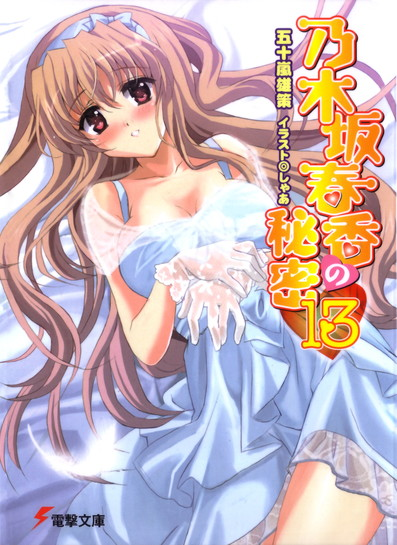
乃木坂春香の秘密⑬
容姿端麗で才色兼備、『白銀の星屑』という二つ名まで持つ超お嬢様、乃木坂春香。修学旅行最後の夜の出来事や椎菜の告白などを経て、これまでハッキリとは分かってなかった春香に対する自分の本当の想いに、ようやく俺は辿り着いた。最も大事にしたいのは誰なのか......そして、春香が好きだという気持ちに──。
春香と出会ってから様々な出来事を乗り越えてきたこの一年、そんな想い出に浸りながら、春香と迎える二度目のデート。春香の好きな秋葉原を巡り、東京湾クルーズでの夕食を楽しむ。そして最後に待っていたのは、高級ホテルのスウィートで二人きりというご褒美で──!?
だが、絆の深まるデートをお膳立てしてくれた美夏がなぜか元気がなくて......。
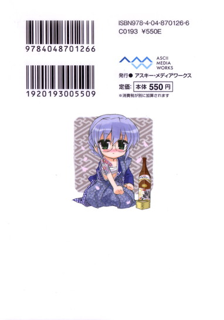
五十嵐雄策
五十嵐雄策の秘密⑬。10月３日生まれのＯ型。第４回電撃ｈｐ短編小説賞最優秀賞を受賞し、文庫デビュー。本人も大好きだった椎菜がついに......な展開を経て、彼女に対する思い入れのリバウンドも何とか乗り越え、今度はさらにお気にいりの美夏なのでダメージも蓄積!?
イラスト：しゃあ
しゃあの秘密⑬。「電撃Ｇ'ｓマガジン」で『ＣＬＡＮＮＡＤ』のコミック連載中。今回は美夏祭りということで、本人も美夏の可愛さを最大限にアピールすべく気合入りまくりです！
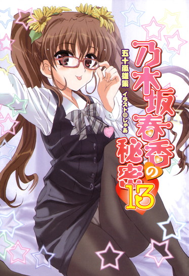
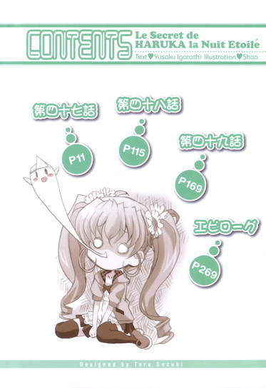
乃木坂春香の秘密 13
第四十七話
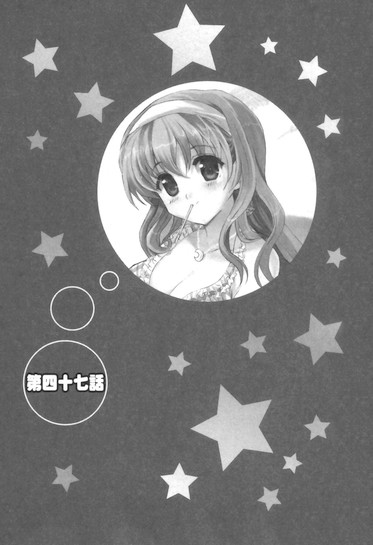
０
目の前にあるシチュエーションが何なのかよく分からなかった。
あまりに予想外で非現実的すぎて......状況は認識できるんだが脳のリアル認識を司る部分が理解することを拒んでいた。
現在時刻は三月下旬のある水曜日の夜。
俺の記憶細胞がここ最近のブタクサ花粉の影響でクシャミといっしょに吹き飛んでるんでなければ、それは朝の時点では特に変わったことはなく、何の変哲もないいつもと同じの春休みの一日であるはずだったんだが......
「......」
メガネをキャストオフ・オンしてもう一度眼前の光景を見返してみる。
視界を新しくしてみてもやはり状況はまったくもって変わらない。
そこにあるのは──キレイにメイクされたふかふかなベッドの上で、お昼寝前の甘えモードの仔犬のようにころりと無防備に転がる春香の姿だった。
慣れない状況からか少しだけ頬を赤くしながらも、それでもどこか潤んだ目でこっちを見つめてきている。
「......」
──もちろんこの場にいるのは春香と俺の二人だけ。
周りを見回してみるも目に入ってくるのはセンスのいい落ち着いた感じの広い部屋の様子と、窓の向こうから飛び込んでくる地上五十階からの鮮やかな夜景のみ。
言うまでもないと思うが──ここは乃木坂邸の一室でもなければその別荘とかでもなく、ましてや人が三人入れば人口密度的にいっぱいいっぱいになる馬小屋的な俺の部屋であるはずもない。
ここは都内で有名な高級ホテルの一つで、その中でも特に記念日とか何かのアニバーサリー的なもので利用されることでよくオシャレ系の雑誌とかに載っている、カップル御用達のスウィートルームだった。
「............」
い、いや本当にどうしてこんなことになってるんだろうね？
うーむ、自分でももはや理解不能というか......
目の前ではマクラを胸元に抱え込んだ春香がちょこんとベッドの上に座り込んでいる。
ここは状況を整理するためにも、もう一度ここに至るまでの過程を整理してみよう。
そもそもの始まりはどこだったか。
さっきも言った通り、朝の時点ではごく普通の一日だった。
普通に朝の八時に起きてルコと由香里さんの朝食を作って、ルコと由香里さんが脱ぎ散らかした服を洗濯機に放り込んで、ルコと由香里さんが宴会で散らかした居間の掃除をする。
ここ数日ですっかりお馴染みになった春休みのルーチンワーク。
......いやまあそのほとんどがどこぞのアホ姉（今年で二十五歳）とその親友（春休みに入って以来ずっとウチにごろごろと住み着いている）の世話な気はするがそれはこの際置いておいて。
とにかくそこまでは何か特別なことはなかった。
何かが動き始めたのは、確かそれから一時間後。
そろそろ昼食のマーボー豆腐の材料でも買いに近所のスーパーに出かけようと、台所で洗い物をしながら準備していた時に鳴らされた玄関のチャイムがその全ての始まりで──
１
「やっほ～、おに～さん、元気？ おはおは～♪」
「今日もよいお天気ですね～。あら、そちらのかわいらしいクマさん柄のエプロン、とっても似合ってらっしゃいますよ～♪」
「......非常にらぶりーです」
「──（こくこく）」
玄関のドアを開けたら......そこに並んでいたのはツインテール娘＆メイドさんズだった。
そこにいるのがごく当たり前といった顔で、いつも通りのものすごく楽しそうな笑顔でにこにことこっちに向かって手を振ってきている。
「............」
とりあえず何も見なかったことにしてそっとドアを閉めようとしたところ。
「ちょ、ちょっとおに～さん、待ってってば！わたしだよ？ぷりてぃ～美夏ちゃんたちだよ？怪しい訪問販売とか宗教の勧誘とかじゃないんだから～！」
「那波さんたちの顔をお忘れですか～？」
「......非常にもの悲しいです」
「──（こくこく......）」
「......」
......いやそれを十分に分かってこそこの行動に出たんだが。
何せこの顔ぶれ（ツインテール娘、にっこりメイドさん、無口メイド長さん、ちびっこメイド）が何の前触れもなしにやって来る時は、梅雨時の八〇パーセントの降水予報くらいの確率でだいたいロクなことがない。ほとんど当確と同じ感じというか。
「......」
とはいえここで現実から逃げても何の解決にもならないこともこれまでの経験で十二分に分かっている。
俺は深いため息を吐きながらドアを開けて。
「......何か用なのか？」
「え～、なにか用事がなくちゃ来ちゃだめ？ テレビで見た真っ白な北海道犬の顔がおに～さんに似てたから何となく気になってふらっと立ち寄っちゃいけないの？おに～さんとわたしはお風呂場でおんなとしての大事なところをあらいあらわれた仲な・の・に♪」
「......。......じゃあ、また」
「わ～、だから待ってってば！ ひどいよおに～さん。おに～さんはそうゆう人なの？その気の時には甘い言葉をささやいてもあきちゃえばそれですぐにぽいしちゃう鬼畜......？しょせんわたしたちなんてからだだけの関係だったってゆうんだね......」
ご近所さんに聞かれたら即刻通報を食らいそうなデンジャラスな台詞とともに、ツインテールをふりふりしながらフットオンザドアステップしてくる。
ったく、相変わらず耳年増というかムダに思わせぶりな言い回しが満載だな......
心の中で盛大にため息を吐きながら、とりあえず玄関先でこんなアレな押し問答をしていてもラチがあかなかったため居間まで入ってもらうことにする。
「わ～い、おじゃましま～す♪」
「上がらせていただきますね～♪」
「......失礼いたします」
「──（こくっ♪）」
ころっとこの上なく楽しそうな顔になってそんなことを言ってきたツインテール娘たちの姿に少しばかり疲れた気分になりながらもお茶を出して。
「......で、本当にどうしたんだ？ 特に約束とかはしてないよな。大した用がないなら買い物に出かけたいんだが......」
そう尋ねたところ。
「まあまあ、あせらないあせらない。上手な『まて』ができない男の子は女の子受けが悪いんだよ？」
「先走る青春の輝きは人生において色々と損をすることが多いですし～♪」
「......あと『ごろん』と『はうす』も重要です（きっぱり）」
「──（こくこく）」
お茶を口にしながらメイドさんたちともどもそんなことを言ってくる。
いやまあそれはその通りなんだろうがさ......
どことなく釈然としない気分になる俺を前にツインテール娘はしばしお茶をずず～とすすると。
「──ん、ちゃんと『まて』ができたね♪ よしよし、おに～さんのそうゆうとこ、わたし好きだよ♪あ、それでね、わたしたちが今日来た理由は簡単。......おに～さん、ずばり最近お姉ちゃんと会ってる？」
「春香と？」
「そだよ。あんまり連絡してないんじゃない、違う？」
「むう......」
確かにあのコンクール優勝パーティー以来春香とは会っていない。
時間にしておよそ一週間ほど。とはいっても春休みだから当然学校で会う機会もなくなるわけだし、春香も習い事やら色々な会食やらで忙しいとのことだからある程度は仕方がないというか......
だがその返答にツインテール娘は。
「あまい、あまいよおに～さん！ 和三盆でアイスクリームを作ってその上にサトウキビのシロップをたっぷりかけたくらいにあま～い！春休みで学校がないからなんてそんなの言い訳だよ！やろうと思えばいくらだって手なんてあるはず......。お姉ちゃん、おに～さんからの連絡がなくってすっごく寂しそうだったよ？ヘルプ信号を出してたよ？それに気付いてあげるのもおに～さんの役目......女の子はいつだって白馬に乗った王子様がギャロップで眠りの森から起こしに来てくれるのを待ってるんだから～」
「む......」
いくつか突っ込みどころはある台詞だったが、その内容自体はある意味もっともだった。
確かにこっちから何かをしようと思えばできないこともなかった。
だけど......何となく二の足を踏んで行動に移せなかったんだよ。
理由は──自分でもよく分かっている。春香のことを、その、あれだ、好き......だと自覚してしまってから、どことなく妙な感じというか、こっちから能動的なアクションを起こすことをムダに意識してしまっている自分がいて......
言葉に詰まる俺に。
「──でもだいじょ～ぶ。そんなへたれで残念なおに～さんを美人でやさしい美夏ちゃんたちはほっとかないから♪」
「え......？」
「ふっふっふ～、こうゆう時のための美夏ちゃんとメイド隊だよ♪──というわけで、自分からは攻めのアクションができない臆病なチワワみたいなおに～さんのためにかわいい美夏ちゃんたちが救いの手をさしのべてあげることに決めました～♪」
「わ～、お優しいですね～♪」
「......ごっどぶれすゆー、です」
「──（こくこく）」
にこにこと笑いながらそんなことを言ってくる。
救いの手......？
「ん～、要するに現状をどうにかするお手伝いをしてあげるってこと。具体的に言えばデートの段取りをつけてあげたから、おに～さんは今すぐ指定の場所に向かうよ～に。そこでお姉ちゃんがうきうきしながら待ってるよ♪」
「え？」
デート......？
「だ・か・ら、デートの段取り。あ、ちなみに約束の時間はちょうどお昼の十二時だからもうあんまり余裕ないかな～。ほらほら、おに～さんから誘ったことにしてあるからすぐに支度する～。ちゃんと優しくリ～ドしてあげるんだよ？」
にっこりと笑いながらぐいぐいと背中を押してくる。
「あ、お、おい......」
「はい、お洋服もご用意しておきましたのでこちらにお着替えくださいね～」
「......どうぞこちらへ」
「──（こくこくこく）」
それにメイドさんたちも追随してきて。
「だ、だからだな......」
半ば有無を言わせない状態で家の外に停められていた車（ロールスロイスファントム）の中で着替えさせられて。
何だかよく分からん内に言いくるめられながら......春香との待ち合わせ場所へと向かうことになったのだった。
そういう次第で勢いに流されるままに流されまくったわけだが。
美夏に指定された待ち合わせ場所というのが。
「......。......ここか......」
改札から足を踏み出しながら思わずそう口に出してつぶやく。
ここ一年の間で何度か訪れて少しずつ見慣れてきた街並み。
そこはすでに駅前からして他の場所とはどこか違う独特な雰囲気が漂っている......秋葉原の駅前だった。
「......むう、相変わらず人が多いな......」
春休みとはいえ平日にもかかわらず辺りには東京湾のマイワシの集団のごとく人が溢れている。
単純な人口密度だけでいったら東京一なんじゃないかと思わせられるような光景。
正直人が多いのはあまり得意じゃないんだが......秋葉原といえば春香のフェイバリットスポットの一つであるし、まあ待ち合わせ場所としては最適だと言えるんだろうな。
ちなみにここで春香と待ち合わせてその後どうするのかであるが。
『細かいデートプランについてはデータにしてメールで送っといたから、おに～さんはそれのナビに従って動いてればだいじょぶだよ♪美夏ちゃん特製の「美夏ちゃんす～ぱ～で～と攻略方程式ファイル」──通称「Ｍファイル」で、これを見ればウーパールーパーだって女の子を完璧にえすこ～とできるようになってるの。だからがんばれ、おに～さん♪』
とのことだった。
そのアレなネーミングと基準となっている標準値がエリマキトカゲと双璧をなすなつかし両生類ってのが若干気になるところではあるが......それでもそこまでしてくれているのはありがたい。
そんなことを思いながら携帯に開かれた『美夏ちゃんす～ぱ～で～と方程式ファイル』──通称『Ｍファイル』とやらに目を落とす。
これによるとまずは、
・春香お気に入りな秋葉原でするっと待ち合わせ。
・合流したら最初に何を置いても服を褒めること（『褒めるポイントについてはその場のおに～さんの判断でぬるっと♪』）。
・小粋で軽快なトークで場を温めつつ、そのまましばらくは辺りを散策（『と～く内容はふわっとした感じで。行き先はノリと雰囲気でまるっと。行った先で何をするかはおに～さんのふぃ～りんぐと感性でざくっと。詳細は自分で考えてね♪』）
ということになっている。
「............」
......おい。
どこが女の子を完璧にエスコートなんだよ......
ナビどころかほとんど丸投げ状態だろ......
ツインテール娘がおでこの横でピースサインを横向きにして『きらっ☆』と掲げている画像付きのファイルを見ながら、そのフリーダムっぷりに呆れていると。
「あ──裕人さん♪」
「お......」
背後から声がかけられた。
人で溢れた雑踏の中でもはっきりと他と区別できるウイスパーエンジェルボイス。
声の元で手を振りながらぱたぱたとこっちに向かってきていたのは......およそ七日ぶりに見るぽわぽわお嬢様だった。
小走りでやって来ると少し慌てたようにこっちを見上げて。
「あ、あの、すみません、遅れちゃいましたか......！」
「あ、いや、大丈夫だ」
現在の時間は十一時四十五分。
遅刻どころか十五分前行動のお手本のようなナイスマナーである。
それを聞いた春香はほっとしたような顔になって、
「そ、そうでしたか......よ、よかったです。お洋服を選んでいたらおうちを出るのが遅くなってしまって......」
安堵の息を吐きながら安心したように胸をなで下ろす。
むう、相変わらず真面目だな......
ちなみに今日の春香は春らしい服装だった。
さわやかな淡いパステルカラーを基調としたニットにフリルの付いたかわいらしいスカート。
それに柔らかな雰囲気の白のスプリングコートを合わせている。
それは清楚でありながら可憐でかわいらしいいつもの春香ライクなお嬢様コーディネートであったわけだが......
「......」
う、うーむ、何だか胸にズゴン！ とクるもんがあるな......
いや春香と二人で秋葉原に来るのは別にこれが初めてってわけではないし、いわゆるその、デートもいちおうはこれで二回目である。本来ならいくら何でもここまで胸がハードアクションするってことはないはずなんだが......
「......」
「......裕人さん？」
「......え？ あ、ああ」
春香の声に我に返る。
さっきも少し言ったが......俺の方の意識が前とはメタモルフォーゼしちまってるんだよ。
春香のことが......その、好きだという自覚。自分の本当の気持ち。その影響で春香の姿がこれまでの五倍増しでまぶしく見えるというか......ぬ、ぬう、なんかそんなことを考えていたら余計に顔面に血流が集中してきた......
思わぬサプライズアタック（？）に服を褒めるどころか春香の顔すら見られずにモニョモニョとしていると。
「？ 裕人さん、どうされたのですか？ 何だか顔が赤いみたいですが......もしかして、具合が良くないのですか......？」
「あ、い、いや、そういうわけじゃないんだが......」
「え、で、ですが......」
「だ、大丈夫だ。ちょっと厚着をしすぎただけというか......」
「そうなんですか......？」
「あ、ああ」
首を振ってそう答える。
実際問題本当に体調が悪いわけじゃないし、春香に余計な心配をかけるわけにはいかない。せっかくの春香との二人きりの時間なんだし。
そう説明すると春香も納得してくれたみたいだった。
「そうですか......それでしたらよかったです♪」
安心したように胸に手を当てながらにっこりと笑いかけてくる。
とはいえまだ顔面は焼き立ての鉄鍋餃子のごとく熱くなったままだから早いところクールダウンさせんと。
手でパタパタと風を送りながら自家製冷却運動をしていると。
「............」
と、春香が黙ったまま何やらこっちをじ～っと見つめてきているのに気付いた。
何か物言いたげというか怪訝そうな目。
む、これはもしかしてあれか......？ 俺の赤くなった顔面が胞子噴射寸前のベニテングダケみたいで気持ち悪かったとか......
だとしたら早急に改善せんと。
味は美味しいが食べると幻覚を見たり嘔吐を引き起こしたりして大変なことになる毒キノコ状態になった顔面環境を何とか復旧させるべく、慌てて右手での冷却運動を加速させようとして。
「あ、あの、裕人さん......今日は、その、あ、ありがとうございます......」
「え？」
と、耳に飛び込んできたのはそんな言葉だった。
見てみると春香は少し恥ずかしそうに顔をうつむかせて。
「え、えと、こうやって、何といいますか......で、で～とに誘っていただいて......。それもわざわざ裕人さんの方から声をかけてくださって......。そ、その......もちろん裕人さんといっしょにどこかに行くことができるだけで十分なんですが......ゆ、裕人さんから誘ってくださったのが、本当に感激で......」
きゅっと両手を握ってこちらを見上げると。
「すごく......す、すっごく、嬉しかったです......。嬉しくて胸の中がお空の上の雲になってしまったみたいにふわふわどきどきしていて......ここに来るまでに何回もスキップをして、ちょっと転んだりしちゃいました......♪」
「春香......」
「え、えへへ......♪」
小さくはにかみながら恥ずかしそうに口元を緩めてくる。
その本当に幸せそうな反応を見て......もっと早くちゃんと自分で動いておけばよかったと後悔した。
心の底から嬉しそうな甘えた春香の笑顔。
俺の方からデートに誘ったという事実だけでこんなに喜んでくれるなら、意識だの何だのと余計なことを考えて躊躇してる場合じゃなかった。案ずるよりも産むが易しの心境で何を置いても何かアクションを起こすべきだった。本当に後悔先に立たずというか......
「あ、だ、だけどなんか変な感じですね......。胸がどきどきしすぎていて......逆に言葉が出て来ないといいますか......」
「え、あ、ああ、そうだな......」
「な、何だか不思議な心地です。どこか世界が変わってしまったみたいで、で、でも決して居心地の悪いものじゃなくて......」
「......」
「......」
「......」
そのままそこはかとなく頬を赤くしたまま互いにこそばゆい気分で顔をうつむかせ合う。
顔を合わせているのが何となくためらわれるような空気。
同じ空間にいるだけでお互いの考えてることがそのまま伝わってしまっている感じというか......う、うーむ、なんか春香の顔が見られない......
そんなこっ恥ずかしさを誤魔化すように俺は顔を上げて。
「あ、あー、それじゃあそろそろ行くか」
「え......？」
「ほら、せっかくの、その、〝デート〟なんだ。ここでこうしてるのもアレだし、春香の好きなアキハバラなんだし......」
「あ、は、はいですっ♪」
その言葉に春香がこっちを見上げながら笑顔でうなずき返してきてくれて。
俺たちは二人並んで歩き出した。
今日は何かいいことがあると......いいな。
２
秋葉原の街は相変わらずにカオスだった。
辺りを見回せばあちこちからカラフルでビビッドなポップやら看板やらが視界に飛び込んできて、大通りの両脇に並んでいるゲームやらアニメグッズやらの店舗からは現実にはあり得ない髪の色をしたかわいらしい女の子キャラの映像や音楽がほとんど環境音楽のごとく自然に流れてきている。
さらに道のあちこちにはメイドさんだとか巫女さんだとかバニーガールだとかが普通にビラを配っているわけであり......
......うーむ、シュールだ......
以前にも増してごった煮状態になっているというか。
そんな中。
「わ、わあ、裕人さん！ 見てください、『アキちゃん巨大化ヴァージョン』の実物大の看板さんです♪」
「お、ホントだ」
「す、すごいです！ とってもかわいらしくてぱわふるで迫力があって......あ、向こうには春琉菜様の制服を着た方がいらっしゃいます！こ、こすぷれのお店なのでしょうか......！」
「かもな。『コスプレ喫茶クレセントムーン』って書いてある」
「す、素敵です......♪」
ものすごく楽しそうな春香。
まさに温水を得た熱帯魚状態で、両手を興奮状態の仔ペンギンのようにぱたぱたと忙しく動かしながらあちこちにふらふらと吸い寄せられていく。
その様子はまんま小動物のようでこの上なくかわいらしくあったんだが......
「......」
......にしても春香はやっぱり目立つな。
今さらかもしれんがそれが一番の感想だった。
歩道を埋め尽くすような大勢の人の中にいながらにして、春の星空を照らす一等星のようにキラキラと光り輝いている。いやもともと春香はキレイでかわいくて目立つ存在であったことは間違いないんだが、その、好きな女子として意識するようになって改めてそのことを肺腑の奥底に思い知らされたというか......。周りの視線も、男女問わず夜間のライトに向かってくるダツ（光に突撃する習性のある魚）のごとく春香の方に集中してるし。
「？ どうしました、裕人さん？」
「え？ あ、いや......」
「......？ あ、ほら、見てくださいです！ あちらにふぃぎゅあのお店がありますよ。いっしょに行きましょうです♪」
手をくいくいと引っ張りながら笑顔でそんなことを言ってくる。
その無邪気でシッポを振る仔犬のようなアクションに周りからの視線はさらに集中するわけであり......
うーむ、スゴいな......
どこに行っても他の追随を許さない春香の魅力っぷりに複雑な気分になっていて。
「──あ、裕人さん、あれは何なのでしょう？」
「ん？」
と、春香がちょこんと首をかたむけながらそう言ってきた。
その白くて細い指がさした先にあったもの。
それは歩道に向かって入り口の開かれたゲームセンターの中にある、一台のゲームだった。
ガラスケースの向こうにたくさんのフィギュアが入った箱が並べて積み重ねられている。あれは......
「ん、あれはクレーンゲームだろ。あのクレーンで景品を掴んで取る......」
「え、あ、あれがお話で聞く〝くれーんげーむ〟......！わ、わあ春琉菜様のふぃぎゅあがたくさんあります。それだけでなくて、美瑠夏ちゃんや椎乃さん、楠葉さんに那奈緒さんやみずき先生まで......」
ぴたっとガラスに張り付いて感激の声を上げる。
当然これも初めてなんだろうな。その目はイチローのサインボールを前にした野球少年みたいにきらきらと輝いていて......
「──そんなに気になるならやってみたらどうだ？」
「え？」
「クレーンゲーム。一回百円だからそんなに高くもないし」
「そ、そうなのですか？ あ、は、はいっ！ ぜひっ！」
大きくぶんぶんと首をうなずかせて。
春香のクレーンゲーム初体験が始まった。
「が、がんばりますっ。は、春琉奈様、取れますように......（どきどき）」
お祈りをするように両手を胸の前で合わせながら百円玉を投入する。
──だがここで一つ大事なことを忘れてたんだよ。
春香のちょっとしたキャラというか特性。
そのことは最初に春香と二人で秋葉原に来た時にイヤというほど思い知らされていたはずなんだが、ここ最近はそういったシチュエーションに遭遇することがなかったためすっかり頭から消えていたというか......
それは──
「......あ、し、失敗、です......」
「......」
「もうちょっとで取れそうだったんですが......。う、う～ん、こ、今度こそ......あ、あれ？ま、また外れて......。つ、次こそは......ですっ......」
「............」
ぐっと両手を力強く握りながらクレーンの行く末を見守る。
だがその目の前で、クレーンのアームは虚しく春琉菜様のフィギュアをすり抜けていく。
「あ......」
呆然となる春香。
しかしすぐに何かを思い直したかのようにふるふると首を振ると、再び財布から百円玉を取り出してコイン口に投入した。
「こ、今度こそ......今度こそ......っ......」
だけどその気合いも虚しくアームは三度虚空をかすめていって──
「う、うう～......」
半ば涙目になりながらさらに財布からコインを出そうとする。
──そう、特性とはこれ。
いつかのガチャポンの時にもそうだったが、一度これを取ろうと集中（？）したら最後までのめり込んで周りが見えなくなるんだよな。
まあその気持ち自体は分かるというかだれしもが少なからず持っているものである。
なのでどうせなら取らせてやりたいとは思うんだが......
「──あー春香、とりあえずここは落ち着かないか？」
「え、で、ですけど春琉奈様が......」
「それは分かるけど急がば回れだ。焦ってもいいことはないし色々取り方のコツもあるみたいだし......」
「え、そ、そうなんですか？」
ばっ！ と顔を上げてぐっと身を乗り出してくる。
「ん、ああ」
クレーンゲームのコツ。
いつだったか信長が頼まれもしないのにそんなことを（一方的に）話してたような気がする。
確か。
『あのねー、クレーンゲームで上手くゲットするポイントは発想の転換なんだよー。クレーンがアームの形になってるからあれで掴んで取らないとダメだって思い込みがちだけど、実はそうじゃないんだよねー。アームの外側で景品を弾いたり、クレーン本体で上から押し付けたり、棚の傾きを利用したりー......。他にも景品の重心とか位置とか、極めるためには色々と考えないといけない要素があってねー......』
とか何とか。
あの時は適当に聞き流してたんだが......まさかこんな時に役に立つとはね。
「詳しくは分からんがいくつかあるみたいだ。とにかく色々考えてやってみよう」
「あ、は、はいですっ」
そうぎゅっと両手を握ってくる春香にうなずき返して。
二人で頭をひねらせながら春琉菜様フィギュア攻略を始める。
「うーん、まだ箱が少し奥に入ってるな。そこでもうちょっと引っかけて......」
「は、はいっ。こうでしょうか？」
「ん、そんな感じだ。少し前に出て来た」
「も、文字通り一歩前進ですっ」
「よし、そうしたら今度は上からアームを押し付けて......」
箱の隙間に引っかけたり角を上から押してみたりと色々と試行錯誤してみる。
そんな風にクレーンを動かすこと都合八回。
ついに──
ゴトンッ。
「や、やりました......っ！ は、春琉奈様の『殺戮天使』ヴァージョン、げっとです......！」
「おお、やったな、春香！」
「は、はいっ......♪」
春香が心から嬉しそうな声を上げる。
とうとう箱は載せられていた台から落下して......お目当てのブツを手に入れることができた。
「わ、わあ......全国大会で相手チームのラフプレイが原因となって美瑠夏ちゃんを病院送りにされてしまい怒りと憎しみとに捕らわれてしまった時のドス黒い殺戮のオーラまで再現していて......す、すごいです......」
ゲットした春琉奈様のフィギュア（なんか阿修羅みたいな顔になってる......）を大切そうに抱きしめる春香。
その表情は当のフィギュアとは対照的に幸せいっぱいなものであって......
「あ、ありがとうございます......！ 裕人さんのおかげで春琉奈様ふぃぎゅあをこうして無事に身請けすることができました。大切にしますね......♪」
「や、俺は別に。春香ががんばったからだ」
大したことはしてないというか。
実際にクレーンを動かしたのは春香で、俺がやったことといえばナビゲートくらいだし。
その言葉に。
「......裕人さんはどうしてそんなに優しいんですか......？」
「え？」
「本当に優しくて温かくて......。いつだってどんな時だって、当たり前のようにそこにいて助けてくれて......。お話の中に出て来るヒーローさんみたいです......」
「え、いや」
だから別にそんないいもんじゃないんだが。
だけど春香はふるふると首を振って。
「そんなことないです。裕人さんは他のどなたにも替えられない素敵な方です。とってもかっこよくてとっても素敵な、世界で一人だけの王子様......♪」
きゅっと両手で俺の手を包むように握りながらそう甘えたように笑いかけてくる。
む、むう......そんなことを言われると照れるじゃないか......
面映ゆさのあまりに顔面がハバネロ状態だったので。
「あ、あー、何だ、せっかくだからもう少し中を見てみるか？」
「え？」
「ほ、ほら、他にも色々ゲームはあるし、どうせならたくさん見てみた方が楽しいというか......」
その言葉に春香はにっこりと笑って、
「裕人さん......は、はいですっ♪」
頭の横にちょこんと敬礼のように手を当ててあどけない笑みを向けてくる。
う、ホントにヤバいくらいにかわいいな......
で、そういう流れでそのまま少しゲームセンターを見てみようということになった。
五階建てになっている、どちらかといえばちょっとしたアミューズメントパークといった雰囲気の内装。
クレーンゲームが初めてだった春香は、当然こうしたゲームセンター自体にちゃんと来るのも生まれて初めてなのであって......
「み、見てください、裕人さん！ わにさんたちが食らいついてきてますです！」
「おお、そうだな」
「あんなに歯をむき出して......。あ、す、すごいです......あ、あちらにはもびるす～つが！こっくぴっとまで再現されていて......」
何を見てもはしゃいだ仔犬のように興奮気味に目をシロクロとさせていた。
「げ、げ～むせんた～......えきさいてぃんぐですぺくたくるで、まるで小さな遊園地みたいです......」
感動したような声。
ふむ、小さな遊園地ってのは言い得て妙だな。特性を的確に捉えてるというか。
そんな風にブラブラと色々なゲームを見ていて。
「ゆ、裕人さん裕人さん！」
と、春香が一際興奮したようにくいくいと腕を引っ張ってきた。
「ん、どうしたんだ？」
「こ、これは何なんでしょう？ は、春琉菜様たちが画面の中で楽しげに踊っています......！」
「あー、ええとこれは......」
筐体の脇にある説明書きに目を通す。
書いてある内容によると、どうやらこれはノクターン女学院ラクロス部のキャラたちをモチーフにしたリズムゲームのようだ。オーソドックスなスタイルで、画面に出て来る○、×、△、□のアイコンに合わせて手元にある四つのボタンをタイミングよく押していくというやつである。
そのことを春香に説明すると。
「わ、わあ......春琉奈様たちのりずむげ～む......♪」
しばし白昼に天使の集団降臨でも見たかのように目を輝かせて顔の前で手を握りながら陶然とした顔をしていた。
だがやがて何かを思い付いたかのようにこっちを見上げると。
「──あ、あの、裕人さん」
「ん？」
「え、えと......よろしければこのげ～む、私といっしょにやりませんかっ？」
「え？」
両手をぎゅっとグーにしながらそんなことを言ってきた。
「さっきのくれ～んげ～むも、裕人さんと二人でやったおかげでうまくいきました。やっぱりこういったげ～むはいっしょにやった方が楽しいです。ボタンを二つずつ分け合って二人でやりましょう♪」
「それは構わんが......」
ただ俺は当然このゲームやったことがない。何かのプラス要素になれるとは思えないんだが。
俺のその言葉に。
「あ、それは私もなのでだいじょぶです。それに......上手にやれるかどうかでなくて、裕人さんといっしょにやることに意味があるんですから♪」
ちょっと恥ずかしそうにそう言ってくる。
「春香......」
嬉しいことを言ってくれる。
そういうことなら断る理由なんてケサランパサランの毛先ほどもあるはずがない。
「分かった、いっしょにやろう」
「ほんとですか？ えへへ......やりました♪ 裕人さんといっしょに春琉菜様のりずむげ～むです......♪」
何だってそんなに嬉しいんだかは不明だが、そこまで喜んでもらえれば付添人冥利に尽きるってもんである。
うなずき返して春香の隣に並んで立つ。
で、ゲームのやり方だが、どうもこのノクターン女学院ラクロス部のリズムゲームとやらは全国にオンラインで繋がっているシステムらしく、最初に情報を入力するためのＩＣカードを購入して、それを介して必要事項を入力するところから始めることになっているようだ。
「ええと......まずは名前を入れるみたいだな」
「名前......？」
「ああ、ハンドルネームみたいなもんか。まあこのゲームで使うだけのものだから、適当でいいんじゃないか？」
極端な話、山田太郎とか浜口ジェイソンとかで全然構わないはずだ。
まあそれはあまりにあまりかもしれんが。
すると春香は何か名案を思い付いたって顔でぽふんと手を叩いて。
「分かりました。じゃあこういうのはどうですか？裕人さんと私の二人でいっしょにやる名前ですから......」
そう言いながら春香が慣れない手付きでタッチパネルに触れていく。
そこに表示されていた名前は──
『♪綾瀬春香♪』
の、四文字だった。
「............」
「どうですか？ 裕人さんの名字と私の名前を合体させて、できあがりです♪」
埋まっているを金塊見つけた仔犬みたいな無邪気な笑顔でそんなことを言ってくる春香。
いやまあ春香としては本当に俺の名字と春香の名前とを取ってきただけで深い意味はないんだろうが......
「..................」
......や、どうしたってこれはそういうことを連想させちまうだろ。
名字が綾瀬で名前が春香。
その、何だ......この名前の組み合わせは、普通に考えれば俺と春香が、あれだ、──した時に発生するものであって......
「......」
む、むう、深く考えるとまた色々と顔面の温度が大変なことになってくる......
だがそんな俺の動揺など露知らぬ顔で隣のぽわぽわお嬢様は。
「ほら、何だかとってもいい感じだと思いませんか？すごくしっくりくる組み合わせで......。えへへ、綾瀬春香、綾瀬春香......♪」
「......」
......ま、まあ春香のぽわぽわっぷりは今に始まったわけじゃない。この期に及んで気にしてたら負けな気がする。
なので俺はゴホンと咳払いをして。
「じゃ、じゃあ始めるか。半分ずつだから、春香がこっちの○と×のボタンで、俺がこっちの□と△のボタンの担当だな」
「はい。がんばりましょうです♪」
にこにこと微笑みながらこっくりとうなずく春香を見て。
若干動揺する胸の内のままノクターン女学院ラクロス部のリズムゲーム（名前：『♪綾瀬春香♪』）が始まったわけだが。
「え、えと、これがこうで......わ、ま、○が来たからこれを押して......っ......」
「......」
「つ、次が×で......え、あ、あれ、△......？」
「......」
「さ、△はこちらですから右手で......×△......え、えと、同時押しですか？ど、どうやったら......」
「............」
うーむ、春香、意外とヘタだな。
基本的な運動神経や反射神経はいいからこういうのは苦手でないはずなんだが、どうもその慌てやすいキャラやらドジっ娘要素やらがそれを邪魔しているようである。
さらにはほとんど隣り合って密着している状態でぱたぱたと身体を動かすもんだから、
ふわり......
「......」
さらっ......
「......」
ぴたっ......
「......」
その度に髪の毛やら腕やらがおもむろにこっちに流れてきたりして。
う、うーん、気になる......
腕やら肩やらに触れる柔らかな感触。そこはかとなく漂う柔らかでどこか甘い香り。
ただでさえ単体で破壊力バツグンなそれらが、春香への意識というか好意が追加された今となってはほとんど致死レベルの勢いで弾丸のごとく心臓に迫ってくるのであって......
トドメとして。
ぴとっ......！
「！」
「......あ、ご、ごめんなさいです......！」
担当のボタンを間違えたのか、俺の手の上に春香の白魚のような手がぴったりと重なった。
ナイスタイミングなハンドタッチング。
さらにはこっち側にあるボタンに身を乗り出してきていたため、必然的に頬がほとんど触れ合うような状態になってしまっていて......
「す、すみません、う、うまくいかなくて......」
「や、い、いや......！」
慌てて離れながら首を振る。
とは言ったもののそろそろ限界かもしれん......
これ以上無自覚のダイレクトアタックが続くと理性と煩悩との間に挟まれて俺の交感神経が盛大にショートしかねんというか......
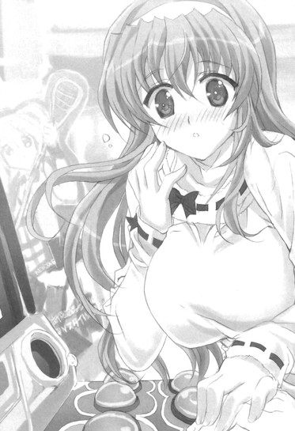
破壊力の強すぎる春香インパクトに煩悶しかけていると、ようやく一ゲームが終わったようだった。
音楽と春琉菜様のダンスとが止まり、画面には『mistake』の文字が出ている。
「うう、クリアできませんでした......」
がっくりとうなだれる春香。
まあけっこうミスしまくってたしなあ......いっしょにやった俺もやはりというか大した助けにならなかったし。
肩を落とす春香を見ながらそんなことを考えていると。
「......でも......すごく、楽しかったです」
「え？」
ふいにそんな言葉が返ってきた。
「クリアできなかったのは残念ですけれど......だけどとっても楽しい時間でした。やっぱり裕人さんが隣にいっしょにいてくれると思うとそれだけでほっと安心できるといいますか......♪──きっと春琉奈様も、こんな気持ちだったのかもしれませんです......」
「春琉奈様も？」
それってどういうことなんだ？
目の前の画面でラクロスのクロスを手に決めポーズをしているどこか春香似のお嬢様の姿を視界の端にとらえながら首をかたむける。
「はいです。春琉奈様がラクロスを始めるきっかけ......春琉奈様は昔、小学生の時にある男の子に助けてもらったことがあるんです。ちょっとした陰謀に巻き込まれて野犬に追われた挙げ句に東尋坊の崖から落ちそうになったところを、同じくらいの年頃の男の子がクロスを使った秘伝の棒術を駆使して助けてくれて......」
「......」
「春琉奈様は今でもその人のことを慕っているんです。その時にお守りとして渡されたクロスをずっと大事にしていて......。ラクロスを始めたのも、そうしていればいつかその男の子に再会できるんじゃないかと思っていたからで......。だけど第三十五話でとうとうその男の子と再会できたんです。偶然の再会で、春琉奈様はその男の子がその時の子だって気付いていないんですけれど......。でもやっぱり根っこのところで通じる部分があるのか、いっしょにいるだけでとっても幸せそうな顔をされていて......」
「へえ......」
そんな設定があったのか。
まあ何だって幼い春琉奈様が野犬に追われて東尋坊の崖から落ちそうになってたのかだとかその男の子が秘伝の棒術を習得してるんだとかいくつか突っ込みたいところはあるがそれはこの際は脇に置いておいて。
そのエピソードにはどことなく感じるものがあった。
春琉菜様と男の子との関係。
だって俺と春香も、子供の頃に一度ちょっとした偶然で出会っているのであって......
「......」
ラクロスのクロスならぬマンガ雑誌である『イノセント・スマイル』を介した出会い。
いつかそのことを......春香に話す日も来るのかね。
そんなことを考えつつノクターン女学院ラクロス部のゲームを終えて。
ちなみにこれは余談だが、ゲームの最後に表示されたスコアランキングの全国一位のところに『☆NOBUNAGA☆』というどこか見慣れた名前があったことについては......磐梯山を流れる雪解け水のごとくスルーしておこう。
その後も色々と秋葉原の各所を巡ったりした。
大通り近くのベルサールという建物でたまたまやっていたイベントを二人で見てみたり、アニメイトなどのアニメグッズショップでドジっ娘アキちゃんやノクターン女学院ラクロス部、春から始まる新番組のグッズを眺めてみたり、最初に見かけたコスプレ喫茶で紅茶を飲みながらひと休みしたりもして。
バリエーション溢れるひと時を過ごした。
それは長さにして三、四時間ほどのものであったが、中身はほとんどその倍か三倍かというほどの濃密さで、この上なく楽しい時間だった。
「裕人さん......私......今、とっても楽しいです♪幸せ......です♪」
「ああ、俺もだ」
それは俺もまったく同じ気持ちだった。
春香と二人でのんびりと過ごす時間。
それはささやかで小さなものであっても、何にも替えられないかけがえのないものであって......
やっぱり春香の存在は......それだけでこの上なく大きなものだって再確認させられるね。
３
そんなこんなをしている内に夕食の時間になった。
時刻にして午後六時。
アキハバラの街を後にした俺たちは──現在電車の中にいた。
何でも『Ｍファイル』によると夕食は浜松町へと向かうようにとのことらしい。
それまでの適当極まりないツインテール娘分一二〇パーセントのディレクションからは脱却して、いちおう夕飯をどこで食べるべきなのかはレクチャーしてくれているみたいだった。
秋葉原かその近辺でなく何だってまた少し離れた浜松町なのか限りなく謎だったが、とりあえず特に目当ての店もなかったのでその指示に従うことにしたのだ。
浜松町までは京浜東北線で秋葉原から十分ほど。
幸いなことにあまり混んではおらず、途中の車内では、
「電車で移動も楽しいですね♪ けいひんとうほくせん、どきどきです......♪」
「春香、京浜東北線は......」
「あ、はい、初めてです♪ 電車さんはほとんど乗ったことがなくて......。でも色々知ってますです。確かちゅうおうせんかくていとそうぶせんは路線はほぼ同じなのにおとなの事情で違う電車ですし、やまのてせんというのは線路が円状になっていてどこまでも続いていくんですよね？永久機関です♪」
ものすごく楽しそうな笑顔。
並んで座りながらそんな会話のやり取りをしつつガタンゴトンと揺られていき。
浜松町の駅に着いて出口の自動改札で春香が通過ミスをして「あ、あれ......？わ、私、別に金属製の危ないものは持ってないです......っ......」とぱたぱたと慌てるというプチアクシデントを経て構内を出て。
さらに駅から少し歩いたところにある目的地に到着したわけだが。
「............」
目の前にあるそれを見て言葉を失った。
携帯にある『Ｍファイル』に夕食の目的地として記されていた場所に要塞のごとく待ち受けていたもの。
そこにあったのは......見上げるほどの大きさの巨大な客船だった。
「わあ......大きなお船ですね。これでご飯を食べるところへ移動するのですか？」
「え、あ、いや......」
『Ｍファイル』にはここが目的地だって書いてあるんだが......
とはいえ眼前にあるのはどう見てもレストランとかじゃなくて客船である。
それもどちらかと言えば『豪華』という形容が相応しい感じの立派な客船。
明らかに場違いである現状にどうしたらいいもんか困惑していると、客船の乗り込み口の方から黒服を着た身なりのいいおっさんが二人近づいてきた。
「いらっしゃいませ。ご予約いただいたお客様ですか？お名前の方をお伺いしてもよろしいでしょうか？」
「え、い、いや......」
ご予約とかそんなんじゃこれっぽっちもないんだが......
それどころかお客様であるのかすらも疑わしい。
言葉を返せずにいると、俺の前で黒服の一人がもう一人に慌てたように耳打ちをして。
「し、支配人！ こ、こちらはもしかしてあの特別予約の方では......」
「......？ え、まさかこんな子供が......？ ──はっ、し、しかし、そういえばいただいていた特徴と一致する......。あ、あの......もしかして、綾瀬裕人様でしょうか？」
「え？ はい、そうですけど......」
突然出された自分の名前に困惑しながら答える。
その返答に黒服たちは驚いた顔になって。
「......や、やはりそうなのか......！ し、失礼いたしました。綾瀬裕人様、確かにご予約を承っております。どうぞこちらへ！」
「へ？ は、はあ......」
どういうことなんだ......？
何だかよく分からんまま流されるまま黒服たちに先導される。
最初は何か向こうが勘違いでもしてるのかと思った。
人違いか名前間違いとかなのかと。
だが黒服のおっさんたちに案内されて客船の中に入ってみて、段々と状況が飲み込めてきた。
船内に配置された料理用のテーブルや、従業員らしき黒服のウエイターたち。
明らかに飲食店用に改装された内装。
どうやらここは客船自体がレストランとして機能している施設のようだ。よく見てみれば色々なところにその痕跡が見られる。『Ｍファイル』を改めて見直していたところ、『そだ、ディナーの場所だけど、客船をレストランに改装して東京湾をクルージングしてくれるところにしといたから。おに～さんはもしかしたらびっくりするかもしれないけど、そうゆうものなんだよ♪』の一文が追加メールで送られてきもしたし。なるほど、世の中にはそんなもんもあるのか......
ちなみにその末尾には『あ、それとレストランの予約はお父さんの紹介ってことで取っておいたよ。たぶんＶＩＰ待遇だから、イスに偉そうにふんぞり返りながら好きなだけ食べたり飲んだりしてだいじょぶ♪』と書かれてあったんだがそれはまあそれとして。
「あ、なるほどです。お船でご飯を食べるんですね。オアシス・オブ・ザ・シーズ号みたいなものでしょうか？」
隣では春香が世界最大の豪華客船の名前を挙げて感激していた。
いやさすがにそれと比べてはアレだと思うんだが......
「わあ、デッキのあちこちにテーブルが置いてあります。きっとあそこでお食事をいただけるようになっているんですね......。こういうのは初めてです。裕人さんはどうですか？」
「え？ あ、ああ、俺もだ......」
というかそもそも船といえば鬼怒川下りの和船にしか乗ったことがない俺が客船でディナーなんてセレブ的なもんを経験してるわけがない。
「じゃあ二人とも初めてですね。えへへ、おんなじです♪」
春香が嬉しそうに笑う。
むう、かわいいな......
そんなことを話しながら船──看板とかを見るに『サンクチュアリ』という名らしい──の中を進んでいき。
案内されたのは客船の中でも一番上等っぽい雰囲気の席だった。
デッキの中で他の席からは少し離れた船首の高い部分に位置し、客船の様子と辺りの夜景とが同時に見渡せる。イスはゆったりと座れるソファ形式のものでテーブルの上にはセンスのいい間接照明とキャンドルがそれぞれ一つずつ。周りがうっすらと暗くなっていることと相まって、まるで闇の中でその席だけが光に包まれて浮かんでいるかのようである。
「すごいです、とっても神秘的で......」
「ああ、壮観だ......」
春香と二人並んで息をもらす。
さすがに玄冬さんの紹介という体だけあるというか......
目の前に広がる現実から少しだけ離れた光景に感じ入っていると。
「──それでは料理の説明をさせていただいてよろしいでしょうか？本日のコースは予約限定の一日五食のスペシャルメニューとなっておりまして......」
テーブルの脇に控えていたシェフらしき料理服姿のおっさんがそんな説明をしてきた。
「あ、スミマセン」
「お願いいたします」
春香と二人でそううなずき返して。
船上でのプチセレブリィティなディナーの時間が始まった。
席の豪華さに違わず、料理の方もかなり見事なものだった。
食前の果実酒から始まったフレンチなコース。
見た目も味も鮮やかで、ほとんどテレビや本でしか見たことがないようなラインナップが次々と運ばれてくる。
「むう......」
どれもこれも舌が鼓どころか和太鼓を乱打しまくる感じだな。
さすがにスペシャルメニューだけあるというか......
そんなセレブ料理を、目の前ではフォーマルドレス姿の春香（場面に合わせて着替えた）が上品な仕草で上手く取り分けていた。
その姿はこの上なく様になっていて......うーむ、今さらながらにさすがは乃木坂家のお嬢様だと思い知らされるね。
ちなみに料理は二人分が一つの大皿に盛りつけられていて、それをそれぞれ取り分けて食べるというものだった。
一見すると手間がかかって面倒なようだが、実のところ二人で盛りつけを分け合うことでいくつもの味を楽しめるという趣向になっている。うーむ、よく考えられてるな。
「あ、裕人さん、このオマール海老、美味しいですよ？」
「お、そうか？ じゃあ少し取り分けてもらえるか？」
「はいです。どうぞ♪」
「サンキュ。──お、ホントだ、うまい」
「ですよね？ 味付けが濃厚で身がとってもジューシーで......♪あ、こちらの舌平目もどうぞ。......あ、あ～ん、です♪」
「え、あ、い、いや......」
突然繰り出された『あ～ん』攻撃に思わずたじろぐ。
ど、どうしたんだ、春香？
だけど春香は少し恥ずかしそうな顔をしながらもそのままフォークを差し出してきて。
「あ、あ～ん......です♪ え、えと、その、以前もお伝えしましたが、乃木坂家の家訓で殿方といっしょにお食事をする時にはこうやって手ずから差し出すのが嗜みだとされていて......」
「そ、それは......」
そういえばそんなもんもあったような......
いつかの昼休みに『初あ～ん』を披露してくれたっけか。
とはいえそれは秋穂さんやらツインテール娘やらが明らかに悪ノリで口にしていただろう限りなく怪しげなトンデモ家訓であり。
動揺する胸の内を隠しながら、にこにこ笑顔の春香から舌平目を受け取る（口で）。
「ど、どうですか？ ちゃんと『あ～ん』できてましたか......？」
「あ、ああ、いい『あ～ん』だった......」
「そ、そうですか......。え、えへへ......任務完了、です♪」
今夜の春香はどこか浮かれている感じだった。
最初にちょっぴりだけ飲んだ食前酒が効いているのか、頬をほんのりとサクランボのように赤くして、さらには口数がちょっとだけ多く普段よりも少しだけ（といっても本当にほんの少しだが）テンションが高めな感じである。
「わ、裕人さん、この大きなフィレステーキ、はんぶんこしませんか？」
「ん、そうだな」
「はい♪ えと、でしたらここを切りまして......」
「お......」
「はいです、裕人さん♪」
「え、あ、ああ......」
大きめの素敵なステーキを楽しげに二人で分けたり。
「あ、裕人さん、ほっぺたにブルーベリーソースが付いています」
「ん、どこだ？」
「そちらの、向かって右側で......あ、えと、ちょっと動かないでくださいです」
「お──」
「（ふきふき）......はい、とれましたです♪」
無邪気に顔を近づけて頬をナプキンで拭いてきてくれたりと。
そんな感じで食事は進んでいった。
いつもより少しだけ距離が近いような気持ちが近いような不思議な時間。
む、むう、何だか妙な心地だな......
そして最後のデザートに差しかかったところでちょっとしたサプライズが待っていた。
「──こちらが本日のデザートとなります。『サンクチュアリ』特製のアニバーサリーケーキです」
「え......」
「あ......」
見事なタイミングで俺と春香の声が重なる。
おもむろに目の前に出されたもの。
それはパッと見た限りは普通のホールケーキだった。ただしその中央に......『春香（はあと）裕人』と『foreveryou』と書かれたプレートとオシャレな感じのキャンドルとが載せられた。
「このケーキは本日のカップル様用プラン『春が奏でる二人の愛のメロディー』のデザートとなります。ベースにはシフォンケーキを用いていて、アマレットとリキュールとで甘めに仕上げました。お二人の間に永遠の幸せが成就することを、ささやかながら願って作らせていただいております」
「カ、カップル......？」
「え、えいえん......？」
春香と二人で顔を見合わせる。
い、いやほとんどワケが分からんのだがこれはどういうことなんだ......？
互いに目をパチパチとさせる俺たちに。
「そしてこちらが本日のカップルサービスのチケットとなっております。本船『サンクチュアリ』のトップデッキに位置する特別展望席『マリン・ガーデン』への入場券。よろしければお食事が済みました後、ご自由に散策してくださいませ。それではごゆるりと東京湾の旅を──」
そうペコリと一礼してシェフのおっさんはこの場にいるのは野暮とばかりに立ち去って行ってしまった。
残されたのは春香と俺とテーブル上のアニバーサリーなケーキ。
「......」
「......」
「......」
......ちょっと待て、少し落ち着いて考えてみよう。
半ば置いてけぼりな現在の状況。
カップルプランとやらとアニバーサリーケーキとやら。
シェフのおっさんの話と目の前に置かれているカップルケーキの存在意義やらをまとめてみるに......どうやらこの『サンクチュアリ』での夕飯自体が最初からカップルプラン『春が奏でる二人の愛のメロディー』とか何とかが前提で組まれていた可能性が高い。
そして何だってこんなカップルプランやらが設定されているのかが根本的な問題だが、そもそもここの予約を取ったのがあのツインテール娘だってことを考えればそれも十分にあり得る話である。
「............」
......ハア。
......どうもそれでビンゴっぽいな。
しかしあの耳年増ツインテール娘は相変わらず要所要所で色々な小技を仕掛けてくるもんだ。後でちゃんと釘を刺しとかんと......
マセガキすぎるお嬢様（次女）の周到すぎる手回しに呆れと疲れとを感じていると。
「あ、え、えと、よければ食べませんか？」
と、春香がおずおずとそう口にしてきた。
「あ、あにばーさりーけーき、あまり置いたままにしておくと生クリームが溶けてしまうかもです」
「ん、そ、そうだな......」
その言葉にうなずき返して。
テーブルの真ん中に何かの記念碑のように置いてあるアニバーサリーケーキを食べ始める。
「あ、お、おいしいです♪ 甘みがちょうどいい感じで......」
「あ、ああ、アニバーサリーだからかな......」
「そ、そうですよね、あにばーさりー......」
「......」
「......」
二人して何となく黙り込む。
アニバーサリーとカップルが意味するところについて噛み締めながらケーキのスポンジも噛み締めていると。
「......でも、裕人さんと食べられて、よかった、です......」
「え？」
「あ、あにばーさりーけーき......記念の一品なのですよね？思い出に残る大事なメモリアルの欠片......。だったらやっぱり......大切な人といっしょに、いただきたいですから......」
「あ、ああ......」
ぬ、ぬう、嬉しいことを言ってくれるな......
胸の奥にそこはかとなくドクリとくるというか......
そのまま二人で、少しだけ気恥ずかしいような空気の中アニバーサリーケーキを食べたのだった。
そよそよと流れる潮風が少しだけ火照った肌に気持ちよかった。
周りではそれらを受けてデッキに飾られた観葉植物の葉が緩やかに揺らめいている。
食事を終えて──俺たちは船内にある特別展望台『マリン・ガーデン』をのんびりと散策していた。
「気持ちいいですね、風の流れがとっても穏やかで......」
「ああ、快適だ」
『マリン・ガーデン』はちょっとした庭園ほどの広さだった。
床は木製のウッドデッキであちこちに植物の緑が備え付けられていて。
構造の関係からか高さ以上に開けた感じになっている。
「あ、裕人さん、あそこ！」
「ん？」
「見てくださいです。段差になっていて、見晴台みたいになっています」
そんな中、デッキ内でも少しだけ高くなっている場所を見つけ、楽しそうに春香がたたたっと駆け上った。
「うわあ......すごい眺めです......」
「あ、春香、あんまり身を乗り出すと危ないぞ？」
「あ、はいです。でもとってもきれいで気持ちよくて......」
目を少しだけ細めてそう返してくる春香。
その言葉通り、ゆるやかに流れる風にさらされる春香の表情はこの上なく心地よさそうである。
そして船内でも最上の位置にあるトップデッキのさらに高い部分にあたるだけあって、そこから飛び込んでくる景色は圧巻のひと言だった。
湾を挟んで対面に広がる夜景。
上空に散らばるまばゆい星々。
さらにはそれらが混じり合って絶妙なハーモニーを作り出していて......
「きれい......まるでお空の星屑をそのまま水面に投影したみたいです......」
春香がはためく髪を右手で押さえながらそう評する。
目の前の景色はまさにそういった形容に相応しいロマンチックな光景だった。
しばし穏やかな船の揺れに身を委ねながらそんな非現実的な景色を楽しんでいて。
グラリ。
「？」
と、その時波を受けたのか船が少しだけ大きく揺れた。
僅かに船体が傾くほどの横揺れ。
それ自体は大した振動じゃなかったんだが、高いところで身を乗り出していたため春香が上体を揺らす。
「あっ......」
「──と」
バランスを崩しかけた春香。
危うく足を踏み外しそうになったところで、後ろから受け止める感じに支えることに成功した。
「あ、す、すみません......」
「いや、大丈夫か？」
「あ、は、はい。裕人さんが支えてくださったおかげで......。で、でも、やっぱり危ないですね」
そう顔をかたむけて笑いながら見晴台から降りようとする。
その表情は少しだけ残念そうであり......
「......」
まあ、せっかくこんなところまで来たわけだしなあ......
やっぱりできることなら可能な限り楽しませてやりたい。
なので。
「............」
俺は少し迷ったが......思い切って足を一歩踏み出して。
スッ──
「え......ゆ、裕人さん？」
「ほ、ほら、こうしてれば危なくないと思ってな」
春香の思ったよりも小柄で柔らかな身体を──後ろから支えるように抱きしめた。
風にふわりと流された春香の髪がさらりと鼻先をかすめて、柔らかさと心落ち着く香りとが春の花のように漂ってくる。
「え、あ、は、はい......た、確かに......」
「だ、だろ？ だからよければこのまま......」
「え、えと......よ、よろしくお願いいたしますです......」
「あ、ああ......」
「......」
「......」
「......」
そのまま春香の腰に手を回した状態で二人見晴台に立つ。
客船が波をかき分けて進むにつれて心地の良い風がサラサラと流れてきて、さらには前方からは七色の光の架け橋が飛び込んでくる。あれは......レインボーブリッジ、か？
「わあ......まるで空を飛んでいるみたいです。こんなに気持ちがいいのは初めてで......」
そう声を上げて春香が鳥のマネをするように両手を広げる。
「それにそれだけじゃなくて......そういえば、何かの映画にこんなシーンがあったような気がします。大きなお船の船首で女の人が男の人に支えられて全身で風を受けて......。......やっぱり、裕人さんは物語の中のヒーローさんみたいです......♪」
嬉しそうに微笑みながら後ろに身を預けるようにしてそんなことを言ってくる。
ぬ、ぬう、かわいいな......
腕の中でにっこりと笑みを浮かべる春香。
降り注ぐ照明のシャワーと星の光とに照らされて、本当に映画に出て来るヒロインみたいである。
そのまばゆいばかりの輝きに思わずカッパに尻子玉を抜かれかけた小坊主のように呆然としていると。
「──裕人さん......今日は本当にありがとうございました」
「え？」
と、春香がそっとささやくようにそう口にしてきた。
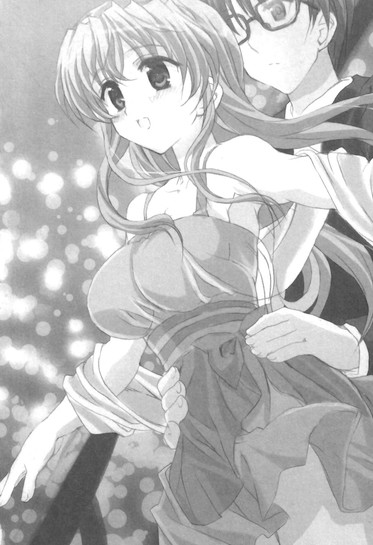
「お休みの中わざわざで～とに誘っていただいて......ほんとうに、ほんとうに心から楽しかったです。それだけでなく最後にこんなに素敵な思い出までプレゼントしていただいて......もう胸がいっぱいで......」
きゅっと俺の手を握りながらそんなことを言ってくる。
「あ、い、いやこっちこそ......」
春香と二人で、デート、することができて楽しかった。
楽しくてこれ以上ないくらいに幸せを感じられて......
むしろ俺の方こそジャンピング土下座をして、お礼を言いたいところというか......
「でもこれで今日はおしまいというのも......なんだかさみしい気がします......」
「ん？」
「ま、まだまだ名残が惜しいといいますか......も、もうちょっと、裕人さんといっしょに、い、いたかったです......」
「春香......」
それは俺もまったく同じだった。
緩やかで心安らぐ二人だけの時間。
贅沢なことを言ってるのかもしれんが、できることならばまだまだ春香といっしょに、それこそいつまでだって二人でこうして寄り添っていたいと思うのであって......
だから。
「あー、その、何だ。そ、その内......泊まりがけとかで来られたらいいな」
「え......？」
「今日は一日しか時間がなかったけど、いつかその、い、一泊旅行とかで......」
「いっぱくりょこう......あ──は、はいっ♪」
俺の言葉に春香がぱあっと表情を輝かせながらうなずいて。
『──お客様にお知らせいたします。まもなく当船「サンクチュアリ」は出発いたしました浜松町の港へと帰港いたします。旋回時に多少揺れますので、展望台やデッキにいらっしゃるお客様は、船内へとお戻りくださいませ』
と、船外に設置されたスピーカーからそんなアナウンスが聞こえてくる。
「......そろそろ戻らないと、だな」
「はい、です」
「......」
「......」
そのままどちらともなく笑顔で手を繋ぎ合って。
船の中へと戻ることにした。
時間にしておよそ二時間ほどの航海だったが、心の中は満たされた気分でいっぱいだった。
いい船旅だったな......
こうして......突然のツインテール娘たちの来訪により始まった色々とハプニングとサプライズ満載な一日は、この上なく幸せな気持ちとともに終わりを告げたのだった。
──と、思ったんだが。
『サンクチュアリ』から降りたところで、思わぬさらなるサプライズが追加された。
「──綾瀬裕人様と乃木坂春香様ですね？」
「え、あ、そうですが......」
そんな声をかけてきたのはきっちりとしたスーツを着込んだ接客に慣れた感じのおっさん。
恭しくこっちに向かって頭を下げると。
「お待ちしておりました。お名前は承っております。どうぞこちらへ。ご案内いたします」
「え？ あ、はい」
そのまま何やらスタスタとどこかへと先導される。
駅への道でも案内してくれるのかと思いきや──
「どうぞ、お入りください」
「あ、はあ......」
何やらでかい建物の入り口を通り抜けて。
「こちらでございます」
「え、ええ......」
外の景色が見えるやたらと立派なエレベーターをグングンと昇っていき。
「──こちらが本日ご宿泊されるお部屋となります。何かご用がございましたら、お呼びくださいませ」
「え......」
「......？」
何だかよく分からんまま先導されて連れて行かれた先。
それは港の近くにあって辺りの景色を悠然と見下ろしている......高層ホテルの一室だった。
４
「............」
何が何だかさっぱり分からなかった。
何だって自分たちがこんなところにいるのかがこれっぽっちも理解できなかった。
周りを見回せばちょっとした教室ほどの広さのリビングルームと他にいくつかの部屋。リビングの中央にはソファとテーブル（ともにめちゃくちゃ高価そう）が置かれていて、さらにその少し向こうには寝心地の良さそうなキングサイズのベッドも据え付けられている。
どこか現実感がなくて色々な意味で非日常な光景。
ここは何をどう見回してみても高級ホテルの一室なのであって──
「あ、え、えと......？」
春香も不思議そうに首をかたむけながらこっちを見てくる。
いや俺にも状況がさっぱり分からないんだよ......
今日は基本的にワケの分からんことばかりだが、その中でもこれは輪をかけて意味不明である。
テーブルの上に飾られた高価そうなランプを見つつ困惑のため息を吐いていると、
「......ん？」
ふとその脇に置いてある紙が目に入った。
折りたたまれたカードのようなもの。
訝しく思い手に取って開いてみると......
『は～い、おに～さんお姉ちゃん、秋葉原で～ととディナークルーズは楽しんできた～？これは愛くるしい美夏ちゃんからの今日最後のプレゼント♪二人きりのホテルでのお・と・な・な夜♪二人して水入らずのあま～いひと時を過ごせばいいと思うよ？あ、ちゃんとアリバイ工作はしてあるから、お父さんのこととかそっちのことは気にしないで一晩のんびりまったりとしてきてだいじょぶ～♪おに～さんの方もルコおね～さんと由香里おね～さんはオールで宴会だから今日は帰ってくるなってゆってるし♪Ｐ．Ｓ．男を見せてほんとのおとなのお・と・こになる千載一遇なチャンスだよ♪がんばってね、おに～さん♪』
「......」
「......」
書かれていたのはかわいらしい丸文字のそんなメッセージだった。
──またあのツインテール娘の仕業か......
どっと疲れが肩にのしかかってきたような気がした。
まあ少し冷静になって考えてみれば、今までの経緯からしてこんな手の込んだ小細工を仕込むことができるのはあの耳年増お嬢様（妹）以外にあり得ない。
とはいえまさかここまでやるとはこれっぽっちも思っていなかったわけであって。
......はあ......
心の底から疲労した気分になっていると。
「でも......何だか、不思議な気分です......」
「え？」
隣の春香が少しだけ声を小さくして言った。
「ぐ、偶然といいますか、美夏のおかげなのですけれど......さっき言っていたこと......叶っちゃいました。ゆ、裕人さんと、もう少しいっしょにいたいって......」
「春香......」
照れたように目を瞬かせながらそっとこっちを見上げてくる。
それは俺だって春香と、その、ずっといっしょにいたいと思ったりはしたわけだが......
「だけど、その......春香は大丈夫なのか？夜に何かやることがあったりとか......」
「あ、は、はい。それはだいじょうぶです。明日のレッスンの準備はもう全部済ませてありますし、会食や会合の予定とかもありませんです」
「そ、そうか......」
「は、はい......」
だったら俺としてはこれ以上何かを言うことはない。
ツインテール娘の差し金ってのが少しばかり気にはかかるが......それならこのまま、もう少し二人だけの時間を過ごしたいと思う。
だってそれはそのまま──俺の望みでもあるからな。
そんなことを考えながら春香の方を見ていると。
「え、えへへ......♪」
「？ どうしたんだ？」
と、春香が嬉しそうな顔で小さな笑みを浮かべていた。
「あ、はい。何だか新鮮で......。こうして裕人さんと一晩ずっといっしょに同じ部屋で過ごすだなんて......。何だか胸がわくわくして、まるで新婚の夫婦さんみたいです......♪」
「し、新婚......」
何気なくナチュラルに言っているだろう単語に思わず反応してしまう。
で、でもそういえばそうだよな。
確かにこれまでも春香と同じ屋根の下に泊まることはあるにはあったが、それはいつかのウチでのルコたちや葉月さんを含めたお泊まり会（結果的に）だったり温泉旅行での一幕だったり澤村さんたちクラスメイトたちがいた修学旅行での一晩だったりで、こうして同じ部屋でずっと二人だけってのは初めてなわけであって......
「......」
......ちょっと待て。
そこで一つあることが浮かんできた。
......春香と、一晩二人だけでずっと同じ部屋の中？
改めてその事実を頭の中で反復する。
それはつまり片時も場所を移すことなく春香と同じ空間で朝までの時間を共に過ごすということであり同じ酸素を吸い続けるということであり、さらによく考えてみたらベッドはキングサイズのものが一つしかないわけであるから、そのことはつまりいやがおうにも同じベッドで春香と寝なければならないということを意味しているのであって......
「............」
こ、これ......かなりデンジャラスな状況なんじゃないか？
デンジャラスどころかヘタしたらクリティカルクライシス。
やばい......意識し出したら心臓が何やら十六ビートを刻み始めてきた......
「？ どうしたんですか、裕人さん？」
「え！ あ、い、いや！」
思わず声が出る。
どうしたもこうしたも色んな意味でほとんどギリギリというか......
それを見た春香は心配そうな表情を浮かべて。
「もしかして疲れちゃいましたか......？何だか顔色が茹で上がった上海ガニさんみたいで......」
そっとこちらの頬に手を寄せながら顔を寄せてくる。
それは今の俺にはかなりのレベルで逆効果アクションであって......
「！ だ、大丈夫だ！ 別に何ともない！」
「え？ そ、そうなのですか......」
きょとんとした表情の春香。
それに反比例するかのように俺のハートビート（現在三十二ビート）はさらに激しさを増していく。
そんな俺の横で。
「あ、で、でも......これってよく考えてみたら、は、『初めてのお泊まり』ですね♪裕人さんと二人で──二人だけで『初めてのお泊まり』......え、えへへ......♪」
とろけるような笑顔で春香はそう言ってきた。
「............」
こ、このまま明日の朝までもつのか、俺の心臓......
＊
「うふふ、美夏様。春香様たち、無事にホテルのお部屋に入られたみたいですよ～♪」
「え、ほんと？」
「春香様と裕人様たちです～。今ホテル支配人の中目黒様から連絡がありまして、二人揃って美夏様がご予約されたスウィートルームに入室されたと～♪」
「ふふ～、そなんだ～♪」
「ええ、ばっちり美夏様の計画通りで～。ねえ美夏様、よろしければちょっと覗きに──こほん、様子を窺いに行ってみませんか～？もしかしたら青春のクライマックスの真っ直中かもしれないですよ～♪」
「あ、い～ねい～ね♪ ふふふ～、おに～さんとお姉ちゃんの二人だけの初めてのどきどきお泊まり体験か～。それはもう行くしか──」
「......」
「......行く、しか......」
「......」
「......」
「美夏様？」
「......あ、ううんやっぱりいいや。今日はやめとく」
「え......？」
「ん、何だろ......？ おかしいな、な～んかそうゆう気分じゃないってゆうか気が乗らないってゆうか......。ほら、お姉ちゃんたちもそっとしておいてほしい時もあるだろうし......」
「美夏様......？」
「わ、分かんないや、あ、あはは......」
「それは裕人様は信頼できますし、二人きりにしておいても大丈夫でしょうけれど～」
「......」
「......」
「......どうしてだろ、なんか......胸の中が、もやもやする。自分でこうゆう風にセッティングしたことなのに......」
＊
「わあ♪ 裕人さん、ふかふかです♪」
キレイにメイクされたふかふかなベッドの上で、春香がお昼寝前の甘えモードの仔犬のようにころころと無防備に転がっていた。
「それにとってもいい匂いがします。気持ちいい......♪」
「あ、ああ」
向けられてくる楽しげで無邪気な笑顔。
それは普段だったらこの上なくこちらの心をほんわかとさせてくれるもので癒しの極致であるはずなんだが......
「......」
だけど俺の心の中はそれどころじゃなかった。
アフリカのどこかの部族だかが儀式とかで乱打するネイティブドラムのようにドンドコドコドコ！と心臓が激しすぎるビートを刻んでいる。
顔面は熱した鉄板のようになったほとんど照り返しのアスファルト状態。
──『初めてのお泊まり』
何かを考えようとすれば頭に浮かんでくるのは春香が言ったその言葉である。
おそらく春香自身はそこまで深い意味をもって言ったわけではないだろう。
だけどそれが意味することってのは一般的には色々とヒストリカルともいえることであり......
「............」
む、むう、とりあえず心を落ち着けないと......
考えれば考えるほど余計な煩悩が掛け流しの源泉のようにゴボゴボと湧き上がってくる。
何とか精神を無に近づけようとするものの。
「裕人さんもよろしければこっちに来ませんか？ベッド、ふかふかですごく気持ちいいですよ♪」
「え、そ、そうだな......」
「ちょっとしたトランポリンみたい、です♪」
「......」
だが春香の反則的なかわいさはそれを許してはくれない。
類い希な攻撃力でグイグイと攻め込んでくる。
それになんだ、柔らかいベッドの上でころころしてるもんだからさっきからスカートの裾が少しばかりきわどい角度にめくれていたりもしていて......
「............」
......ダ、ダメだダメだ！
心を落ち着けようとしていても脳髄の奥から湧き上がってくるのは本能という名のよろしくない妄想......もとい、想像ばかり。
ここはあれだ、本格インド式瞑想でもして何とかこの場をやり過ごして......
「──裕人さん♪」
「え？」
「えいっ♪」
ぱふっ。
座禅を組もうとしていた俺に、そんなかけ声とともにベッドに置かれていたマクラの一つがかわいらしくこっちに投げられた。
「ふふ、隙あり、です♪ ほら、裕人さんもこっちに来ていっしょにやりましょうです。まくら投げ大会ですよ♪」
「......」
ちょこんと小首をかたむけながらのそんな台詞。
も、もうダメだ、かわいすぎる......
これ以上ヘタに耐えようもんなら俺の欲望貯金箱が爆発してしまう......
そのあまりのかわいさコンボに。
「ちょ、ちょっと、シャ、シャワーでも浴びてくる！」
「え？」
「適当に部屋の中でも見ててくれ、悪い！」
「あ、裕人さん」
その場から逃げるようにしてバスルームへと飛び込んだ。
勢いよくバタリとドアを閉め服を脱いで洗い場へと飛び込んで。
そのまま頭から冷たい水を被る。
気分はほとんど滝を頭から浴びる修行僧。
──これでひとまずは落ち着くかとも思われたんだよ。
頭を冷やして思考をリセットすれば、溢れ出てくる煩悩も水といっしょに涅槃の彼方へと流れてくれるに決まってる、そう思ってた。
シャワー......
降り注いでくる冷たい水。
だけどここで──俺は大事なことを一つ忘れてたんだよ。
俺が春香といっしょに一晩を過ごすこの部屋でシャワーを浴びるということ。
そのことから当然のごとく出て来る帰結というものがあって。
それを俺はすぐに思い知らされることになる。
十分ほど簡易滝行をしてシャワーから出て来た俺を待っていた言葉。
それは。
「──あ、では私もシャワーを浴びてきますね」
「......」
そんなひと言だった。
シャワー......♪
バスルームの中から聞こえてくるそんな水音。
リビングに隣接するように設置されたバスルーム（床が大理石）では──春香が鼻歌を歌いながらシャワーを浴びていた。
「............」
うう、この壁一枚の向こうで春香が、その、一糸まとわぬ姿でシャワーを浴びてるのか......
ベッドの上に腰をかけながら頭に浮かぶのはそのことばかり。
何とか頭の中から消そうとベッドの上で血気盛んなカブトムシの幼虫のごとくゴロンゴロンと転がってみても、次から次へとアレな想像が浮かび上がってくる。
「............」
『初めてのお泊まり』
二人だけの高級ホテルの一室。
そしてベッドから十歩も歩けば手の届く距離でシャワーを浴びている春香。
これらの要素が化学反応を起こして生じさせてくるピンク色の雲のような空気はどうしてもクリティカルに致命的であって......
......ダ、ダメだダメだ!!
このままじゃ坂道をころげ落ちる石のようにどこまでも転がっていってしまう！
頭を暑さにヤラれた獅子舞の獅子のごとくブルンブルン！と振り回す。
何をどう考えても状況は悪化の一歩というか。
こうなったらもはやヘリウムを入れすぎた風船のごとく膨れ上がった本能が暴走とかする前に手足（もちろん自分の！）をバスローブの腰布ででも縛っておくか......などと少しだけアレなことを真剣に考え始めた、その時だった。
パッ......パッ......
「？」
ふいに部屋の照明が何度か明滅した。
消えたり点いたりを繰り返したかと思うと。
フッ......
次の瞬間、完全に真っ暗になった。
「？」
何だ......？
反射的にベッドから立ち上がる。
暗闇の中で窓から外の様子を見ると、他の部屋の電気も全て消えているようである。
停電、か......？
周りの様子を見るにどうもそれで間違いないようだ。
しかしこんな高級ホテルで予備電源もなく全室が一斉に停電なんてそんな不具合なことがあるのか......などと考えていると。
「きゃ、きゃあああああっ......!!」
バスルームからそんな声が響いてきた。
そして。
バタン、ドタドタ......！
何やら物音が聞こえてきたかと思うと、この上なく柔らかく心地好い感触とともに、何かが暗闇の中で正面から俺の方へと突っ込んできた。
「おわっ......！」
ドサッ！
勢いでそのままベッドの上にもつれ合うようにして倒れ込む。な、何だ......？
上体を起こして確認しようとして。
「く、暗いの......こ、こわい......です......」
「春香？」
耳に入ってきたのはそんな聞き慣れた声。
突っ込んできた影は......どうやら春香のようだった。
「ど、どうしちゃったんですか......？ きゅ、急に電気が消えて真っ暗になってしまって......。ひゃ、ひゃっきやこう......？じごくのぐんだん......？い、いや......っ......」
「......」
ふるふると濡れた身体を震わせながらそんなことを言ってくる。
......ああ、そういえばそうだったっけか。
春香は基本的に大の恐がりで、暗いのやらお化けやらがとことん苦手であって......
「大丈夫だ、春香」
「ゆ、裕人、さん......？」
「ああ、俺だ」
そう呼びかけながらぽんぽんと暗闇の中で頭を撫でる。
それでようやく春香は少しだけ落ち着いたようだった。
「ゆ、裕人さん？ 裕人さんなんですね......？よ、よかった......ゆ、裕人さんが見つかって......。あ、あの、シャワーを浴びていたら、きゅ、急に真っ暗になって......」
「ああ、分かってる。たぶん停電か何かだと思う」
「停電......」
「おそらくだけどな。すぐに復旧すると思うからあんまり動かないようにしてよう」
「は、はい、です......。あ、で、でも......」
「？」
「そ、その、できましたら、明るくなるまで、そ、傍を離れないでいただけると......」
「ん、大丈夫だ」
この状況で春香から離れたりなんてするわけがない。
できるだけ安心させる声でそう言いながらうなずき返しかけて。
「......ん？」
──と、そこで気付いた。
目の前にうっすらと浮かび上がる春香のシルエット。
それは普段の目に映っているものと比べてやけに線が細いというか、全身の輪郭があますことなく強調されている感じであって......
「............」
これって......まさか、何も着てない、んじゃないのか......？
そんな考えが頭に浮かぶ。
通常ならまったくもってあり得ない妄想の類いだが、今の今までシャワーを浴びていたという条件が付随されるのなら、それは当然考え得るべき可能性の一つである。
「............」
──というか間違いなくそうだろう。
突然の停電に慌てふためいていた春香に、バスタオルやバスローブを巻き付けたり、ましてや服を着たりする余裕などあるわけがない。
とすると目の前の春香は間違いなく完全キャストオフ状態なのであって......
い、いやこれはいくら何でもヤバすぎるだろ!?
ほとんどお腹を空かせた野良ヤギの前に最高級干し草を置いた状態。
「......っ！」
せめて直接接触だけでも防ぐべく少しだけ安全距離を取ろうとして。
「え、ゆ、裕人さん、は、離れないでください......っ......！」
「あ──」
ぐいっと必死にしがみついてきた春香に身体をつかまれる。
その反動で前のめりにバランスを崩して。
ドサッ。
引っ張られた俺が春香の上に覆い被さるようにしてベッドに倒れ込むことになった。
「お......」
「あ......」
暗闇の中で視線が交錯する。
状態としてはほとんど正位置のエロマウントポジション。
腕やら胸やら太ももやらが色々な場所で触れ合っていて。
さらには春香の少しだけ茶色がかった瞳は、真っ暗な中にあっても確かに真っ直ぐにこっちを見上げてきているのであって──
「......っ」
「あ......っ......」
思わず二人して目を逸らし合った。
い、いやだって......なんか恥ずかしかったんだよ。
何かの弾みで家政婦が見てはいけないものを見てしまった時のような気まずさというか......
そんなことを考えながら逃げるように春香の瞳から視線を下げる。
すると下げた視線の先には......春香の小さな唇があった。
うっすらと桜色をした形のいい唇。
それを見てドクリと胸が蠢く。
色々あって何となく深く突っ込まれることはなくなっていたが、それはその、この前の修学旅行最終日の夜に、アクシデント的なカタチではあれダイレクトアタックしてしまったものであって......
「──あ」
と、腕の中の春香も同時にそのことに気が付いたみたいだった。
目を伏せながら頬を赤くして、少しだけ恥ずかしそうに身をよじらせる。
「あ、あの、え、えと、ええと......」
「あ、ああ......」
「......」
「......」
再びの沈黙。
さっきまでのネイティブビートとはまた少し違った感じの鼓動が胸の奥で響き始める。
激しくドクドク！ と震えるというよりはどちらかといえば静かに、だけど深く脈動するような感覚で......どこか気持ち的なこっ恥ずかしさが勝っているというか、湧き水が岩に浸潤するような感じにジワジワと心の内に染み入ってくる。
「......」
「......」
「......」
聞こえてくるのはうるさいくらいの自分の鼓動と時計の秒針の音のみ。
周りを覆っているのは耳が痛くなるような沈黙。
この部屋の中だけ時間の流れが止まってしまったかのようであって......
む、むう、どうしたらいいんだかさっぱり分からん......
何一つとして対処しようのない状況に完全に停止状態に陥っていると。
きゅ......っ......
「！」
ふいに何かにすがるように、春香がぎゅっと目をつむりながら俺の服の袖をつかんできた。
まるで道に迷った仔犬みたいな心細げな様子。
──おそらくは苦手なまっ暗闇の中で無意識にやった行為なんだろう。
ほとんど反射的といってもいいナチュラルリアクション。
だけどそんな春香が......いとおしくてたまらなくなってきた。
目の前で小さくこっちを見上げる春香。今すぐこのままその身体を引き寄せて、抱きしめてしまいたい。目の前にあるこちらに向けられた桜色の小さな唇に、その、ダイレクトアタックをしてしまいたい。そんな衝動が雨後のタケノコのようにムクムクと胸の奥から湧き上がってくる。
「............」
い、いや、春香は純粋に俺のことを頼ってこうしてきてくれてるんだろ！
その信頼を裏切るようなマネはできない。
できないん、だが。
だけど目の前の春香はあまりにも魅力的でかわいくて......
さらには俺の春香に対する気持ちが加速要素となって。
どうしても──抑えられないんだよ。
「は、春香......」
「ゆうと、さん......？」
思わず服に添えられた手を握り返すと、春香が不意を突かれたように目を瞬かせた。
戸惑うような不思議がるような反応。
だがその目には驚いたような光は浮かんではいたが、こっちの行動を拒否しているものではない......と思う。
だから俺は。
「は、春香、俺は......」
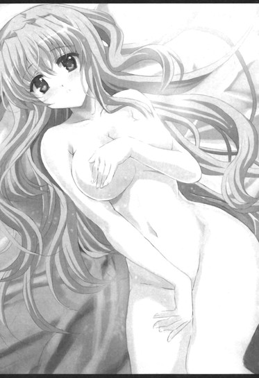
「え......？」
「お、俺は、春香のこと──」
「あ──」
春香の目を真っ直ぐに見つめながらその小さな肩に手をかける。
ぴくりと春香の肩が僅かに震えるのを感じて。
そのままその小さな身体を抱きしめるべく腕にさらに力を込めようとして。
と──その瞬間。
ヒュー......ドン！ ドン！ ドン！
「え？」
そんな音が窓の外に響き渡り、同時にいくつもの色鮮やかな光が雨となって部屋の中に降り注いだ。
「これは......」
花火、か......？
窓の外に残像を映しながら流れるいくつもの光の筋。
それらはまばゆいばかりに夜の闇を染め上げて、部屋の中にも鮮やかな輝きと煌めきのコントラストを作り出していて......
「きれいです......」
「ああ、ホントに......」
それでふと我に返った。
それまでの張り詰めた空気から解き放たれて思わずそんな言葉を発する。
暗闇に包まれた夜空に断続的に上がる花火は本当にキレイだった。
華やかで鮮烈で、どこか幻想的ですらあって......
だけどそれだけじゃなかった。
光に照らされて七色に染まる春香の整った横顔。
浮かび上がる均整の取れたシルエット。
それらの方こそ花火なんかよりもよっぽどキレイだと思ったりなんかしたりもしたわけだが......もちろんそんな素面で酔っぱらっているレベルというか四十代のおっさんの匂いを感じさせるバブル世代な台詞を口には出せるわけがない。
だけどホントにキレイだ......
それだけは事実だった。
キレイでまばゆいばかりに輝かしくて......
そんなことを思いながらしばらく眼前の春香の姿に見蕩れてしまっていて。
『──ご宿泊のお客様にお伝えいたします。私、当ホテル支配人の中目黒と申します。皆様、お部屋の窓から見える花火の景色はお楽しみいただいているでしょうか？』
「？」
と、ベッド脇に備え付けてあるスピーカーから館内放送のようなものが聞こえてきた。
『あらかじめお伝えさせていただきました通り、現在は湾岸で行われている花火のために全室の照明を一時的に全消灯とさせていただいております。不都合もあるかと思いますが、しばしの間ご了承ください。そしてどうぞ皆様、春の夜に描かれる贅沢な光の饗宴をお楽しみくださいませ』
なるほど、これはホテル側の演出だったってわけか......
よく見てみれば確かにテーブルの上に『本日ご宿泊のお客様へのご案内』と書かれた紙のようなものが置かれている。
道理で計ったように同時に全ての部屋の電気が消えるはずだ。
「え、えと、いべんとだったんですね......」
「みたい、だな......」
春香とともにうなずき合う。
それとともに辺りを覆っていた妙な雰囲気は完全に元に戻って。
だけど俺の胸の奥の深いところは......いまだにドクリドクリとその鼓動を持続したままだった。
５
胸の奥がドゴンドゴンとうるさいほどに音を立てていた。
建設中のマンション工事現場のごとくハートアクションがフル出力で稼働中だった。
花火大会が終わって。
照明が戻ったホテルで、その後も当然のごとく『初めてのお泊まり』は続行された。
ベランダから港の夜景を眺めてみたりホテルのラウンジフロアでお茶を飲んでみたり（もちろん服を着た状態で）。
春香のたっての要望ということでまくら投げ大会をしたり。
それら自体は特に何があるというわけではないまったりとした時間。
だけど......俺の胸の中の鼓動は一向に収まらなかった。
さっきの暗闇でのアクシデントが発端となって発生した強心剤が必要なレベルの動悸。
そのことはいまだに俺の中で消火しそこなった夏のロケット花火のようにブスブスと燻っていて。
「......」
そして。
そんなことを考えている内に......とうとう今日最後にして最大のターニングポイント、就寝時間がやって来る。
リビングの一角にドンと置いてあるベッド。
その僅か二〇〇センチ×二〇〇センチのスペースで、俺は春香と二人きりで寝なければならないのであり......
「あ、あー、春香。やっぱり俺はそこのソファか床か風呂場で寝るから......」
いちおうそう提案してはみたものの。
「え、ど、どうしてですか......？ せっかくこんなに大きいベッドがあるんですから、いっしょに寝ましょうです。ゆ、裕人さんがそんなことをするくらいなら私も床で......」
「......」
一生懸命な顔の春香にそう言われてしまってはそれ以上こだわるわけにもいかず。
ということで──
「......」
「......」
現在キングサイズなベッドで二人、並んで横になっているのだった。
「......」
む、むう、落ち着かん......
とにかくそんな心地で頭の中がいっぱいというか。
だって......いっしょに寝てるのは春香なんだよ？
感じるのはブランケット越しに伝わってくる体温と僅かな息遣い。
甘やかで柔らかで心落ち着くほのかな香り。
すぐ隣で──それこそ寝返りを打てば頭突きができるほどの至近距離で春香が寝ているのかと思うと、どうしてもさっきの出来事が頭に浮かんでくるのを止めることができなくて......
「............」
そんな中、ふとあることを考える。
春香との関係において付け加えられたもう一つの新しい要素。
──俺はやっぱり春香が好きだ......
椎菜と池袋に出かけた時にも感じたことだが、やはり最後にいっしょにいたいと思うのはこのぽわぽわお嬢様以外に考えられない。それはもう俺の中では太陽が東から昇ること以上に確定的なことであって......
「......」
でも春香は、俺のことをどう思ってるんだろうか......？
そのことを考えると胸の奥がザワザワとしてくる。
少なくとも嫌われてるってことはないと思う。
だけど『好き』だと思われているかと言われると......それも正直よく分からないんだよ。
いつでも笑顔の天然なぽわぽわお嬢様。
好きか嫌いかで言えば間違いなく微笑みながら好きだと言ってくれるだろうが......それが果たして、ただの友達レベルとしての『好き』なのか、それとも、その、男女でいうところの『好き』なのか......
「......」
......う、うーむ......
......分からん......
こればかりは春香本人でないと答えは出ないというか......
独力では解決不能な命題に頭を悩ませていると。
「あの......裕人さん、まだ起きてらっしゃいますか......？」
「え？」
と、隣の春香がうかがうようにそう小さく声をかけてきた。
「えと、寝てしまっていたら申し訳ありませんです......。もしまだ起きていらっしゃるならと思いまして......」
「あ、いや、起きてる」
というかほとんど眠れる状況じゃないというか......
「あ、ほんとですか。よかったです」
「どうしたんだ？ 眠れないのか？」
俺のその言葉に。
「あ、はい。何だか寝てしまうのがもったいなくて......。せっかくこうして裕人さんとひと晩いっしょなんですから、少しお喋りできたらなあって......」
少しだけもじもじと身体を動かしながらそう言ってくる。
むう、嬉しい台詞だな......
グルグルとループする命題に悩む中、ひとまずは春香のその気持ちをありがたく思っていると。
「そ、それに......何だか不思議なんです......」
「不思議......？」
「は、はい、です......。裕人さんといっしょにこうしておなじベッドで寝ていると、胸が少しだけ苦しいといいますか、ど、どきどきと落ち着かなくて......。ゆ、裕人さんといっしょにいられるのは嬉しくて望ましいことのはずなのに......」
「それって......」
分からんが......春香も俺といっしょに同じベッドで寝てることを少しは意識してくれてるってことだよな。
ハッキリとしたことは言えんが、そうとしか考えられない。
そんなことを考えていると春香はさらに言葉を続けて。
「い、今だけじゃないんです。さっきもそうでした......。お部屋が真っ暗になって、裕人さんと、その、ベッドに倒れ込んでしまった時......あの時もやっぱり同じように胸が苦しくなって、気が付けば裕人さんの腕を握ってしまっていました......。じ、自分でもどうしてあんなことをしてしまったのか分かりません。どうして胸がどきどきするのかも分かりません......。で、でも、この胸の苦しさは決してイヤな苦しさじゃないんです......。苦しいには苦しいのだけど、その一方でどこか高揚感といいますか、気持ちが高まっていくのを感じて......」
「......」
「わ、私、どうしてしまったんでしょうか......？何かおかしいんでしょうか......？」
そう言って戸惑ったようにぎゅっと俺の人差し指と中指を握ってくる。
「春香......」
その表情は真剣そのものだった。
真剣で直向きで......
きっと春香自身......自分の気持ちが何なのか分かってないんだろうな。
だから。
「──大丈夫だ」
「え......？」
「そういう気持ちは普通にあるもんだと思う。俺も......春香と、同じ感じなんだ」
「え、裕人さんも......？」
「ああ......」
それはフォローでも何でもなく本当のことだ。
春香のことを思うと胸の奥がザワザワと落ち着かなくなる一方で、春香といっしょにいるとそれだけで胸の奥が遮光器土偶のごとくドキドキして楽しい気持ちになってくる。
二律背反した感情だが、確かにそのカタチでそこに存在するもの。
そしてそれはきっと──
「──たぶんだけどな、春琉菜様も再会した幼馴染みの男子と会う時に、そう感じてたと思うぞ」
「春琉奈様、も......？」
「ああ」
うなずき返す。
ここでこの話を出すのはどうかと思ったが、春香に説明するにはこのたとえが一番分かりやすいだろう。
「きっと会う度にドキドキして胸が苦しくて、今の春香と同じ気持ちだったはずだ。というかたぶんだれでも感じることなんだと思う。その、だな、自分にとってかけがえのない相手といっしょにいる時は......」
「かけがえのない相手......」
「あ、ああ......」
「そ、そうなのですか......」
その予想通り、それを聞いた春香は少しだけ安心したような表情になってそうそっと自分の胸に手を当てた。
「じゃ、じゃあ、これはおかしなことじゃなかったんですね......。よ、よかったです......だってこの気持ち......何だかとっても大事なもののような気がして......」
「春香......」
「......大切に、したかったんです......したいと思ったんです......。理由は分からないんですけれど、きっとそうしないといけないもののように感じられて......」
その言葉に心の奥からジワジワと嬉しさが湧いてくるのを感じられた。
春香が今胸の中で抱いているその気持ち。
大切にしたいと感じてくれているその思い。
だってそれこそが......男女でいうところの『好き』だという感情の始まりの第一歩に違いないからな。
「──そっか。だったら......大切にしていけるといいな」
「は──はいっ♪」
俺が言ったその言葉に。
春香は心の底から嬉しそうに──大きくうなずいたのだった。
その晩、春香とたくさん話をした。
ベッドで二人寄り添うように向かい合いながらの会話。
それは何でもない日常のことだったり、お互いの子供の頃のことや今までの思い出のことだったり、好きな食べ物のことだったり。
「え、そうなんですか？ 裕人さんは朝はパンよりもご飯派で......」
「ああ、春香もそうなのか？」
「はい、お米は大好きで......♪」
「そっか、おんなじだな」
「えへへ......♪」
それらは一つ一つを取ってみれば本当に他愛のないことだったが、俺たちにとってはこの上なく大切なものであり。
一晩という短い時間だったが......また少し春香との絆が深まったような、そんな気がした。
６
翌朝。
午前十時に無事にチェックアウトを済ませホテルを出て。
浜松町駅へと向かおうとしていた春香と俺の前に。
「やっほ～、おに～さんお姉ちゃん、おっはよ～♪」
「......。......美夏」
現れたのは、全ての事の発端となったツインテール娘だった。
昨日の朝と同じように那波さん、葉月さん、アリスといっしょに手を振りながら立っていて、にまにまといたずらっぽい笑みを浮かべている。
「えへへ～、二人だけのあばんちゅ～るな夜はどうだった？刺激的だった～？恋する二人の気持ちが燃料を入れすぎてバンガローにまで延焼しちゃったキャンプファイヤーみたいに燃え上がって、お・と・な・の階段をかけのぼっちゃったりなんかして？らぶり～えんじぇるな美夏ちゃんに感謝してくれてい～んだよ？」
「............」
相変わらず色んな意味で口が減らないな、このツインテール娘は。
てかだれが原因で二人だけで泊まることになったんだって話である。
その突っ込みに。
「え～、美夏ちゃんわかんな～い♪ かわゆくてちょっとおとなっぽくてせくし～な、気まぐれ天使さんのお導きとか～？」
「.....................」
えへっ♪ と笑いながらそんなことを言ってきやがる。
ったく、どこまでもマイペースだな......
だが。
「──美夏、とりあえずありがとうな」
「え？」
そんなツインテール娘の顔を見ながら俺はそう口にした。
「一連の、その、デートだ。色々と考えてくれて」
昨日今日と日をまたぎまでしたデート計画。
それは耳年増な企みが満載で予想外なことも多々ありはしたが、楽しいものであったことには間違いなく。
そしてその結果、春香との距離をまた少しだけ縮めることに成功したのは事実だ。
少なくともそのことには......感謝してるからな。
「え？ あ、う、うん......」
俺のその言葉に美夏が少しだけ戸惑ったようにうなずく。
だがすぐにはっとしたように笑顔になって。
「だ、だよね～？ やっぱり『おとなのおんな』な美夏ちゃん考案の『す～ぱ～で～と方程式ファイル』は間違ってなかったってゆうか～♪うんうん、われながらいい仕事したな～♪」
ピースサインをしながらそんなことを言ってくる。
うーむ、やっぱりこういうところはどこまで行っても耳年増なツインテール娘だな。ポジティブシンキングなことこの上ないというか......
苦笑しつつもどこか微笑ましい気分になる俺に。
「あ、裕人さん、見てください！ あちらにカモメさんがいますよ♪」
「ん、どこだ？」
「あそこです。あの桟橋の上に♪」
「おお、ホントだ、かわいいな」
「はいです♪」
春香と二人で笑いながら遠くの橋の上に目をやる。
と。
「あ......」
「......ん、どうかしたのか、美夏？」
なんかツインテール娘が小さく声を上げているのが目に入った。
「──え？ あ、え、えと......」
「？」
「ん、ん～、何でもない。う、うん、何でもないんだよ」
「??」
なんか本当に今回はよく分からんな。
まあしかし、何だかんだでたくさんあったがひとまずはこれで今回も落着だろう。
デートは無事にうまくいって成功といっていい結果で終わったし、何といっても春香の心の内を少しだけでも知ることができた。
それだけでも今の俺には大収穫ってもんだ。
「......」
──これをきっかけに、もっと春香との仲を進めていけるといいな。
そんなことを思いながら、朝の浜松町の港を背景に大きく伸びをしたのだった。
だがそんな俺たちの後ろで。
「何だろ......やっぱりなんか、もやもやする......。おに～さんとお姉ちゃんが楽しそうにしてるのを見てると、なんか胸が......」
美夏が小さな声でそうつぶやいていたことは......この時の俺たちのだれの耳にも入ってなかったんだよ。
第四十八話
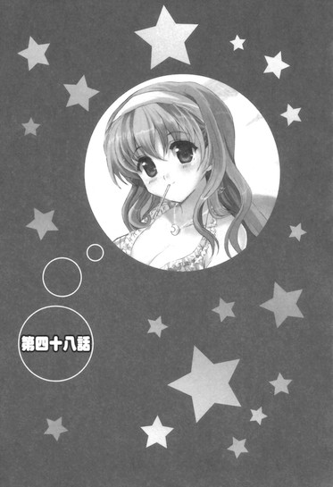
０
それは春香との『初めてのお泊まり』から一週間ほどが経った、ある春休みの日のことだった。
ジャーンジャージャージャーン、ジャジャジャーン♪
時刻は朝の九時。
眠りを妨げたのは、暗闇の中に鳴り響くどこぞの宇宙戦争の暗黒卿のテーマ曲だった。
「......何だ......？」
聞き慣れない音。
まだ半分くらい寝ぼけている目で部屋の中を見回してみると、ピカピカと光っていたのは枕元にある俺の携帯である。
......いやこんな着信音を入れた覚えはないんだが......
訝しく思いながら携帯を開いてみる。
するとそこにあったのは。
『びゅ～てぃふる美夏ちゃん（はあと）』
と表示されたディスプレイと、何やらＯＬっぽいスーツを着てメガネをかけた姿でポーズを決めるツインテール娘の画像だった。
「............」
......またこのパターンか。
やたらと楽しそうな美夏の笑顔を見ながらため息を吐く。
当然のごとくこんな画像を撮った覚えも設定した覚えも欠片もない。
心の底からスルーしたいところなんだが、ここでそっと携帯の電源を切ったところで状況は何も変わらない上に、最悪ウチまで押しかけてくるだろうことはこれまでのパターン──というか前回のアレでイヤというほどインプリンティング済みである。
「......ハア......」
朝っぱらから疲れた気分になりながら通話ボタンに指をかける。
「......もしもし」
またどうせ大した用事じゃないんだろうと思いきや──
『あ、おに～さん！ 大変だよ！』
「え？」
携帯から聞こえてきたのはそんな美夏の声だった。
何かに追い立てられて切羽詰まったようなリアクション。何だ、どうしたんだ？
『緊急事態なの！ 今すぐに新宿駅の九番ホームまで来て！エリちゃんが、エリちゃんが大変なんだよ！』
「エリ......」
......って、エリがいっしょにいるのか？
美夏のクラスメイトにしてどこか春香に似た雰囲気のプチぽわぽわお嬢様。
しかし大変ってのは一体どういう──
『きゃあ！ だ、だめ......！ 助けて......！』
「！」
その時受話器の向こうからそんな声が聞こえてきた。
何かに驚いたような叫び声。
その声は確かに聞き覚えのある中学生お嬢様のものであって......
エリはツインテール娘たちと違って、演技でこんなことをできるキャラじゃない。
ということは......本当に何か非常事態なのか!?
『ほらほらおに～さん！ エリちゃんのかわいい声にびくんびくんって脊髄反射してる場合じゃないよ！そうゆうわけだから、今すぐに動きやすい服装とパスモとお財布とを持って新宿まで来て！』
「わ、分かった！ 新宿だな、すぐに行く！」
そういうことなら行かないってわけにはいかない！
そう答えて通話を切って。
布団から飛び起きると取る物も取らずに家を飛び出す。
新宿なら急げばウチから三十分ほどで着くはずだ。ダッシュすればもう少し早く着くことも可能だろう。
「く、何だか分からんが間に合ってくれ......！」
そう心の中で念じながら駅までの道をひた走ったわけだが──
１
「あ、おに～さん、いらっしゃ～い♪ 待ってたよ～。でもちょ～っと遅い～。すぐ来てって言ったのに二十分もかかってる～」
「そうですよー、その間にエリちゃんが大変なことになってたらどうするつもりだったんですかー」
「おに～さん、責任取らなきゃなのぉ」
「............」
──新宿駅に到着した俺を待っていたのは、そんなのんびりとした声だった。
美夏、光、美羽。
双葉女学院中等部二年紫陽花組のいつものメンツ。
この上なく楽しそうに笑いながらにこにこまったりとこっちを見ている。
「......。......いや、エリが何か大変なんじゃなかったのか？」
まったくもって平穏無事に見えるんだが。
笑顔の三人組のその後ろには当のエリの姿。
ものすごくすまなそうな表情で「あ、あの......」とうかがうようにこっちを見上げている。
「うん、大変だったよ。エリちゃん、さっきまでそこにいた通りすがりのワンコともふもふしてて♪」
「向こうのワンコもエリのこと気に入っちゃってハウスから出てペロペロなめてきて。もうある意味惨状っていうか、幸せの悲鳴を上げてたよねー☆」
「最後まですっごく名残惜しそうだったよぉ♪」
「............」
美夏たちが笑顔でそんなことをのたまって。
「ご、ごめんなさい......まぎらわしくて......」
それを受けてエリが心の底から申し訳なさそうにがばっと頭を下げてくる。
「......」
......まあ話の流れからしてエリは悪くないだろう。
問題はおそらくこっちのツインテール娘をはじめとしたかしまし三人組たちにあるに決まっていることはもはや火を見るよりも確実である。
俺は深くため息を吐いて。
「......で、これはどういうことなんだ......？」
軽くジト目になりながらいちおう訊いてみる。
すると美夏はにまっと笑って。
「ん、いい質問だね～、さすがおに～さん♪ あのね、わたしたち、今日はこれからみんなで富士急ハイランドに遊びに行くことになってるの♪」
「富士急ハイランド......？」
って、確か富士山の近くにある有名な遊園地だよな？
「そ。ほんとはわたしたちだけで行く予定だったんだけど、春休みの一日を一人寂しく部屋の片隅でヒザを抱えて過ごしてるだろうおに～さんもいっしょに行きたいかな～と思って。優しい美夏ちゃんたちは誘ってあげたってわけ♪いちおう保護者もいた方がいいしね」
「おにーさん、どうせヒマですよねー？」
「美羽たちがかわいそうなおに～さんの相手してあげるねぇ♪」
「す、すみません、勝手に......」
「......」
......ナルホド、そういうわけか。
いやまあ......ここまでの話の流れからしてそんなことだろうとは思ったけどさ。
とはいえこっちの都合を一四五パーセント無視したツインテール娘たちの相変わらずのマイペースっぷりに微妙に釈然としない心地になっていると。
「ほらほら、こ～んなにかわいらしい美夏ちゃんたちといっしょにで～とできるのは嬉しくないの？両手にいっぱいの花束だよ？は～れむだよ♪」
「これを逃したら次に機会が回ってくるのがいつかは分かりませんよー？」
「おに～さんの最後のモテキかもしれないのぉ♪」
「......いや、だったらせめて普通に誘ってくれ」
そうすれば別にこんなことをしなくても素直に来たってのに。
相変わらずムダに手が込んでるというか小細工が好きというか......
ともあれまあ、そういう次第なら行くことは別にやぶさかじゃない。
美夏たちの言う通りなのも若干シャクだが、今日は特に何か用事が入ってたわけでもないし、遊園地とかもキライじゃなかったりする。それにこの危なっかしい中学生たちだけで遠出させるってのも気になるところだしな。
そう伝えると。
「わ、じゃあ決まり～♪ えへへ、だからおに～さんって好き（はあと）よく言うことを聞くかわいいペットみたい♪」
「おにーさんのそういうコリー犬みたいに従僕体質なところ、ポイント高いと思いますよー☆」
「将来どこにも就職できなくて無職になったらぁ、美羽の専属執事にしてあげるねぇ♪」
「あ、ありがとうございます。おにーさんとごいっしょすることができて、嬉しいです......♪」
「......」
......何だかエリ以外は褒めてるんだかけなしてるんだか果てしなく微妙に思えるのは気のせいだろうか。いやまあいつものことなんだが。
ともかくそんなわけで。
そういう過程を経て、ツインテール娘たちといっしょに富士急ハイランドへと行くことになったのだった。
２
富士急ハイランドは新宿から電車で一時間半ほどの距離だった。
途中の大月駅で特急からローカル線に一度乗り継ぎ。
そのまま三十分ほど車上で揺られればもうそこはほとんど目的地のすぐ近くである。
「わ～、着いた着いた～♪」
「意外に近かったねー☆」
「美羽っち・いん・富士急はいらんどなのぉ♪」
「わあ......ここがふじきゅうはいらんど......」
美夏たちがそれぞれ思い思いの声を上げる。
富士急ハイランドは割とオーソドックスな感じの遊園地のようだった。
入り口は『富士急ハイランド』駅から降りてすぐのところにあるゲートらしいところ。
そこで入場券を買って中に入るらしい。
「ワンデーパスでいいよね？ どうせ今日は一日中とことん骨の髄まで遊び尽くすつもりだし♪」
「ああ、大丈夫だ」
美夏のそんな言葉を受けて、一日アトラクション乗り放題であるワンデーパスを五人分買って敷地内へと入る。
中に入っての印象は、ジェットコースターやら観覧車やらお化け屋敷やら、普通の遊園地にあるアトラクションは一通り揃っている感じだった。
敷地はどちらかというと広めで、各所に見えるなんかやたらと激しい動きをしている乗り物の様子が印象的である。
「よ～し、遊ぶぞ～♪ さ、何からのろっか？おに～さん、なんかリクエストとかある？」
「ん？ いや、俺は特には」
というかリクエストも何も、ほとんどここについて知らないんだよな。
来るのはこれが初めてだし情報としても富士山の近くにあるってことを知っているくらいである。
すると美夏はぴっと人差し指を立てて。
「そっか～。んじゃ今日のところはわたしたちに任せてもらおっかな♪わたしたちも初めてだけど、いちお色々調べてきたし」
「ああ、頼んだ」
「らじゃっ♪ じゃあみんな、まず最初は何にしよっか？」
「んー、そだね、やっぱりここは何か盛り上がるのとかかなー☆」
「美羽は美羽はぁ、めりーごーらんどに乗ってフェラーリと東京スカイツリーと月の土地の権利証が似合う白馬の王子様が来るのを待ちたいのぉ♪エリちゃんはぁ？」
「私？ あ、えと、私は......」
きゃっきゃっと黄色い声を上げながら相談し合う。
およそ五分ほど論議をして美夏たちが選んだアトラクションは──
「............」
目の前にそびえる入り組んだ巨大な鉄骨。
轟音とともに聞こえてくるたくさんの悲鳴。
そこにあったのは......いくつか大きめのアトラクションがあるこの富士急ハイランドの中でも一際目立つ代物で、巨大な威容を誇るジェットコースターだった。
「......あー、いきなり、これに乗るのか......？」
思わずそんな言葉が出る。
見るからに初っぱなにチャレンジするのにはハードコアすぎる選択だと思うんだが。
その言葉に美夏もちょっとばかり複雑そうな顔になって。
「え、あ、う、うん。わたしも最初にこれはちょっとどうかと思ったんだけど......」
「？ じゃあどうして......」
「そ、それはさ～......」
「？」
ちらりと後ろを見る。
そこで何やらきらきらと目を輝かせていたのは──
「わあ......やっぱりスピード系のコースターはかっこいいですよね......♪」
エリだった。
胸の前で嬉しそうに手を合わせて、普段の落ち着いたたたずまいからは離れた活き活きとした表情で真っ直ぐに目の前にそびえるコースターを見つめている。
「『富士山』に由来する名前を冠されて、さらには『KING OF COASTERS』の異名も誇るスーパーコースター......。凛々しくて雄々しくてとっても素敵です♪おにーさんもそう思いますよね！」
「え、あ、ああ、そうだな......」
その勢いに思わずそう答えてしまう。
むう、このおっとりお嬢様、こういった絶叫系が好きなのか。見た目はまったくもって正反対な雰囲気なのに......
ともあれそういう流れで、最初のアトラクションはこのジェットコースターになった。
正式名称『FUJIYMA』。
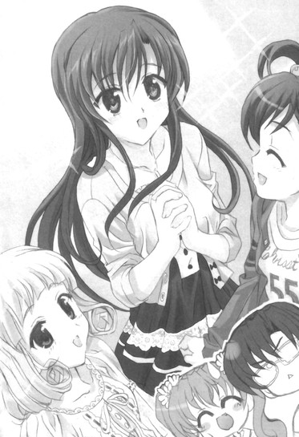
見るからにバイオレンスそうなそのコースターは、二人乗りのライド方式になっている。並び順は「エリ」「美夏・俺」「光・美羽」の組み合わせ。ちなみにエリが一人なのは人数が偶数でなかったってのもあるが、それ以上に最も臨場感のある一番先頭に乗るのをエリ以外の全員が即座に拒否したからだったりする。
「うふふ......この瞬間がたまらないですよね......♪（わくわく）」
ガタン......ガタン......
弾むようなエリの声と、そんな地獄へのカウントダウンのような不穏な音とももにライドが頂点へと昇っていく。
うう、なかなかに緊張するな......
絶叫系は別に苦手ってわけじゃないが、これはある意味別格である。何せ頂上の高さが七九メートルでかつてギネス認定までされてたらしいし......（エリ談）
そんなことを考えながら肩に触れるセーフティーバーの締め付けを確かめていると。
......きゅっ......
「お？」
と、隣から弱々しくそんな力が加えられた。
見てみると......明後日の方向に目をやりながら俺の服の袖を小さく握りしめるツインテール娘の姿。
「美夏......？」
「ん、な、なにかな～......？」
「......」
「こ、これは、別にあれだよ？ こうゆう絶叫系が怖いとかじゃなくて、た、ただおに～さんが心細いだろうから、やさしい美夏ちゃんがこうして守っててあげなきゃかな～と思って......」
「......」
ナルホド、怖いのか......
しかしエリに引き続きこれまた意外だな。このツインテール娘、割とこういうのは大丈夫そうなイメージなのに。
「な、な～に、おに～さん、その目......」
「ん、いや......」
普段は怖いものナシなボスネコがブルブルと震えながらケージに入れられて予防接種に連れて行かれるのを見た時のような気分で隣のツインテール娘を見ていると。
ガタンッ！
「うお？」
そんな音が足下に響いた。
続いて衝撃とともにライドが勢いよく落下し始める。
「にゃ、にゃああああああっ!! い、いやあああああああ!!!」
つんざくように上がる悲鳴。
掴まれた手にほとんど握りつぶさんばかりに力が込められる。
「いやあああぁあああ!!!お、落ちちゃう落ちちゃう落ちちゃう～!!!」
「こ、これ、けっこうすごいかもー！」
「み、美羽、このお腹にふわっとくるの苦手ぇ！」
美夏の絶叫に光と美羽の割と阿鼻叫喚な感じの叫び声も加わって。
そんな中。
「きゃ～♪ す、すごいです......！ この風圧にこの浮遊感......！やっぱり急角度からの落下はたまらないですよね......♪」
先頭で両手を上げたエリだけが、一人この上なく楽しそうにそんな声を上げていた。
どうもこの富士急ハイランドは、他の遊園地と比べて絶叫系のアトラクションの数が多いようだった。
軽く数えただけでおよそ十一ほどのそれ系の乗り物。
一つの遊園地でその数はなかなか他では見られないラインナップである。
で、その内の六つまでを乗り終えて。
「わあ......楽しかったですね♪ どれもとってもえきさいてぃんぐで......。さ、次は『ええじゃないか』に乗って、その次は『ドドンパ』に行きましょう♪」
エリがそんな元気はつらつとした声を上げていた。
何だか入園時よりもお肌がコラーゲン三倍増しくらいの輝きでつやつやしている感じである。
「......元気だな......」
「......エリ、ほんっとこういうの好きだよね......」
「......美羽、もうふにゃふにゃなのぉ......」
普段はどちらかといえば明らかに行動派な光＆美羽たちもその勢いに少しばかり疲れ気味のようである。
中でも。
「は、はう～、お腹の中がふわふわするよ......」
ちんまいツインテール娘が疲労困憊みたいだった。
疲れ切ったというかほとんど生きていくためのエネルギーを大半使い切ったような顔で、心なしか両脇のツインテールの角度も下がり気味な感じがする。
「......あー、さすがに少し休むか？」
これはどう見てもかなりいっぱいいっぱいだろう。
どこかで少し休憩してから仕切り直した方がいいはずだ。
なのでそう提案したところ。
「あ、い、い～よい～よ。わたしのことは気にしないで。ぜんっぜんだいじょぶだから、がんがん行こ～！まだまだ回ってないアトラクションはたくさんあるし～」
「でもな......」
「ほんと気にしないでって～。あ、なんならわたしはここでちょこっとお茶でも飲みながらのんびりしてるからさ。エリちゃんたちは楽しんできなって♪」
にこっと笑いながらそんなことを言ってくる。
うーむ、こういうところは意外と周りに気を遣うんだよな、このツインテール娘。
何だかんだで姉妹だけあって春香に似ているというか。まあだからこそなおさら放っておけない部分があるんだが。
「あー、いいから大人しく休んどけって」
「え、で、でも......」
「というかちょうど俺も少し休憩したいところだったんだ。だからよければ付き合ってくれないか？──悪いけどエリたちは先に行っててくれ。俺と美夏はちょっと休憩したらすぐに合流するからさ」
「あ......」
美夏が目をぱちぱちとさせる。
それを見たエリが。
「......あ、ご、ごめんなさい！ あんまり楽しくて一人でつい調子に乗ってしまって......。え、えと、私も残ります！美夏とおにーさんだけそんな......」
そうぎゅっと両手を握りながら主張するが。
「まあまあエリ、おにーさんがせっかくおにーさんがああ言ってくれてるんだから、私たちはお言葉に甘えとこーよ☆」
「え......？」
「そうだよぉ、美羽、まだまだたくさん乗りたい乗り物があるのぉ♪」
「あ......」
光と美羽が催促するようにエリの腕を引っ張る。
「そういうことだから、じゃ、まったねー、美夏、おにーさん☆」
「し～ゆ～れいた～、なのぉ♪」
「あ、え、えと、す、すみません......」
そう手を振りながら言って、三人は行ってしまった。
「......」
結果としてその場に残ったのは美夏と俺の二人だけになる。
「......ごめんね、おに～さん」
「ん？」
「せっかくの遊園地なのに、こんなことに付き合わせて......」
「気にするなって。それより何か冷たいものでも飲むか？」
「あ、うん」
「分かった」
少ししょんぼり気味な美夏の頭にポンポンと手を乗せて、近くの店からウーロン茶とついでにクレープも買ってくる。
「ほら、お茶。よければこっちのクレープもどうだ？」
「わ、ありがと、おに～さん。ちょうどお腹も空いてたところだったんだ♪」
嬉しそうに声を上げて買ってきたチョコバナナクレープにちょこんと口をつける。
そのままもむもむと食いしんぼうのハムスターみたいにほおばって。
「ん～、甘くておいしい♪ バナナもたっぷり入ってるし♪」
「そうか」
「うん、ボリュームまんてんって感じ♪」
明るく弾んだ声。
どうやら少しだけ元気を取り戻したみたいだな。
「あ、おに～さんも食べる？ わたしだけで食べるには少し多いし」
「お、いいのか？」
個人的にはそこまで大した量じゃないと思うんだが、そこはやはりちんまいながらに女子ってことだろうか。
ちょうど腹も減っていたところなので、遠慮なく残りの半分にかぶりつくことにする。
「ん、ウマいな。甘さもちょうどいい感じだ」
「あ──」
「ん？」
と、そこで美夏が小さく声を上げるのが聞こえた。
どうかしたのか？
何やらこっちの口元を見ながら少しだけ頬を赤くしている美夏の顔に視線をやる。
するとツインテール娘は慌てたようにぶんぶんと頭を振って。
「あ、ん、ん～ん、何でもないっ。──え、えと、そ、それよりさ、そういえば最近はお姉ちゃんとうまくやってるみたいじゃん」
「え？」
「お、お姉ちゃんとだよ！ ちゃんと連絡もしてるみたいだし」
「ん、ああ。おかげさまでな」
件のデートを通して、色々と何が大切かってことに気付かされた。
今はさすがに毎日とまではいかないまでも、できる限りこまめに連絡だけは取るように心がけてたりする。
「へ～、えらいえらい。うんうん、おに～さんも成長したね。色々とレクチャーしてきたわたしとしても鼻が高いよ♪」
「まあ、成長というか......」
「でもそっか。そなんだ、順調にいって......」
そこで美夏は何かを考え込むように一度言葉を切った。
そのままどうしてか無言になって。
「美夏？」
「......」
「どうかしたか？ 何か気になることでもあったのか？」
「......」
「美夏......？」
「......え？ あ、ど、どしたの？」
はっと気付いたかのように顔を上げた美夏がそう訊き返してくる。
「どうしたって、それはこっちの台詞なんだが。さっきから何回も声をかけててだな......」
「あ、そ、そなの？ ご、ごめんね、えっと、ちょっと考えごとしちゃっててさ～」
「考え事......？」
「う、うん......」
少しだけためらうように口ごもって。
「──あのさ、おに～さん！」
「ん？」
「おに～さん、おに～さんは、やっぱりお姉ちゃんのこと......」
「？」
「......ん、ん～ん、何でもない。大したことじゃなから、聞かなかったことにして！」
「??」
なんかさっきからそればっかりだな。
まあ構わんのだが、何か言いたいことでもあったのかね？
３
その後も富士急ハイランドでの時間を楽しんだ。
エリたちと合流しての五人での散策。
残りの絶叫系をコンプリートしたり、ウォータースライド系のボート（？）に乗ってズブ濡れになったり、箸休め（？）にメリーゴーラウンドに乗ったり、さらには期間限定のミッションクリア系のアトラクションにチャレンジしたりもした。
美夏の様子もすっかり元通りで。
「どうおに～さん、楽しいでしょ♪ 誘ってあげた美夏ちゃんたちの足下にひざまずいて三回回ってキャイ～ンって鳴いて感謝してくれてもい～よ（はあと）」
「人生でもう二度とあるかないか分からないラッキータイムですから、しっかり堪能しておいてくださいねー☆」
「美羽っち分をた～っぷり補給してくれていいよぉ、おに～さん♪」
「あ、あの、私は、その、おにーさんとごいっしょできてそれだけでとても楽しいといいますか......」
「......」
むう、相変わらずこのかしまし中学生たち（エリ除く）はひと言多いというか。
とはいえそれは楽しい時間ではあった。
アトラクションは面白いものばかりだったし、まあ口は多少悪いが、何だかんだいってこのミニお嬢様たちはいい子ばかりだしな。
そして園内のアトラクションの大半を回り尽くして、少しずつ辺りの景色もオレンジ色に染まり始めた午後五時少し前。
俺たちは──園内でも端っこの方にある、とあるアトラクションの前にいた。
「......」
遊園地の中という開放的な立地にありながらどこか薄暗い感じのたたずまい。
周りに流れるのはもの悲しい歌声が乗せられたダウントーンな音楽であり。
目の前に建っているのは......明らかに他のアトラクションとは趣を異にする、寂れた雰囲気の廃病院だった。
「......あー、ここは？」
「ん、ここはですねー、『最恐戦慄迷宮』ですー☆」
俺の質問に光が楽しそうにそう答える。
「富士急ハイランドの目玉ともいえるアトラクションで、ウォークスルータイプのお化け屋敷としては世界最長らしいですよー☆」
「ああ......」
これは知ってるぞ。
テレビとかでよく放送される有名なお化け屋敷で、確か総歩行距離が一キロ弱で入ってから出るまでに一時間近くかかるとか何とか......
「え、えっと光、やっぱりここに入るのかな～......？」
若干口元を引きつらせた美夏がうかがうようにそう訊いてくる。
「うん、入るよ☆ 私的にはここに入るために今日ここに来たって言っても過言じゃないくらいなんだからー。......ほらほら、美夏だっておにーさんといっしょに入りたいと思ったからここまで来たんでしょ☆」
「う、そ、それはそうなんだけどさ～......」
なぜかちらっとこっちを見ながらにやにやと笑う光に、美夏が恥ずかしそうに顔をうつむかせる。？何なんだろうね？
「さ、そういうわけだから行こ行こー☆ 虎穴に入らずんば虎児を得ずだよー！」
「れっつご～ご～なのぉ♪」
「お、お化け屋敷、ですか......」
「うう、入る前から背筋がぞくぞくだよ～......」
光のかけ声に皆がそれぞれ答えて。
入り口らしきスポットへと移動する。
と、
「きゃああああっ！」「いやっ!!」「こ、来ないでったら!!」
少し離れた場所にあった扉のようなところから、そんな悲鳴とともにダッシュで走り出て来る女の人たちの姿が目に入ってきた。
だれもかれも春先になって多くなってきた露出狂から逃げる女子小学生みたいな必死の形相。
どうもあそこが出口らしいな。しかしあそこまで全力で逃げてくるような内容とは......
「う、うう～......」
それを見た美夏がますますどんより顔になる。
まあいつだったかウチの文化祭のお化け屋敷レベルでめちゃくちゃ怖がりまくってたくらいだからなあ......
それと比べたらここはまさに満月と梅干しってところだろう。気が進まないのも当然というか。
そうこうしている内に順番が回ってきて、受付へと足を踏み入れる。
まんま病院の待合室を再現したような造り。
器具や用具なども本物を使っているらしい上に、消毒液の匂いまでが辺りに漂っているのが徹底的である。
で、白衣を着たスタッフさんの説明から始まって。
レントゲン室で写真を撮ったり診察券を渡されたり。
そして最終的な設定説明（廃病院となった由来とか）をビデオで説明を受けて。
いよいよ......アトラクションの内部に入っていくってところで。
「じゃあ私たちは三人で行くから、美夏とおにーさんは二人で後から来てねー☆」
「え？」
「ひ、光......？」
待合室から出ようとした光がにこっと笑いながらそんなことを言い出した。
「ほら、やっぱりこういうお化け屋敷系のやつは少人数でいった方が面白いでしょー？五人だったら二対三。で、おにーさんは男の子だから少ない方ってことで。じゃあまた出口でねー☆」
「お......」
「あ......」
そう言って光、美羽、エリの三人は先に行ってしまった。
残された美夏が不安そうにこっちを見上げてくる。
「お、おに～さん......？」
「あー、まあ何とかなるだろ」
もともとここは二、三人くらいの少数で回った方が面白いってのは本当みたいだし。
美夏を安心させるべく軽い感じでそう答えて。
そんな感じで、美夏と二人で『最恐戦慄迷宮』に臨むことになった。
「......」
アトラクション内部は受付以上にこの上なく本格的な造りになっていた。
薄暗くヒンヤリとしていて辺りには消毒液の匂いが充満していて......
まるで本物の廃病院に迷い込んでしまったかのような錯覚に陥らせられる。
さすがに元は宿泊施設として本当に使われていた建物を再利用してるらしいだけあって、臨場感たっぷりなことこの上ないな......
「うう～......真っ暗だよ～......病院の匂いがするよ～......なんか怪しい器具が置いてあるよ～......」
隣では美夏が天敵のカラスを前にした仔猫みたいな声を上げている。
まあ気持ちは分かるというかもっともな反応なんだが......
「お、おに～さん、ちゃ、ちゃんと傍にいる......？こ、こっち、見てくれてる......？......は、離さないで......ね？」
涙目でぎゅっと腕を握りながらこっちを見上げてくる。
うーむ、なんかこのツインテール娘がこうもしおらしいと少し不思議な感じがするな。何だか春香といっしょに歩いているような気分になってくるというか。顔は姉妹だけあってさすがに春香によく似てるわけだし......
思わね反応に少しばかり胸の奥がドクリと動くのをそこはかとなく感じていると。
バッ！
「うおおおおおぉおおおぉおおお!!」
「！」
ふいにそんな不気味な声とともに、物陰から白っぽい何かが飛び出してきた。
包帯を巻いたような顔が溶けたようなホラー顔。
ボロボロになった布のようなものをまとったそれは、まがうことなき幽霊さんだった。
「うおおっ!?」
思わずそんな魚類みたいな声が口から出る。
「うううおおおおぉおうおうおおおおおおお!!」
幽霊さんはひとしきり俺たちの周りで奇声を発しながら動き回ると、暗がりへと走り去っていった。
「ビ、ビックリした......」
そういえばここは機械じゃなくて、主に人が幽霊役をやって脅かしてくるんだっけか。
さすがに生の動きは迫力が違うというか......
「今のはけっこうすごかったな......。美夏も驚いたんじゃないのか？」
「......」
「美夏......？」
「............」
返事がない。
むう、どうしたんだ......と見てみると、隣ではそのツインテール娘が放心状態になっていた。
表情が完全に真っ白になっていて、口から半分くらい魂が抜けかけている。
「だ、大丈夫か......？」
「あ、あうあうあう......」
返事なんだかうわごとなんだかよく分からない声。
そんな色んな意味でギリギリな状態ながらも平気だと言いたいのか、必死に手でグーサインを作っている。
......うーむ、ちっとも大丈夫には見えんのだが。
そこはかとなく不安になる俺に。
「うう......し、心配しないで、ほ、ほんとにだいじょぶだから......。そ、それは確かにちょ～っとだけ怖いとは思うけど、おに～さんが近くにいてくれるし手を握ってくれてるし......」
「......」
「......そ、それより、おに～さんはどう、かな......？」
「え？」
「や、やっぱり怖いと思ってる？ 胸がなんか変な感じ？そ、その、どきどきしたりとか......？」
「ん？ そりゃあまあ......」
とはいえ隣のツインテール娘が大丈夫なのかの方にドキドキな気もするが。
その答えに美夏はまだ少し顔を蒼くしながらもうんうんと小さくうなずいて。
「そ、そっか。う、うん、ならい～んだ......」
「？」
「じゃ、じゃあ、行こう。まだまだ先は長いもんね......」
弱々しい声でそう返してくる。
むう、ホントに大丈夫なのか......？
さて『最恐戦慄迷宮』とやらは、世界最長を謳い文句にしているだけあってさすがに長かった。
歩いても歩いてもなかなか出口に辿り着かない感じ。
途中で中二階へと続く階段やら手術室や患者用のベッド室やらを（美夏の大絶叫ともに）乗り越えて、何とか先へと進んでいく。
「あ、あと少し......き、きっと次の部屋をぬければ出口が待ってる......な、なむあみだぶつ、なむあみだぶつ......て、てんにましますわれらがかみよ......」
「......」
隣から聞こえてくるのはそんなどこの宗派だかよく分からん混ぜこぜな祈りの言葉。
道行きには何ヶ所か『リタイアポイント』なるものがあったが、ツインテール娘は頑としてそれを利用しようとしなかった。うーむ、がんばるなあ......
そしてルートも後半に差しかかった眼前に長く伸びる廊下。
「え、えと、おに～さん......あれ、何かな～......？」
「......」
もうほとんど腰砕け状態な美夏が指さした先。
そこには暗闇の中......パイプ椅子に腰掛ける顔色の悪いお一人様がいた。
「............」
いやあれ明らかに亡霊さんだよな......？
もはや見るからにそれ以外の何物でもない。実は途中で気分が悪くなって休んでる他のお客さんとかだったりしたら逆に怖いし。
美夏もそのことは十分に分かっているらしく顔をさらに蒼くして。
「......あ、あそこ......通るんだよ......ね......？」
「まあ、たぶん......」
他にルートも見当たらないわけだし案内の矢印もあっちを向いてるわけだしそれしかないだろう。
しかしとことん人を怖がらせるツボを押さえてるな、ここは。これまでもたいがい見事なもんだったが、あれは中でも格別である。
「......行く、か」
「............。......う、うん」
覚悟を決めて二人並んで一歩を踏み出す。
恐る恐るといった感じの歩み。
うつむき加減の亡霊さん（推定）の姿が近づいてきて。
実はフェイクで動かないのかと思いきや──
「うぼあああああっああああ！」
「!!」
「!! !?」
やっぱり動きやがった。
そのまま何事もなく通り過ぎられるか通り過ぎられないかっていう絶妙なタイミングで立ち上がると、ボロボロの髪を振り乱しながらこっちに向かって奇声を発しつつ追いかけてくる。
「!!」
「!!!???」
「うぼおおおああああっあああああああああああ!!」
それはもう俺から見てもかなりの恐怖レベルであって......
「......う、うええええええん......！」
......それまでのガマンが頂点に達したんだろうね。
亡霊さんの演技のあまりの白熱っぷりに......とうとう美夏はその場にへたりこんで泣き出してしまった。
「も、もういやあ......お、お化けばっかりで、も、もういいよぉ～......う......ひ、ひっく......ぐ、ぐす......」
「あ、あー、美夏......」
「う......ううっ、ひっく......やだやだやだぁ......！」
「むう......」
何とか落ち着けようとなだめてみるものの、まったくもって効果がない。
スタングレネードを正面から喰らった民間人のごとくその場にしゃがみこんでいやいやとツインテールを左右に振るばかりである。
このままだとまったくもって先に進めそうにないな。
「............」
......うーむ、こうなったら仕方ないか。
いまいちやることがためらわれるが緊急回避手段ってやつだ。
俺はそっと美夏の肩に手をやって。
「──美夏」
「い、いや......こ、来ないで......う、ひっく......メ、メガネをかけた青白い顔のお化けとかいらないよぉ......」
「美夏、大丈夫だ」
そう声をかけると。
ぎゅっ......
できるだけ安心させるように、小さく震えるちんまい身体をゆっくりと抱きしめた。
「え──」
美夏の身体が一瞬だけびくん！と大きく反応した後に、電池が切れたかのようにふいに動きがぴたりと止まる。
それからゆっくりとこっちを見上げて。
「え......お、おに～......さん......？」
「ああ、そうだぞ。落ち着いたか？」
「あ、う、うん......」
暗闇の中、目をシロクロとさせながらこっくりとうなずき返してくる。
「お、落ち着いた......て、てゆうか......」
「ん？」
「ぎゃ、逆に......ちょっとだけ胸がどきどきしちゃったかもだけど......」
「？」
「あ、う、ううん、何でもない！」
「??」
なんかよく分からんな。
「とりあえず歩けるか？ 腰抜かしたりはしてないよな？」
「あ、う、うん、平気。お姉ちゃんじゃないんだから～......って、あれ？」
「......」
「あ、あれ......？」
立ち上がろうとするものの、すとん、とその場に座り込んでしまって立ち上がれない。
何度繰り返しても同じようである。
どうもホントに腰を抜かしたらしいな。
「あ、え、えと、こ、これはさ～、なんてゆうか、ちょっと足がすべっちゃっただけで......」
「............」
「だ、だいじょうぶ。少し待ってくれればすぐに立てるから～......」
そんなことを言いながら何とか自力で立とうとする。
やれやれ、こんな時にまで強がらんでもいいってのに。まあツインテール娘らしいっちゃらしいんだが。
俺は心の中で苦笑して。
「──いいから、無理するなって」
「あっ......」
まだぺたりと座り込んだままの美夏を背中に乗せた。
「お、おに～さん!?」
「ほら、こうすれば進めるだろ。いつまでもここで止まってるわけにもいかんし」
「あ、う、うん......」
遠慮がちな返事。
そのまま美夏のちんまい身体をおんぶして暗闇の中を進んでいく。
「......」
「......」
何となくどちらとも無言。
薄暗い照明の中を二人分のシルエットを壁に映しながら歩いていって。
と、そこで後ろからぽつりと、
「おに～さんの背中......おっきくて、あったかいね......」
「ん？」
「おっきくてあったかくて頼りがいがあって、すっごく安心できるよ......」
そんなことをつぶやきながらぎゅっと首に回した腕に力をこめてくる。
その様子はいつものツインテール娘とはどこか違う素直に甘えるようなものであって。
何だか胸の奥がムズムズするというか変な気分だな......
俺はゴホンと咳払いをして。
「あー、ほら、行くか。たぶんもうすぐで出口だ」
「うん......おに～さんにお任せするね......」
そんな大人しい声を受けて。
それから五分ほどして、ようやく出口へと辿り着いたのだった。
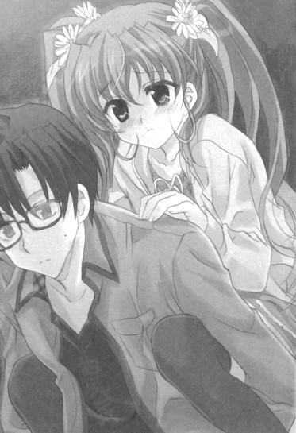
「......恥ずかしいところ見せて、ごめんね、おに～さん」
「え？」
『最恐戦慄迷宮』の建物から出て。
目の下を少しだけ赤くした美夏がおずおずとそう言ってきた。
「な、なんか子供みたいに取り乱して......。しかも、その、泣いちゃうなんて思わなかった。じ、自分でも予想外ってゆうか......」
「あー、いや......」
まあ言う通り正直泣かれるとは思わなかったが、あの亡霊さんたちの訓練されっぷりじゃしょうがないっちゃしょうがないだろう。俺だって美夏の手前では面に出すことはできなかったが、実のところけっこうビビってたわけだし......
そのことを伝えると。
「......あいかわらず、やさし～んだ、おに～さんは」
「え？」
「おんぶまでさせちゃってすっごく迷惑かけちゃったのに、そんなことゆってくれて......。気遣いがとっても自然ってゆうか肩肘張らない感じってゆうかさ......」
むう、そうなんじゃないってのにな。
それにそもそも迷惑だなんて思ってない。
何だかんだいってこのツインテール娘のことは好意的に思っているというか......や、そんなことはこっ恥ずかしいから口にはできんのだけどさ。
「............」
いやしかし美夏は何だって富士急ハイランドを選んだんだろうね。
ふとそんなことが頭に浮かんだ。
絶叫系とお化け屋敷系がほぼ八割を占めるこの遊園地はツインテール娘にとってほとんど鬼門に等しい。
エリの嗜好とかを考えたにしてももっと他に選択肢があっただろうに......
すると美夏はぽつりと小さな声で。
「......だって、こうゆうお化け屋敷とかジェットコースターとかでどきどきすると、男の子はそれを相手といっしょにいることのどきどきと勘違いするかもしれないって、那波さんから聞いたんだもん......」
「？」
「──っ！ な、何でもないっ！」
「??」
いや別によく聞こえてなかったからそこまで否定せんでも大丈夫なんだが......
だが美夏はさらに必死になって。
「い、いいからおに～さんは気にしないっ！ 大したことじゃないから！そ、それより、光たちはどこかな？は、早く合流しよ～よ！」
「え、ん、そうだな」
その声に促されて辺りを見回す。
だがそこにいるだけで目立ちまくるはずのお嬢様中学生三人たちの姿がどこにも見当たらない。
俺たちよりも先に出て来てるはずなんだが......
と、
「あれ、光たちからメールが来てる。何だろ......って！」
「？」
「......。......ひ、光たちってば......」
何やら言葉を失うツインテール娘を後ろから覗き込む。
美夏が手にしていたピンク色のかわいらしい携帯のディスプレイ。
そこには......『おにーさんとの最恐戦慄迷宮はどうだったー？私たちは先に帰ってるから、美夏はおにーさんと二人でしっぽりと楽しんでくればいいと思うよー。ごゆっくりねー☆』の文字があった。
４
「......」
「......」
「......え、えと、ど～しようか、おに～さん......？」
携帯を手にしたままの美夏がこっちを見上げてくる。
「光たち......先に帰っちゃったみたい......。どうする......？わたしたちだけでもしょうがないし......帰、る......？」
うかがうような言葉。
口ではこう言っているが、実際のところもう少し見て回りたいんだろう。さっきのお化け屋敷での負い目があるからいつものようにマイペースに主張できないだけで。
なので。
「いやせっかくだからもう少し回ってみないか？閉園までもけっこう時間があるみたいだし、まだ行ってないアトラクションもあるだろ」
ここまでは主に絶叫系とホラー系しか回ってないからな。他にもそれ以外の大人しめなアトラクションがいくつかあったはずだ。
その言葉に美夏はぱあっと表情を明るくして。
「あ──う、うん、そだね！ どうせなら全部コンプリートだよ♪」
本当に嬉しそうにそう声を返してきた。
というわけで美夏と二人でもう少しだけ回ってみることになった。
『最恐戦慄迷宮』に入っている間に日も落ちてすっかり暗くなった富士急ハイランド。
あちこちでイルミネーションが点灯されて雰囲気が変わった園内を並んで歩いていく。
「あ、おに～さん、あそこ、ソリ滑りができるんだって。涼しそ～♪」
「お、ホントだ。雪がある」
「人工雪かな～、あ、でもこの時期なら本物かも。......あ、見て、あっちにはセグウェイがあるよ♪乗れるんだって」
「なんか懐かしいな......」
ツインテール娘と二人でのアトラクション巡り。
特に地図を見たりせずに、適当に歩き回って目に付いた面白そうなものに駆け寄ってみる。
それはある意味行き当たりばったりで賑やかなこと極まりないけれど、その分だけ楽しく心躍る時間であり。
そして。
「は～、回った回った～♪」
一時間ほどあちこちを見て回って。
満足顔の美夏が大きく伸びをしながら楽しそうにそう口にした。
「あ～、もうすっごい面白かった～♪ このままず～っとここで遊んでたいくらいだよ♪」
「ん、そうだな」
確かにそんな気分だった。
本当に一時間があっという間に感じられたというか......
とはいえそろそろ切り上げ時だろう。
閉園時間まではまだ少しあるとはいえさすがに最後までいたら帰宅時間が遅くなりすぎてしまう。適当なところで切り上げんと玄冬さんとかに何をされるか分からんし。
「そだね......残念だけどそろそろタイムリミットかな～」
美夏も少しだけ声のテンションを落としながらそう口にする。
「あ、でもさ、ね、おに～さん......最後に、あれ、乗らないかな？」
「ん？」
顔を上げた美夏が指さしていたもの。
それは園内のほぼ中央付近にある、観覧車だった。
「ほ、ほら、やっぱりラストに観覧車は定番だと思うしさ。それに今なら夜景とかが見えてきれいだと思うんだ。どうかな？」
「ん、いいんじゃないか？」
まだそれくらいの時間はあると思うし、確かに最後の締めとしてはピッタリだろう。
「わ、やった！ さすがおに～さん。じゃあ行こ行こ～♪」
嬉しそうに声を上げる美夏に手を引っ張られて。
ライトアップされてキラキラと光る観覧車へと向かう。
観覧車はそこそこに並んでいたが、さほど待つこともなく五分ほどで乗ることができた。
普通の観覧車とボディ全体が透明なガラスになっているものとで選べたので、透明の方に乗ることにする。
「わ～、きれ～♪」
美夏がぴったりと窓に張り付いてそんな声を上げる。
「思ったよりずっと高くてすっごいいい眺めだよ～。それに透明だから真下までばっちり見えるし～♪」
「ん、ホントにそうだな」
ツインテール娘の言葉通り、観覧車から見える夜景は思った以上のものだった。
目に入ってくるのは園内の全景とそれを囲むように立つ山々。
ここに着くなり最初に乗った『FUJIYAMA』やらのコースターもライトアップされていて、ちょっとした光のアートみたいになっている。
ふむ、想像以上に見応えがあるな......
夜景のスポット単体としても十分に満足できるというか。
そんな感じに三六〇度広がるパノラマな夜景に目を奪われていると。
「──おに～さん、今日はありがとね」
「え？」
と、美夏が真っ直ぐにこっちを見上げながらふとそんなことを言ってきた。
「今日のお誘い。お休みでのんびりしてたかったと思うのにわざわざ来てくれて、すっごくうれしかったよ。おに～さんといっしょにいると楽しくてどこかほっとできて......。ほんとに、ずっといっしょにいたいって思うくらい......」
「え、いや......」
なんかやたらと神妙な感じの言葉。
むう......お化け屋敷の中といい今といい、このツインテール娘がこんなに改まった態度だと何だか調子が狂うんだが......
ふいに向けられた殊勝リアクションにどう言葉を返していいか分からずに戸惑っていると。
「おに～さん」
「？」
「──はい、これ」
「え？」
こっちを見つめたままの美夏がきゅっと手を握りながら何かを渡してきた。
それは何やらかわいらくデコレートされた封筒に入れられたチケットのようなものだった。
「これは......」
表には『（はあと）誕生日パーティー招待状（はあと）』と書かれている。
「え、えっとね......それはわたしの誕生日パーティーの招待状なの。来週やることになってて......。......おに～さんに、来てほしいなって」
「誕生日......」
そういえばこのツインテール娘、確か来月の五日が誕生日だったっけか。
四月五日の四、五続きだったから印象に残って覚えてたんだよな。
「今日来てもらったのも......実は、これが半分くらい理由なんだ。送ってもよかったんだけど、やっぱりおに～さんには直接手渡したくて......。え、えと......おに～さん、来て......くれるかな......？」
「......」
そうだったのか。
道理であんな風に唐突というかマイペースで強引な誘いだった......のはまあいつものことのような気もするが、それでもそうまでして直接招待状を渡そうとしてくれたのは嬉しいことには違いない。気持ちが直接伝わってくるというか。
俺は美夏のツインテールの上に手を置いて。
「ありがとな、美夏」
「え......」
「誕生日パーティー。わざわざ誘ってくれて。ぜひ参加させてもらうな」
「あ──」
その返答にツインテール娘は驚いたように一度目をぱちぱちとさせて。
そしてすぐに真夏の太陽の下に向日葵が咲くような顔でこう答えたのだった。
「う、うんっ！ もちろん大歓迎だよ！ すっごく楽しみにして、首を洗って待ってるからっ♪」
「......」
......それを言うなら首を長くしてだと思うんだが。
まあ途中で色々あったが。
こうして最後は誕生日パーティー招待で締められて、ツインテール娘たちとの富士急ハイランド紀行は終了したのだった。
＋ ＋ ＋
なんだか、胸の奥がヘンな感じだった。
おに～さんが抱きしめておんぶしてくれた時。
まるでお気に入りのバスボムでゆっくり二時間くらいお風呂に入った後みたいに......顔がか～っと熱くなって胸の奥がどきどきして、自分じゃどうしようもなくなった。
「......」
なんなんだろ、これ......
分かんない。
こんな風になったことは今までなかった。
だけどおに～さんとクレープを食べた時もおんなじ感じだった。
おに～さんが、何の躊躇もなくわたしの食べかけに口を付けたのを見た時になんか急に恥ずかしくなって......
「......」
それに......それだけじゃないんだよ。
初めてのお泊まりの帰りにお姉ちゃんがおに～さんとこれまでよりも仲良さそうに笑い合ってるのを見た時。
その時も......胸の中がなんか今までにないざわざわした感じになった。
今のどきどきとは違うざわめくような感覚だったけど、今まで感じたことのないおかしい気持ちになったことには変わりはなくて......
「............」
も、もう、ほんとになんなんだろ？
わたし、どうにかなっちゃったのかな？ なんかの病気とかなのかな......？
ちょっとだけ不安になる。
那波さんなら何か知ってるかな？訊いてみようかな......
「......」
そう考えて......やっぱり、やめた。
もちろんヘンに心配をかけたくないってのもあるんだけど。
だけどそれ以上に......何だか、この感情は自分だけのものにした方がいいように感じられた。
理由とかはない。
ほんとにただ何となくそう感じただけで......
だって何だか......この気持ちは、とっても大切なもののような気がしたから。
第四十九話
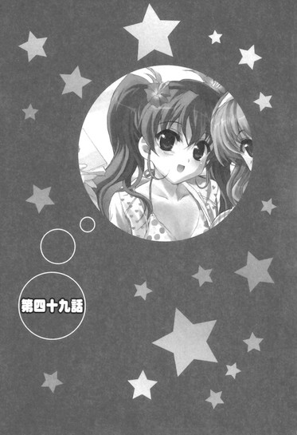
０
『──それではこれより、第十五回乃木坂美夏様お誕生日おめでとうパーティーを執り行いたいと思います～。皆様、お手にグラスを持っていただけますか～？』
教室軽く十個分ほどの広さの大広間に、そんなにっこりメイドさんのマイクを通した声が響き渡った。
『はい、皆様、準備はよろしいですね～？それではご唱和お願いいたします～。改めまして──美夏様、十五歳のお誕生日おめでとうございます～♪』
「「「おめでとうございます！」」」
周囲から上がる盛大なお祝いの声とともに一斉にグラスが打ち鳴らされる。
透明なガラス音の大合唱。
それを受けて広間最前の壇上にいるドレス姿のツインテール娘が少しだけ「あ、ありがと～♪」と照れくさそうに笑みを浮かべる。
「え、ええと、みんな、今日はわたしの誕生日パーティーに集まってくれてどうもありがと～♪すっごく嬉しいってゆうか何てゆうか......。今日は無礼講でＮＧはなしだから、骨の髄までとことん楽しんでいってね～♪」
それは美夏らしい明るい挨拶であって。
『美夏様、ありがとうございます～♪ ではではこれよりプレゼント贈呈タイムまでは基本的にフリータイムとなります。お食事などもたっぷりご用意いたしましたので、今しばらくの間は皆様でご歓談をお楽しみくださいませ～♪』
那波さんのそんな声とともに、辺りは楽しげな喧騒とざわめきとで包まれる。
和やかで砕けた雰囲気。
──現在俺たちがいるのは伊豆の伊東にある乃木坂邸第三十九別邸である。
市街の中心地からは少し離れた山の上に建つ巨大な城のような屋敷。
辺りの風景から明らかに浮きまくっているそれは、何でも美夏が生まれた時にその記念に辺りの土地とともに買い取ったものであり、地元の人たちの間ではハッピーサマーマウンテンと呼ばれてるとか何とか。春香の時のハッピースプリング島といいホントに親バカの極みだな、玄冬さん......
でまあそんなハッピーサマーマウンテンで、先日招待されたツインテール娘の誕生日パーティーが開かれているわけだった。
「おめでとー、美夏ー☆」
「とってもはっぴ～なのぉ♪」
「おめでとうございます、美夏♪」
周りで声を上げているのは光、美羽、エリたち双葉女学院遊園地メンバー。
どこまでも明るく楽しげでこの前と同様にこの上なくノリノリな中学生テンションである。
「ほらおにーさん、おにーさんももっとおっきな声で美夏に呼びかけてあげてくださいよー☆」
「ご主人様を見つけてシッポをふってかけよっていく芝犬と同じくらい元気な感じでねぇ♪」
「え、えと、いっしょに声出しましょうか、おにーさん？」
「え、あ、ああ」
促されていっしょに大声を出す。
む、むう、相変わらず賑やかだな......
賑やかすぎて他の招待客たちの間で少しだけ目立っているというか。
ちなみに他の招待客はというと。
「美夏さま、素敵ですわ......♪」
「ええ、とっても可憐で、それでいて麗しくて......♪」
「ほれぼれしてしまいます......♪」
この上なく上品な雰囲気のたくさんのお嬢様たち（推定）だった。
光たちも含めて大半はそういった若い女子たちで、それ以外の姿はほとんど見られない。
どうも今回はプライベートなパーティーということらしくて、以前の春香の時のように半ば公的なものではなく、あくまで私的な友達関係を中心に招待されているようである。
とはいえさすがに世界に名だたる乃木坂家の次女だけありその数はゆうに百人は超えているのであって......
「......」
うーむ、ここまでお嬢様たちが一ヶ所に集結するとある意味壮観だ......
百花繚乱をさらに超えて花がそこかしこに溢れ出してフラワーボム状態になった感じというか。
その鮮やかすぎる彩りに少しばかり困惑していると。
「──どうされました、裕人さん？」
「お......」
耳に響いた柔らかな声。
そっと隣から微笑みながら声をかけてきてくれたのは......そんな可憐な花々の中でも際だって光り輝くお嬢様の中のお嬢様だった。
落ち着いた色合いのパーティードレスを身にまとった春香はにっこりと笑いかけてきて。
「すみません、いらっしゃってくださった方々にご挨拶をさせていただいていたら遅れてしまって......。わあ、美夏、素敵ですね......♪」
「ん、あ、ああ......」
その姿に少しだけ目を奪われる。
確かに美夏も素敵だが、春香も同じくらいに素敵だぞ......とはさすがに言えない。
「？ どうされましたか？」
「あ、い、いや、何でもない！」
「??」
不思議そうな顔をする春香。
と。
「......ふん、来ていたのだな、綾瀬裕人」
「あらあら、こんにちは、裕人さん」
「玄冬さん、秋穂さん」
後ろから声をかけられた。
見てみるとそこには、乃木坂家現当主とその奥方及びその傍らでそっと控える無口メイド長さんの姿があった。
「......久しぶりだな。ふん、相変わらず間の抜けた面のようだが......まあいい。今日は大切な祝いの席だ。せいぜい楽しんでいくといい」
「今日はわざわざ来てくれてありがとうございますね。美夏もきっととても喜んでいると思います。あ、もちろん私も裕人さんにお会いできて嬉しいですよ♪」
「あ、いえ......」
慌てて挨拶をし返す。
むう、何だかここのところ色々とあったせいかこの二人と顔を合わせるのもずいぶんと久しぶりな気がするな。
実際は前回の春香のコンクール優勝パーティーで会っているから三週間ぶりくらいなんだが。
二人を見ながら何となくそんなことを考えていると秋穂さんは光たちの方を向いて。
「光さんに美羽さん、エリさんも今日はありがとうございます。美夏に替わってお礼を言わせていただきますわね」
「いえいえ、美夏は大事な友達ですからー☆」
「ふるにょうぼうを質にいれてでも駆けつけるのぉ♪」
「こちらこそ、今日はご招待していただいて......」
にこやかにそんな言葉を交わす光たちと秋穂さん。
むう、この三人も秋穂さんたちと顔見知りなのか。
まあ美夏との関係性（仲良し四人組）を考えれば当然かもしれんが。
「あ、玄冬おじさんもお久しぶりでーす☆」
「相変わらずがんせきみたいな顔だねぇ♪」
「あ、ご無沙汰しております」
「ぬ、ひ、久しぶりだな」
「前にお会いしたのは秋だから半年ぶりくらいですねー。そういえば今日もサングラスは取らないんですかー？」
「お部屋の中でサングラスをかけたままにするのはちょっと頭のよわいこだって聞いたよぉ♪」
「あ、で、でも、似合っていますから......」
「む、むぐう......」
楽しげに（光たちの方だけ）そんな言葉を交わし合う。
うーむ、どこぞの企業社長だとか政治家だとかには（きっと）無敵だろう玄冬さんも、このかしまし中学生パワーにはかなり押され気味みたいだな。
「ふふー、何だか玄冬おじさん、おにーさんに似てるからからかいやすいんですよねー☆」
「うんうん、おんなじじゅうぞくぞくせいがでてるってゆうかぁ♪」
「ひ、光、美羽......！ ......で、でも、おにーさんに雰囲気が似ているというのは少しだけ分かるかもしれないです......」
口々にそんなことを言ってくる。
いやこのマフィアとヤクザとターミネーターとを足してそのままにしたみたいな玄冬さんと俺のどこが似てるっていうんだよ......
そりゃあ目が二つあって鼻が一つで口が一つだけ付いているところは似てるといえば似てるかもしれんが、それ以外ではほとんど別の生き物といっても過言じゃないだろ。隣では玄冬さんも「わ、私がこの小童と......？あ、あり得ん！」と真っ赤な顔をしてうなってるし。
だが。
「あらあら、言われてみればそうかもしれないわね。確かに若い頃のあなたにそっくりだわ、うふふ♪」
「はいです。裕人さんとお父様、頼りになって安心できるところはどことなく同じだと思います♪」
秋穂さんと春香までそんな風に言ってくる。
む、むう、だから濡れ衣（？）だってのに......
「......」
ともあれ全体的には和やかな雰囲気であり。
そんな感じに──何だかよく分からん流れとともにツインテール娘の十五歳の誕生日パーティーは幕を開けたのだった。
１
パーティーは特にプログラムらしいプログラムはなく、基本的には終始フリータイムで進んでいくようだった。
メインイベントとして定まっているのはおよそ一時間後にあるというプレゼント贈呈のみ。
それ以外は流動的で、適当なタイミングで突発的なサブイベントやら余興やらを交えながら進んでいくらしい。うーむ、こういういい意味で適当というかノリ重視なところは何となくあのツインテール娘らしい構成だな。
「食べ物は立食形式になってるのか......」
会場のあちこちには白いクロスがかけられたテーブルが並んでいて、その上には所狭しと豪華な料理やら飲み物やらが載っている。
頼めばメイドさんたちが取り集めてきてくれもするようだが、どうも基本的にはセルフサービスのようである。
とりあえず何か適当に取ってこようとして。
「あ、裕人さん。よければ何か取ってきますね♪」
と、春香がにこやかに笑いながらそう言ってきた。
「ん、あ、いや、俺が......」
「だいじょぶです♪ 一人で行ってこられますので、裕人さんはここでゆっくりとくつろいでいてくださいです♪」
「や、だけどだな......」
仮にも本日のパーティーの主役の姉にして乃木坂家長女のお嬢様オブお嬢様に料理を取ってこさせるのは気が引けるというか......
だが春香は小さく首を振って。
「あ、あの、よろしければやらせてくださいです。やりたい......んです。その、春琉菜様も、再会した運命の男の子にお料理を取り分けていて......」
「え......？」
「アニメの第六十一話のＢパートで、とっても......幸せそうでした。だから私も、そ、その、裕人さんに......た、大切な裕人さんにお料理を取り分けたくて......。......あ、わ、私、何を言って......！......そ、その、と、取ってきますっ！」
「お──」
そう口走ると少しだけ赤くなっていた顔を隠すようにして、春香はとてとてとテーブルの方へと走り去っていってしまった。
う、うーむ、かわいい......じゃなくて、今のリアクションはどう受け取ればいいんだ？
とりあえず喜んでいいところだってのは分かるんだが......
若干戸惑い気味になる俺に。
「ふーん、春香おねーさんとおにーさん、ずいぶん仲がいいんですねー☆」
「え？」
と、隣にいた光がふとそんなことを言ってきた。
「もともとクラスメイトである程度仲がいいってことは知ってましたけど、こんなに仲良しだとは思ってませんでしたー。......もしかしておにーさん、春香おねーさんのこと、好きだったりするんですかー？」
「!?」
い、いきなり何を訊いてきやがるんだ。
現状投げかけられるにはあまりに際どい質問の言葉に詰まりまくる。
......ど、どう答えるべきか？ それは確かに春香のことを、その、好きなのは事実であるがそれをこの場で言えるはずもない。とはいえ否定するのも何だか自分の気持ちにウソをつくようで気が引けるし......
答えられずにいると光は美羽とこそっと顔を寄せ合って。
「......。......これは美夏、ちょっとピンチかなー」
「う～ん、おに～さんが春香おね～さん相手にうまくいくかどうかは別としてぇ、おね～さんが相手だとさすがにきびしいかもぉ」
「だよねー？ ただでさえここのところはエリもちょーっと怪しい雰囲気だってのに......」
「？」
何を話してるんだ？
内容を聞こうと顔を近づけてみると。
「えー、何でもありませんよー。そうですねー、言ってみればおにーさんがスケコマシだって話ですー」
「そうそう、おに～さんはどんかんでにぶちんの恐竜野郎なのぉ」
「は？」
いやワケが分からんのだが。
というか何でいきなりスケコマシだのニブチンだの言われんといかんのだ......
理不尽すぎる中学生二人の反応に釈然としない気分になっていると。
「──お、お待たせしました......」
「お......」
と、そこで両手に料理がキレイに盛りつけられた皿を持った春香が戻ってきた。
こっちに向かって小さく顔を上げると。
「あ、えと、お肉とお魚とお野菜が均等になるように取り分けてきたのですが、よかったでしょうか......？」
「え、あ、ああ、大丈夫だ。サンキュ」
「は、はい♪」
懐いてきてくれる仔犬のように嬉しそうに微笑みを向けてきてくれる。
と、その様子を横から光と美羽がじ～っとこっちを見てきていることに気付いた。
「......どう思う、美羽？」
「う～ん、微妙なところだねぇ」
「おにーさんに訊いてもなんかいまいちはっきりしないし......もうこうなったら直接訊いてみるのが一番いいのかな？春香おねーさんなら答えてくれそうだし」
「だねぇ」
何やら二人でうなずき合って。
「──ね、春香おねーさん」
「？ 何ですか？」
「春香おねーさんは......おにーさんのことが好きなんですか？」
「!!」
な、何を春香に訊きやがるんだ、このかしまし中学生は！
予想斜め上の行動に焦る俺の横で。
「え、裕人さんを......です、か......？」
「はいー。どうなんですかー？」
「......」
一瞬だけ口元に指を当てて考え込むような仕草。
だがすぐににっこりと微笑んで。
「──はい、好きですよ♪」
「え！」
「裕人さんのことはとっても好きです♪優しくて頼りがいがあって温かくて......。いつでもいっしょにいたいと思います♪あ、もちろん光さんや美羽さん、エリさんたちのことも大好きですよ♪」
「......」
「......」
「......」
......そうか、春香にこの訊き方はまずかったんだったっけな。
中身の感情の変化こそあれ、『好き』という言葉自体に対する認識はまだまだクワガタにしたらコクワガタレベルもいいところである。訊いてもこういった答えしか返ってこないというか......
「......う、うーん、どう、思う？」
「......うぅん......」
二人して顔を見合う。
そしてまた何やらこそこそと話し合って。
「いまいちよく分からないけどやっぱり最終的に言えることは──」
「うん、そうだねぇ──」
「？」
にまにまと笑いながらこっちを見て。
「おにーさんがスケコマシってことですよねー☆」「おに～さんがにぶちんってことなのぉ♪」
「......」
声を揃えてそんなことを言いやがった。
......もう勝手にしてくれ......
そんな感じに勝手に何だかスケコマシ＆ニブチン認定されている内にパーティーは進んでいき。
プレゼント贈呈の時間となった。
『──それではただ今より美夏様へのプレゼント贈呈に移らせていただきたいと思います～。皆様、壇上の特別席にご注目ください～。なお混雑防止のため整理券をお配りいたしますので、お手数ですが近くにいるメイドからお受け取りくださいませ～♪』
壇上からマイクで那波さんがそう説明をする。
「......」
うーむ、やっぱりここでも整理券なんだな。
まあこの人数だから仕方ないっちゃ仕方ないんだが。春香の時のように五百番台とかにならないだろうだけまだマシともいえるか。
ともあれひとまずは整理券をもらってこなければ。
「あー、ちょっと整理券を受け取ってくるな」
「あ、はいです」
なので春香にそう言い置いて、近くにいる手近なメイドさんに声をかけるべく辺りを歩いていて。
「──裕人様～♪」
「おわっ!?」
突然背後から「ふ～♪」と首筋に息を吹きかけられた。
振り返ってみると......そこにいたのは楽しそうに笑みを浮かべるにっこりメイドさん。
「な、那波さん？」
「はい～、あなたの那波さんですよ～♪」
にこやかにぱたぱたと手を振ってくる。
......いやこの人、つい今の今まで壇上のマイク前（距離にしてここからおよそ五十メートル弱）にいなかったか？しかもまったくもってこれっぽっちも気配を感じなかったんだが......。無口メイド長さんといいちびっこメイドといい、乃木坂家メイド隊は『隠密』を基本スキルとして習得済みなのか......？
相変わらずのメイド隊面々の謎っぷりに半ば呆れた心地になる俺に。
「どうですか～、パーティーは楽しんでおられますか～？整理券をお配りにまいりましたよ～♪」
「え、あ、はい」
楽しそうに笑顔でそう言ってくる。
どうやらわざわざ整理券を渡しに来てくれたらしい。だがそれならとりあえず普通に声をかけてくれって感じである。
「はい、こちらになります～。春香様とごいっしょに番号は一四五番となりまして、ちなみにこちらの番号は最後になりますので～」
「最後？」
何だってまた？
その疑問に。
「それはですね～、順番を気にせずにごゆっくり美夏様とお話しできるようにと思いまして～。後ろを気にしなくていい最終番号にいたしました～♪」
「ああ、ナルホド......」
確かにこの人数だと一人一人の時間はかなり限られるだろう。
その点最後なら少しは気楽なはずだ。
「すみません、気を遣ってもらって......」
「いえいえ～、他ならぬ裕人様のためですから～。美夏様、今日をとっても楽しみにしておられたので、お優しくしてさしあげてくださいね～♪ではでは、またプレゼントをお渡しする時にお会いいたしましょう～♪」
そうにっこりと笑うと、にっこりメイドさんは音もなく立ち去って行った。
うーむ、相変わらず色んな意味でつかみ所のない人だな......
そんなことを考えながら春香のもとへと戻る。
「整理券、もらってきた。最後みたいだ」
「あ、そうなのですか？」
「ああ、那波さんがうまく調整してくれてな」
こっちを見上げて尋ねてくる春香にうなずき返して。
適当に雑談などをしつつ、順番が回ってくるのを待つ。
『ただ今の番号は三十番です～。三十番の整理券をお持ちの方は壇上の美夏様のもとへとお越しいただけますようお願いいたしますです～。続いて三十一番から三十九番までの整理券をお持ちの方は──』
そんなアナウンスとともにお嬢様たちが次々とプレゼントを手に壇上へと昇っていく。
その並びはキチンと整列されたもので......ふむ、どうやら今回は春香の時のサザーランドみたいなアレな勘違いセレブはいないみたいだな。まあお嬢様であんなキャラがいたらイヤなことこの上ないんだが......
そんなことを何となく考えながら壇上で美夏がプレゼントを受け取る光景を次々と目にしていき。
──それから二時間ほどして（長い......）、ようやく俺たちの番になる。
「やっとだな......」
「はいです。行きましょう♪」
そんなわけで、春香と並んでツインテール娘（とにっこりメイドさん）の待つ壇上の席へと向かったのだが。
壇上に上がるなり。
「わ、おに～さ～んだ～（はあと）」
「のわっ!?」
がばっ♪
いきなり胸元にやってきたちんまい衝撃。
こっちの姿を見つけるなりドレス姿の美夏が育ち盛りなウリ坊みたいに勢いよく抱きついてきた。
「み、美夏......？」
「わ～、わ～、来てくれたんだ～♪ おに～さ～ん、大歓迎だよ～♪」
この上なく御機嫌な声を上げながらぎゅ～っと背中に回した腕に力を込めてくる。
「い、いや、それは約束したから......」
あんな風に答えまでして来ないなんて選択肢はあり得ないというか......
だけどツインテール娘はふるふると首を振って。
「それは分かってるよ～。でもやっぱりなんだかんだでほんとに来てくれたことがうれしいの♪それにさっきおっきな声でこっちに呼びかけてくれてたのもちゃんと聞こえてたし。──大好きだよ、おに～さん、えへへ～♪」
「......」
すりすりと頬ずりをしながら本当に心から嬉しそうな顔でそう言ってくる。
む、むう、ここまで喜ばれると嬉しいんだが若干どんな顔をしていいんだか困るな......
思わぬ熱烈な歓迎っぷりに少しばかり困惑していると。
「美夏様、今日のパーティーを本当に楽しみにしておられましたものね～♪」
「え？」
と、マイク片手に隣で控えていた那波さんが笑顔でそんなことを言ってきた。
「裕人様にすっごくすっごく楽しんでいってもらうんだ～って、とってもはりきって準備をされていて～♪今日は朝からうきうきでしたし、それにお風呂でもいつもより念入りに身体を洗われていて──」
「わ、わ～、ちょ、ちょっとタンマ、那波さん！」
慌てたように美夏が両手とツインテールとをぱたぱたとさせる。
「うふふ～、本当のことではありませんか～♪」
「そ、それはそうだけど言っていいことと悪いことがあるっていうか......も、も～、とにかく那波さんは余計なことは言わないでいいから、静かにしてて～！」
「ふふ、あらあら～♪」
いたずらっぽく笑うにっこりメイドさんを横目に。
「き、気にしないでね、おに～さん。な、那波さんはああ言ったけど、べ、別に、そ、そんなに長く身体を洗ってたわけじゃないんだから......」
「あー、分かった分かった」
顔をか～っと赤くしながら「う、う～......」と小さく声をもらすツインテール娘の頭にポンポンと手を置いて。
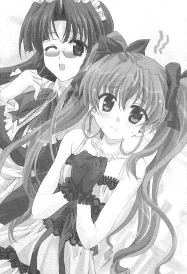
「あー、それより美夏」
「？」
「──改めて、誕生日おめでとうな」
「おめでとうございます♪」
春香といっしょに声を揃えて、プレゼントの入った包みを差し出す。
「あ──」
その言葉に美夏はハッとしたように顔を上げて。
「う、うんっ！ ありがと、おに～さん、お姉ちゃん♪」
満面の笑みを浮かべてそう元気に声を返してきた。
むう、こうやって切り換えが早いのはツインテール娘のいいところだな。
「それでこっちがプレゼントだ。よければもらってくれ」
「わ、ありがと！ ね、ね、開けてもいい？」
「ああ、もちろん」
「やった！ なにかな、なにかな～......♪」
嬉しそうに鼻歌を歌いながら丁寧に包装紙を開いていく。
そして出て来た中身を見て、お気に入りの大好きな遊び道具を目にした仔猫みたいに目を輝かせた。
「わ～、かわいい～♪ ね、ね、これってネックレス？太陽のカタチだよね？」
「ああ」
うなずき返す。
プレゼントに選んだのは『太陽の雫』というネックレスだった。
トップの部分が太陽を模した造りになったかわいらしい水晶の首飾り。
太陽をモチーフにしたものに決めたのは、春香にプレゼントした『月の光』と対になるんじゃないかと思ったのと、お日様という元気で健康的なイメージがこのツインテール娘にピッタリだったからだ。
「わ～、わ～、嬉しいな～♪ かわいくておしゃれで、おに～さんにしてはすっごくセンスがいいね～♪女の子の好みのツボが分かってるってゆうか～。どこで買ったの～？」
その言葉に。
「あー、まあ、春香といっしょに選んだからな」
「え？」
「春香に付き合ってもらったんだ。俺だけじゃ少し心許なかったからな」
隣の春香にそっと目配せをする。
いかにかしましくて耳年増なツインテール娘とはいえやはり十四歳（いやもう十五歳か）の女子である。その辺のセンスは同じ女子の方がいいだろうということで、春香に選ぶのを手伝ってもらったのだ。
そのことを美夏に伝えると。
「そっか、お姉ちゃん、と......」
「？」
「......うん、そだよね。普通に考えたらそうだろうってことは分かってたはずなのに......」
「美夏？ どうかしたのか？」
「え......あ、う、ううん」
ふるふると顔を振って。
「──ありがとね、おに～さん、お姉ちゃん♪すっごく嬉しい。『太陽の雫』、大事にするからっ♪」
「ん、ああ」
明るい声での返事。
とはいえその前の反応が若干気にかかるんだが......
その疑問に。
「だ、だ～か～ら～、別に何でもないって。あいかわらず二人は仲がいいな～って思っただけで。......ほら、それよりこの後にもシークレットのイベントとかがたくさんあるからさ、楽しみにしてるとい～よ♪」
「......」
......まあ、本人が何でもないっていうんならいいのか？
そこはかとなく気になるものの自分をそう納得させて。
「お姉ちゃんもほんとにありがとね♪ へへ～、これでお姉ちゃんの『月の光』とお揃いな感じだ～♪」
「そうですね。どういたしましてです、美夏♪」
「えへへ～、お揃い、お揃い～♪」
「......」
そんな姉妹の会話を聞きつつ、プレゼント贈呈は終了したのだった。
２
美夏の言う通り、プレゼント贈呈の後には様々なイベントが目白押しだった。
定番のビンゴ大会やら会場内に隠されたお宝を見つけるトレジャーハンティングやら大ジャンケン大会やら。
バラエティー溢れる催しの数々。
それらはどれも招待客参加型のアクティブな内容で、人懐こいツインテール娘の誕生日パーティーに似つかわしい賑やかで明るいものだった。
「あー、ビンゴ外れたー！ もうあといっこだったのにー！」
「えへへぇ、美羽は当たったのぉ。高級美顔用げるまにうむろーらーげっとだよぉ♪」
「さっきのジャンケン大会も最後まで残ったし、美羽、すごいですね......」
「ぶいなのぉ♪」
光たちも楽しそうにそんな会話を繰り広げていて。
「......」
うーむ、楽しげないい雰囲気だな。
招待客側も迎える側のツインテール娘やメイドさんたちも皆が一つになっている感じで。
いかにもツインテール娘の誕生日パーティーらしいというか。
その居心地の良い空気を好ましく感じながら会場の様子を眺めていると。
「──あ、裕人さん。ごめんなさい、今から少しだけ席を外させてもらいますね」
「え？」
と、イベントのラッシュがひと段落したところで、隣の春香がそう言ってきた。
「？ どうかしたのか？」
「あ、はいです。えと......実はお客様の中にお知り合いの方がいらっしゃったそうなので、そちらにご挨拶に行かなければならないようでして......」
「知り合い？」
「はい。さっき美夏から聞かされて......」
「そうなのか......」
お嬢様も色々と大変だな。
俺は春香に向かって笑いかけて。
「分かった。待ってるな」
「はいです、行ってまいります♪」
そう言って春香はぱたぱたと会場の外へと走り去っていってしまった。
後には光、美羽、エリの三人と俺が残される。
と、光がにやにやといたずらっぽい笑みを浮かべて。
「あれー、おにーさん、どうしたんですかー？春香おねーさんが行っちゃって寂しいとかー☆」
「む？」
「もうばればれですよー。春香おねーさんを見送る時の切ない目でいっぱつで分かっちゃいましたー☆」
「ご主人様に捨てられたミニチュアダックスフンドみたいだったのぉ♪」
「え、そ、そうなのですか......？」
口々にそんなことを言ってくる。
むう、余計なお世話というか、ツインテール娘がいなくても十分にかしましいな......（エリを除いて）
「......そんなんじゃない。ただ普通に見送ってただけで」
「へー、そうなんですかー？ まあそういうことにしてあげてもいいですけどー。へー、ほー、ふーん☆」
「くすくす、おに～さん、かわいいねぇ♪」
「え、えと......おにーさんは春香お姉さんがいなくて寂しいんですね......」
「............」
もう言いたい放題だな......
まあいつものことっちゃあいつものことなんだが......
春香、早く戻って来ないかな......と心の底から願いながらかしまし中学生たちの耳年増トークを眺めていると。
「──お待たせしました、裕人さん♪」
「お......」
そんな透き通るような声が耳元で響いた。
振り返ってみると......そこに立っていたのはさっきと同じ純白のパーティードレスを着たお嬢様。
「すみません、遅くなってしまって。お話が長引いてしまいまして......」
「ん、あ、いや」
こっちを見上げながら穏やかににっこりと微笑んでくる姿にそう答える。
その様子は実に無邪気で、春香らしい遠慮がちでありながらもかわいらしさが溢れ出てくるものであったんだが......
「あ、そうです。あちらにビリヤードの台があるのを見かけました。裕人さん、よろしければいっしょにやりませんか♪」
「ビリヤード？」
「はいです♪ あの打ち上げでやらせていただいて以来好きになってしまって......♪どうでしょうか？」
ちょこんと俺の服の袖を引っ張りながらそんなことを言ってくる。
「......」
......正直、三ヶ月前だったら分からなかっただろうな。
ここ最近の春香との様々な出来事。
修学旅行やら『初めてのお泊まり』を伴った二回目のデートやら。
それら一つ一つの過程を経て......春香の細かい感情の動きだとか仕草が表すことだとか、その意味が少しずつ分かるようになってきた。
「？ どうされました、裕人さん？」
「いや......」
不思議そうにちょこんと首をかたむけてこっちを見上げてくる。
それは本当に自然なものであり、三ヶ月前の俺だったらそのまま信じ込んで普通にうなずき返していただろう。
だけどそれはあくまで昔の話。
今は──
「──それで、春香はどうしたんだ、美夏？」
「え......？」
「春香じゃなくて、美夏なんだろ？ 春香はどこに行ったんだ？」
ぽんぽんと頭を撫でながらそう尋ねる。
その言葉に目の前の春香（？）が少しだけ動揺したような表情になる。
「え......な、何を言ってるんですか、裕人さん......？わ、私、春香ですよ......？美夏がどうかされたのですか......？」
「ん、残念だけどもうバレてる。うまく化けてるとは思うけど、分かるというか」
「え、で、ですけど......」
「......」
「......」
「......」
しばしの沈黙。
だがやがて観念したように春香（？）はは～っと大きく息を吐いて。
「..................あ～、ばれちゃったか～......」
ぱさりと一つにまとめていた髪をほどきながら美夏がそう口にした。
「ん～、自信あったんだけどな～。だめだったか～。──お姉ちゃん、もう出て来てくれてだいじょぶだよ～」
「あ、そうなのですか......？」
美夏のその声に会場隅の柱の陰の一つからおずおずと春香が姿を現す。
それを見て光たちが。
「えー！ 今の春香おねーさんって美夏の変装だったのー？全然分からなかった......」
「うんうん、美羽もすっかりほんものの春香おね～さんかと思ってたよぉ」
「おにーさん......すごいですね......」
驚いたようにそう言ってきて。
髪をツインテールに戻した美夏も。
「でも何でこんなにすぐに分かったの？ せっかくのサプライズだからお姉ちゃんに協力してもらって髪型も身長もスリーサイズもぴったり揃えたし、ビリヤードをやってたっていう最新情報まで使ってがんばったのに......。あ、もしかして入れ替わる前のお姉ちゃんの反応で分かっちゃったとか？お姉ちゃん、ウソつけないから......」
「ん、いや、そういうわけじゃないぞ」
正直あの時点ではまったくもって分からなかった。
言われてみれば確かに僅かに春香の反応は不自然だったような気もするが、それも後で言われてようやく気付くようなレベルだし。正直春香としてはよくやっていたと思う。
「え......じゃあ何で？ わたし、何か失敗しちゃった？」
「いや、それもない。うまく春香のマネをしてたと思う」
「だったら、何で......？」
納得がいかないって顔になる。
「んー、何でって言われても実は俺もよく分からないんだよな。ただ何となく、細かい仕草とか雰囲気とかがいつもの春香と違うと思っただけで」
「え......」
「言ってみればフィーリングってやつかもしれないな。ホントに何となくで......」
確かな理由は自分でも分からない。
どこで気が付いたのかポイントで挙げろと言われたらおそらくできないだろう。
言葉ではうまく言い表せない、本当に感覚的なことで微妙に違和感を覚えたってだけで......
「............」
「美夏？」
「前は......分かんなかったのに......」
「ん？」
「何でも、ない......」
そのままうつむき気味に黙り込んでしまう。
むう......どうしたっていうんだろうね......？
＊
胸の奥がおかしかった。
まるで何かできゅ～っと締め付けられるようでざわざわとして......何だかすごく落ち着かなかった。
それはやっぱり今までになかった経験で......
「......」
わたし......どうしちゃったんだろう。
ぜんぜん分からない。
前からヘンな感じはあったけど......それがますますひどくなってきている感じだった。
──誕生日プレゼントの『太陽の雫』。
おに～さんがそれをプレゼントしてくれたのはうれしかった、すっごくうれしかった。
だけど......
「............」
だけどそれを......お姉ちゃんといっしょに選んでる姿を考えたら、急に胸が苦しくなってきた。
苦しくて落ち着かなくて、いてもたってもいられない心地になってきて......
──そんなことを考えちゃだめなのは分かってる。
おに～さんとお姉ちゃんが仲がいいのは鉄板で、そのことはもう変わりがないのはよく分かってる。
だけど。
それだけど。
「......苦しいん、だもん......」
原因はやっぱりぜんぜん分からない。
出所は分からないまま、ただ違和感だけがどんどんと広がっていく感じ。
だけど胸の奥の痛みは、もうどうにもならないくらいに大きくなり始めていて──
３
『──本日は乃木坂美夏様のお誕生日パーティーにお越しいただきありがとうございました～。さてさてお名残惜しいですが、これにて全てのプログラムを終了させていただきます～。皆様、どうぞお気を付けてお帰りくださいませ～♪』
そんな那波さんの声が会場内に響き渡り。
午後二時半。
朝の十時からおよそ四時間半にわたったツインテール娘の誕生日パーティーは終わりを迎えようとしていた。
『なおお帰りの際に出口のところで美夏様からささやかながらお土産をお渡ししていますので、どうぞお受け取りになってお帰りくださいな～♪』
それを受けて、招待客のお嬢様たちが次々と帰って行く。
そして俺の周りでも。
「さ、あたしたちもそろそろ帰らないとなー」
「うん、お別れの時間なのぉ」
「そうですね、少し名残惜しいですけれど......」
光たちがそう言い合って。
「おにーさん、今日はとっても楽しかったですよー。また時間があったら双葉女学院にも遊びに来てくださいねー☆」
「美羽、おに～さんの首をあらうじゅんびをして待ってるからぁ♪」
「あ、ぜ、ぜひお越しください。本当にお待ちしていますから......」
「ん、分かった。ありがとな」
そううなずき返して。
手を振りながら「ばいばーい☆」「またねぇ、おに～さん♪」「し、失礼します......」と言って去っていくかしまし中学生たち（エリ除く）の後ろ姿を見送る。
「......」
さて、何だかあっという間だった一日もこれで終わりか。
色々と盛りだくさんだった誕生日パーティー。
散々からかわれたりもしたが楽しかったし、有意義な時間を過ごすことができた。
それは本当に来てよかったと思えるものであり......
「......」
だけど一つだけ気にかかることがあった。
それはツインテール娘のこと。
さっきの春香変装の一件から美夏の様子がどことなくおかしいんだよな。テンションがいつもと違うというか何か言いたげで......。いやよく考えてみれば様子がおかしいのは遊園地に行った辺りからか。なんかどこか挙動不審な感じで......
「............」
本当にどうしたんだろうね......？
何だかここのところマイペースなツインテール娘らしくないというか......
そんなことを考えながら春香とともに出口へと向かう。
出口のところではそのツインテール娘が那波さんや葉月さん、その他のメイドさんたちとともに帰りの招待客に挨拶をしていた。
「美夏」
「あ、おに～さん、お姉ちゃん......」
こっちの姿を目に留めると美夏は小さく顔を上げた。
ツインテールを揺らしながら少しだけ無理をしたように笑うと。
「あ、きょ、今日はわたしの誕生日パーティーに来てくれてありがとね。お祝いしてくれてプレゼントまでくれて、すっごい嬉しかったよ♪」
「え、ああ......」
「楽しくて幸せで、とっても嬉しくて、何も引っかかることなんてないはずで......」
「......」
「......ない、はず、で......」
「......」
「......」
「美夏？」
「どうしたんですか、美夏？」
「美夏様～？」
「............」
そのまま下を向いて黙り込んでしまう。
「？ どうしたんだ？ 何か言いたいことでもあるのか？」
「............」
「美夏......？」
「......」
「......」
「..................おに～さん」
「え？」
「──来てっ！」
「!?」
いきなりぐいっと手を引かれた。
そのままツインテールとともに身をひるがえすと、美夏は俺を引っ張って一直線に出口へと向けて走り出した。
「お、おい......!?」
「裕人さん、美夏......？」
「......美夏様、裕人様！」
「美夏様～？」
背後から春香たちの声が追いかけてきて。
「み、美夏......!?」
「............」
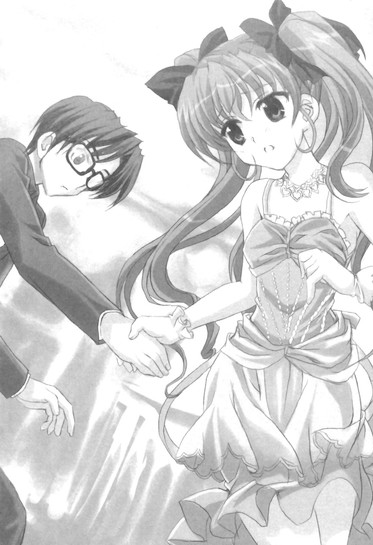
慌てて問いかけてみるも返答はない。
きゅっと唇を結んだままうつむいて、ただひたすらに腕を引っ張ってくるだけであって──
＊
「......美夏様、裕人様！」
「え、えと......裕人さん？ 美夏......？」
「美夏様～......」
突然の出来事に辺りが一瞬だけ騒然となる。
その場にいる全ての者の目は二人が消えていった出口の方へと注がれていて──
「......どちらに向かわれたのか......？ ......どうやら屋敷から外に出られたようですが、何であれ、すぐに後を追わなければ！」
「お待ちください、葉月さん～」
「......那波さん？」
「すぐに追わなければというお気持ちは分かります～。ですがここは美夏様の好きにさせてあげてくれませんか～？」
「......は？」
「美夏様ももう十五歳なのですから、何か考えがあっての行動のはずです。それにもともとこの辺りの土地は美夏様の慣れ親しんだ場所ですし、裕人様とごいっしょなら大丈夫かと～」
「......ですが......」
「お願いいたします。何かありました場合、全ての責任は私が請け負います。ですので、どうか今日一日だけは......」
「......那波さん......」
「......」
「......」
「......」
しばしの沈黙。
だがやがて。
「......分かりました。那波さんにお任せいたします」
「葉月さん～！ ありがとうございます～！」
その言葉で場のざわめきが少しだけ収まる。
とはいってもまだどこか落ち着かない感じの空気。
その様子を横目で見ながら。
「......小さな頃からずっと見ているせい、なんですかね～。やっぱりどうしても美夏様には肩入れしたくなってしまいます」
そう小さくつぶやいたのだった。
４
美夏がようやく手を離したのは、ハッピーサマーマウンテンから十分ほど走った後に辿り着いた最寄りの駅でたまたま来ていた電車に乗ったところだった。
伊東駅から南に向かって伸びている伊豆急行線。
その最前列の車両の中で、俺と美夏は向かい合って座っていた。
「あー、美夏、これは......」
目の前に座るツインテール娘に問いかける。
何ていうか状況がさっぱり掴めない。
現在のシチュエーション。何だって誕生日パーティーから僅か三十分後にこんな具合に二人だけで電車に揺られているのか......
これっぽっちも予測してなかった混迷極める現状に戸惑っていると。
「わ、わかんないよ......」
「え？」
ほとんど消え入りそうな声で、美夏がそう言ってきた。
「わ、わかんない......じ、自分でも、どうしてこうしちゃったのかわかんないの......。帰り際におに～さんの顔を見てたら、何だか胸の奥がざわざわして落ち着かなくなっちゃって......き、気付いたらおに～さんの手をつかんでて......」
「美夏......」
「な、なんでこんなことしちゃったんだろう......。ご、ごめんね......こんなわけのわかんないことしちゃって......。で、でも自分でもおさえられなかったんだよ......。胸が苦しくて......どうしても、今日一日はおに～さんと二人だけでいっしょにいたくて......」
「......」
絞り出すような言葉。
その内容から美夏がこんなことをするに至った理由はまだ分からんが......それが真剣な気持ちから発せられていることだけは、決して鋭くない俺にもよく理解できた。
だから。
「──分かったよ」
「え......？」
「何だかよく分からんが......美夏はこうしたかったってことなんだよな？なら......美夏を信じる。美夏の言う通りにする」
「お、おに～さん......」
「ただ俺はこの辺りの地理はよく分からんからな。その辺については美夏任せになるけど、大丈夫か？」
「あ──」
俺のその言葉に美夏は口元に手を当てて目をぱちぱちとしていた。
だがすぐに大きくうなずいて。
「──う、うんっ、だいじょぶ♪ おに～さんは何も心配しないで、サンタマリア号（沈没船）に乗った気分で美夏ちゃんに任せておいけばい～よ！この辺りは旅行とかで、子供の頃からよく来てたから♪」
「ああ、任せたぞ」
「ま、任せてっ！ ......へへ～、それにおに～さんも意外とまんざらじゃないんじゃないの～？こ～んなぷりてぃ～でかわいらしい美夏ちゃんと二人きりでぷち旅行だなんて♪」
「む、何言ってんだ」
「えへへ～♪ 照れなくてもい～のに～♪」
いたずらっぽく笑う美夏。
その表情はいつもの耳年増でちんまいツインテール娘のものに戻っていて......うむ、やっぱり美夏はこういう風に笑ってる方がいいもんだな。
「とにかく、任せたぞ。頼りにしてるからな」
「らじゃっ♪」
ツインテールを元気に揺らしながら美夏がそう答えて。
とまあそんな次第で、今日一日はとことん美夏に付き合うことになったのだった。
「──で、どうするんだ？ どこか行きたいところとかがあったりするのか？」
「あ、うん♪」
俺のその質問に、ドレスの上に俺の上着を軽く羽織ったツインテール娘はこくりとうなずいた。
「えっとね、おに～さんといっしょならどこに行っても楽しいんだけど、どうせなら思い入れがあるところがいいかな。もう少し電車に乗って、伊豆高原まで行きたいかも♪」
「伊豆高原か......」
とりあえず行ったことはない場所である。
この辺りでは割と名の知れている観光名所でなんか地ビールが有名ってこと（ルコが言ってた）くらいしか知らんというか。
「ん～と、伊豆高原は静岡県の右の方にある海と山の両方に面した高地だよ。割とスタンダードな観光地として評判で、日本で『高原』って呼ばれるところの中では一番標高が低いって言われてたりもするかな～。小規模な美術館とか博物館とかがたくさんあって、ニューサマーオレンジとかも有名なんだよ～」
「へえ......」
そうなのか。
さすがにこの辺りのことは任せろと言うだけあって詳しいな。
「ま、細かいことは現地に着いたら説明するよ♪あ、それとね、いっこだけおに～さんにお願いがあるんだけど......いい、かな？」
「お願い？」
「う、うん......ちょっとしたこと、なんだけど......」
少しだけ真面目な顔になりながらこっちを見上げてくる。
なんか知らんがこんなに真剣に言ってくるんならきっと大事なことなんだろう。
だったら聞かんわけにもいくまい。
すると美夏はもじもじと声を小さくして。
「あ、あのね......」
「ん？」
「あ、あのね......今日は一日、わたしが自分から離した時以外は......ずっと手を繋いでてくれない、かな......？」
ちらちらとこっちの顔を見上げながら恥ずかしそうにそう言ってきた。
「そ、それとね？ わたしがお願いしたら頭をなでてほしいの......。よ、よくやってくれてるみたいに優しく、な、なでなで、って......。あ、あと、最後に......」
「......」
「さ、最後に......おに～さんのこと、今日だけは〝裕人さん〟って呼んでもいいかな......？」
「え？」
「ゆ、〝裕人さん〟って......。その、お姉ちゃんとかが呼ぶのを聞いてて前からいいな～って......。え、えと、だめ、かな......？」
「......」
いや、そんなことでいいのか？
まあ何で名前で呼ぶのがいいのだとか、一個だけでいいと言いながらさりげなく三個お願いしてきてるのはこの上なくツインテール娘らしいっちゃらしいだとか、いくつか突っ込みどころがあるのはともかくとして、あんなにもったいぶった風に言うくらいだからもっと何かとんでもないことかと思ったんだが......
ともあれそんなもんでいいならお安いご用だ。
なので。
「──ん、了解だ」
「え？」
「手を繋ぐのも頭を撫でるのも呼び方の件も、全部オッケーだ。善処する」
「ほ、ほんとっ？」
「ああ」
「わ、わ～、さすがおに～さん！ だから好きだよ～♪」
「お、おわっ！」
座席からぴょこんと飛び出してぎゅ～っと首筋に抱きついてくる。
まあ何だかんだで今日は誕生日だし、特別というか......
「あー、だけど今日だけだからな。明日からは元通りだぞ」
「うん、ありがと、〝裕人さん〟♪」
と、周りにあまり人がいない車内でそういったやり取りをしていて。
そんなこんなをしている内に、電車は伊豆高原駅へと到着した。
伊東から三十分ほどの新しい感じのキレイな駅。
「ここが伊豆高原か......」
電車から降りて辺りを見回す。
当然のごとく実物を見るのも初めてだが、色々な種類の土産物屋があちこちにあったり観光案内の看板があったりといかにも観光地の駅って感じである。高地だけあって気温も涼しめで過ごしやすそうというか。
周りを見ながらそんなことを思っていると。
「それじゃいこっか、〝裕人さん〟♪」
「お......」
にこにこ笑顔な美夏が「へへ～♪」と頬を緩めながらきゅっと手を握ってきた。
どうやら早速さっきのお願いとやらを実行するらしい。いやまあいいんだが......
「あー、それじゃあどこから向かうんだ？」
「ん～、そだね。さっきも言ったけどこの辺は美術館とか博物館とかが多いんだよ。他にはステンドグラスの工房があったりオリジナルのオルゴールを作れるショップがあったりもするから、とりあえずその辺を適当に歩いてみよっかな～って。いい？」
「ああ、任せる」
「ん、じゃあれっつご～♪」
そんな楽しげな美夏の声とともに手を繋いだまま並んで歩き始める。
午後の麗らかな日差しが降り注ぐ伊豆高原。
木々と緑に囲まれた涼しげで気持ちのいい道である。
「ん～、何だかんだいってもやっぱり高原だからね～。伊東とかよりもずっと緑は多い感じ。もうちょっと遠くまで行けばシャボテン公園とか大室山とかもあるんだよ～」
「そうなのか？」
「うん、歩いて三十分くらいかな」
「へえ......」
そんなことを話しながら進んでいき。
──十分後。
目的地界隈へと辿り着いた。
「おお、ホントにたくさんあるんだな」
美夏の言う通り、確かに色々な種類の博物館やら美術館やらがあった。
ガラス工芸美術館とかテディベアミュージアムとか絵本美術館とか。
何だかパッと見は怪しげな代物まである。
「さっきも言ったけどこの一帯はほんとにこういったものが多いの。公営じゃなくて私設のものがほとんどなんだけど、それだけに色んな面白い種類のとかもあったりするんだよ？」
「なるほど......」
それならこのカオスっぷりも納得だな。
「さ、じゃあ前置きはこれくらいにして、美術館見学でもしよっか♪」
「美術館......？」
「うん♪」
「......」
いやそれは明らかにこのアクティブ度一二〇パーセントなツインテール娘には向かない選択だと思うんだが。
遊び盛りのワンパク極まりないネコに江戸時代の小判展といった感じというか。
なので俺はコホンと咳払いをして。
「あー、美夏。美夏はそこの『テディベアミュージアム』だとか『ねこの博物館』だとかの方が向いてると思うぞ？」
だけどその言葉に美夏は「む」と首を振って。
「......だいじょぶだよ、子供あつかいしないで。ほら、わたしだってもう十五歳になったんだし、もう立派なおとなのじょせいなんだから。お姉ちゃんみたいに麗らかな春の午後を美術館でゆったりと優雅に過ごすことくらいできるんだもんっ」
「......」
大人の女性、ねえ......
まあ美夏がそうしたいってならあえて止める理由もないんだが......
「じゃあ決まり～。伊豆高原ルネッサンスだよ～！」
「ん、ああ」
そんな風に元気よく手を上げる美夏に先導されて。
そういうわけで美術館見学をすることになったんだが......
──一時間後。
「う、うう......疲れた......」
ぐったりとベンチに座り込む美夏の姿があった。
「びじゅつかん......とってもくぎょうだよ......。おっきな声出しちゃいけないし飛び跳ねてもいけないし......それにだいたいどこでも入り口でお父さんお母さんといっしょにいらっしゃいとか言われるし......わ、わたしは十五歳なのに......お、おとなのじょせいなのに......っ......」
「まあ、なあ......」
もともと童顔な上に身長一四七センチのちんまさだし......
そう口にした従業員さんたちの判断ももっともというか。
「う、うう～、納得いかない～......じゅ、じゅうごさい......おとなのじょせい、おとなのじょせい......」
ぶつぶつとそうつぶやく美夏に。
「あー、美夏。美夏はそのままでいいと思うぞ」
「え？」
「美夏はいつもの美夏でいいんじゃないか？ 別に肩肘張って無理して大人ぶることもないだろ。そのままでも美夏は十分に魅力的だし、そんな美夏の方が俺は好きだしな」
その言葉にツインテール娘が目をぱちぱちとさせる。
「おに～、さん......」
「だから気にするなって。普段通りの美夏でいいと思うぞ。な？」
見上げてくるツインテールをなでなでと撫でる。
それは俺の本音でもあった。
無邪気で天真爛漫なツインテール娘。いつものままのキャラでいいと思うんだよな。
「......そんなの、ずるい」
「え？」
「......そんな言い方、ずるいよ......そう言われたら......なんにも............いえなくなっちゃう、じゃん......」
「？」
ほとんど消えいるような声で小さくつぶやく。
よく聞こえなかったんだが......
「な、何でもないもんっ！ べ、べ～、だ。にぶちんなおに～さんには教えてあげないんだから～♪」
「むう......」
あっかんべ～をしながらそんなことを言ってきやがる。
てか呼び方が〝おに～さん〟に戻ってるんだがいいのかね。
＊
胸の奥がふわふわと浮き立ってた。
真夏の空に浮かぶ大きな真っ白い雲みたいに、すっごく軽やかだった。
「～♪」
──どうしてこんなに楽しいんだろ？
おに～さんといっしょに同じ時間を過ごしてるだけで、二人で並んで歩いているだけで、今までの胸のざわざわがウソだったみたいに晴れやかになっていく。
それはまるで雨の雲間に光が射しこんでくるみたいで......
「......」
──それに......そ、そのままの美夏でいいだなんて言われちゃったし......
優しいおに～さんの声。
おに～さんに、お姉ちゃんにも負けないいいところを見せようと思ってやろうとした美術館見学だったけど、結果としてはよかったのかな？棚から高級つぶあん入りのぼた餅って感じだよ、ふふ～♪
そんなことを思いながら一人でにんまりと嬉しい気分になっていて。
「......」
でもこの気持ちも何なんだろう......？
ちょっと前までのざわざわとは正反対のうきうきな心地。
それもまた初めて味わう未経験なもので......
「......」
──やっぱり、原因が何かは分からない。
どうしておに～さんがお姉ちゃんと笑ってるのを見ると胸が苦しくなるのか、どうしてこうやっておに～さんと二人だけでいっしょにいると幸せな気持ちになってくるのか。
その理由は分からないけど......
でも......今が楽しいんだから、いいよね？
楽しいってことはきっと良いことなんだと思う。心が今の状態を求めてるあかしってゆうか......
「......」
だから。
今はこの時間を、気持ちを......もっと大事にしたいと思ったんだ。
＊
「──楽しかったね、〝裕人さん〟♪」
「ん、そうだな」
美夏の言葉にそう返事をする。
ツインテール娘には割と鬼門だった美術館見学を終えて。
その後もいくつか伊豆高原での観光を楽しんだ。
ガラス工芸の博物館でステンドグラス体験をしたり、ちょっと怪しい感じの博物館に入ってみたり、近くにあったドッグフォレストでワンコたちと戯れたりと。
いかにも観光地な時間を過ごした。
そして気付けば時刻はもう午後の六時を回っていて──
「だいぶ暗くなってきたな。そろそろ散策は終わりにせんと」
「ん、そだね。この時間になっちゃうと博物館とかお店とかはほとんど閉まっちゃうし......」
俺の言葉に美夏も少し残念そうにそううなずき返してくる。
「んじゃ名残惜しいけどぼちぼち撤収しよっか？」
「ああ、そうだな」
そう言って歩き出した美夏。
だが駅に戻るのかと思いきや。
美夏が当たり前のように向かった先。
それは。
「............」
暗闇の中に厳かに建つ......歴史を感じさせるどこか上品な雰囲気の、旅館だった。
５
「......あー、美夏？」
「ん、なにかな、〝裕人さん〟？」
「......。......いや、これはどういうことなんだ？」
眼前の建物を見上げながら尋ねる。
目の前にあるのはどうみても駅じゃなくて旅館に見えるんだが。
すると美夏は。
「え、どういうことも何も、見た通り旅館だよ？わかんない？」
「いやそれくらいは分かるが......」
そうじゃなくてこれから帰るってのに何だってこんなところに来てるんだって話である。
その疑問に。
「え～、まだ帰らないよ？ だってわたし、今日一日ってゆったじゃん。それって一日は二十四時間のことだから、短く見積もって明日の午後くらいまでってことだもん。違う？」
「それはそうかもしれんが......」
それは完全に屁理屈だろ。
てかまさかとは思うが......泊まる気なのか、このツインテール娘？
話の流れから明らかにそんな感じなんだが。
いや......それはいくら何でも色々マズいだろ。
俺たちはまがりなりにも二人とも未成年なわけだし、その、ちんまくて耳年増なツインテール娘とはいえいちおう男子と女子であるわけだし......
そのことを伝えると。
「え～、も～、相変わらずおに～さんはヘンに固いんだから～。ちょ～っといっしょに一泊するだけなんだから、別にそこまで難しく考えないでい～じゃん。青春の軽い一イベントってゆうか～。......な～に、それともお姉ちゃんとの『初めてのお泊まり』はよくて、わたしとのお泊まりはいやだってゆうの～？」
「え、いや......」
そういうわけじゃないんだが。
しかしそれとこれとは話がサハラ砂漠と鳥取砂丘くらい違う気がするんだが......
「じゃあい～じゃん♪ いっつの～ぷろぶれむ。はい、決まり～♪」
「お、おい......」
笑顔でそんなことを言いながら手を引っ張って強引に旅館の中へと引っ張り込んでくる。
それを何とか阻止しようと手を離そうとして。
「あ、〝裕人さん〟ＮＧ～！ 最初にお願いしたこと忘れたの～？わたしから離さない時は手を繋いだままにしてるってゆったじゃん～！」
「ぬ、ぬう......」
そ、それはそうなんだが。
痛いところを突かれて言葉に詰まる俺に。
「ほら～、そうゆうことだからぐずぐずしてないで～。疲れたから早く入るよ～♪」
「あ、お、おい、だからだな......そ、そうだ、だけど、ここ、どう見ても高級旅館だろ？代金とかは......」
「ん、それならだいじょぶ～。ここ、昔からよく来てる行き付けの旅館で女将さんと顔見知りだから。顔パスでオッケ～なの♪」
「ぬ......でも急に来たら予約とか......」
「それも平気～。お得意様名簿に載ってて、年間でお部屋を確保してもらってるから♪」
にっこりと笑ってそんなことを言ってきやがる。
「......」
もはや回避手段はナシか......
......はあ。
......こうなったらもう仕方ない。
ここまで追い風要素が揃ってたらその気になってるツインテール娘は引かないだろう。何だかんだと理由を付けて意地でも泊まろうとするに違いない。だったら......覚悟というか腹を決めて最後まで付き合う選択をした方が賢明だ。
「......明日になったら、絶対に帰るんだぞ」
「え？」
「......今だけだからな。それと春香たちに連絡だけは入れる。それが呑めるってなら泊まりまで付き合う」
「やった！ うん、それでい～よ♪ へへ～、〝裕人さん〟とお泊まりお泊まり～♪」
ぴょんぴょんと飛び跳ねながら喜ぶ美夏。
そういうわけで......とうとうツインテール娘といっしょに『初めてのお泊まりパートⅡ』まですることになったのだった。
顔見知りだという気のよさそうな女将さんに案内されて通されたのは、旅館の中でも離れにあたる独立した部屋だった。
縁側やら庭まで付いていてちょっとした一軒家ほどの広さ。
和洋の違いこそあるものの、部屋のレベルとしては春香と泊まったスイートルームとタメを張るくらいである。部屋の中に温泉とプールみたいなものまでありやがるし......
「むう、スゴいな......」
これヘタしたら俺の家よりも立派なんじゃないのか？
リビングもゲストルームも普通に完備だしデフォルトに二階建てだし......
あまりの造りの立派さにお金ってのは本当にあるところにはあるもんなんだな......と感じていると。
「じ～......♪」
「む......？」
窓際のソファで体育座りになった美夏が、ヒザの上に顔を乗せて真っ直ぐにこっちを見てきているのに気付いた。
「な、何だ？ どうかしたのか？」
「え、ん～ん♪」
俺の言葉に美夏は楽しそうに首を振ると。
「ただな～んか不思議だな～って思って。おに～さんといっしょにこうやってここの旅館にお泊まりしてるなんて♪らいふいずびゅ～てぃふるって感じ？」
「不思議って、自分でそうするようにしたんだろ......」
「そだったね、えへへ～♪」
本当に嬉しそうにそう笑みを浮かべてくる。
無邪気なツインテール娘スマイル。
その表情は本当に心を許して甘えてきてくれるものであって......
「......」
まあ......俺だって別にこのツインテール娘と何かをすることがイヤだってわけじゃないんだよ。
人懐こくてどんな時でも明るくノリノリだし、何だかんだでいっしょに行動するのは楽しい。
ただ基本的にアクションが無軌道で唐突で、毎回毎回マイペースに動いてくるから、純粋な乗り気よりも驚きだとか呆れだとかが先に来るってだけの話で。
......そうだな。
経緯はともあれこうしてこんな立派な旅館に二人で泊まることになったわけなんだし、せっかくなんだから今日はとことんまでこのツインテール娘ライクなシチュエーションに付き合って楽しむのもいいのかもしれん。
俺は美夏の顔を見て。
「じゃあとりあえずのんびりまったり過ごすか。温泉旅館ライフをエンジョイだ」
「うん──〝裕人さん〟♪」
そうにっこりと笑ってくる美夏にうなずき返して。
旅館といえばやはりこれは欠かせないということで、まずは浴衣に着替えることにした。
何でもここでは宿泊客には色々な種類の浴衣が無料で貸し出されるということで、各々好きな色や柄のものを選べるらしい。
「へへ～、どうどう〝裕人さん〟、似合うかな～♪」
「ん、ああ、いいと思うぞ」
ピンクで桜がちりばめられた柄のかわいらしい浴衣を着てくるくると回ってくる美夏にそう答える。
「そっかそっか、ありがと～♪ ん、〝裕人さん〟もすっごく似合ってるよ。男前でだんでぃで、美夏ちゃん惚れちゃうかも♪」
「あー、サンキュな」
「ふふ～、ほんとだよ♪」
にこ～と頬を緩めてそんなことを言ってくるツインテール娘。
ホントに楽しそうだな......
それから浴衣姿で少し館内や庭などの敷地を散歩した後に、部屋で夕飯を食べた。
手の込んだ豪勢な料理の数々。
「はい、〝裕人さん〟、あ～ん♪」
「......」
「ん、どしたの、ミラクルフルーツを食べ忘れた状態でレモンを食べたみたいな顔して？はい、あ～ん♪」
「......。......いや......」
やっぱり姉妹だけあって行動原理が基本的にいっしょなんだな。
何となくそんなことを思っていると。
「ほらほら～、早くあ～んしないと『めっ』だよ～、〝裕人さん〟♪」
「え、いや......」
「あ～ん♪」
「あ、あーん......」
若干戸惑い気味な俺の口に嬉しそうにマグロの刺身を差し出してくる。
そんな美夏の姿を見て、女将さんがまるで自分の娘でも見るように微笑ましい目で笑っていたのが印象的というか何というか。ホントにこのツインテール娘、だれからも好かれてるんだな。
で、そんな感じに夕飯も終わって。
「──じゃあ〝裕人さん〟、いっしょにお風呂にはいろっか？」
「は？」
「は？、じゃないよ～。せっかくお部屋の中に立派なヒノキ風呂の温泉が付いてるんだから入らないともったいないよね？資源の有効活用ってゆうか～♪」
「え、いやちょっと待て」
今いっしょにって言ったよな......？
や、この温泉、室内風呂だけあって当然のごとく男湯だとか女湯だとかに分かれてないんだが......
俺の突っ込みに。
「そんなの気にしないでい～じゃん♪ もうすでに〝裕人さん〟はわたしのだ・い・じ・な・と・こ・ろ（はあと）を見てるんだからさ♪いっしょにはいろ～よ♪」
「そ、そういう問題じゃないだろ！」
思わず声が出る。
論点としてる部分がまったく違うというか何というか......
こめかみを押さえたくなる俺に。
「も～、しょうがないな、〝裕人さん〟は～。こうなったら──」
「？」
「──〝裕人さん〟」
「え？」
「はい♪（がしっ）」
「あ」
にんまりとした笑顔とともに、風呂場から離れようとしていた手ががっちりと握られた。
「ふふ～、つ～かまえた♪ これでわたしがいいってゆうまで離しちゃだめだよ？そうゆう約束なんだからね～♪」
「............」
......しまった。
......またこの手か......
俺とツインテール娘との三つのお願い。
まあお願いがいつの間にか約束にすり替わってるという突っ込みはともかく、一度そうすると言った以上こうなると俺が弱い。というか最初は大したことじゃないと思ったこのお願いが要所要所で効果的に使われるんだが。まさかここまで考えてこの内容にしたんじゃないだろうな、このツインテール娘......
「さ、はいろっか♪ まさかとは思うけど〝裕人さん〟はいたいけな女の子との約束を破るような鬼畜で外道な男の子じゃないよね？美夏ちゃん、信じてるから～♪」
「......分かった、よ......」
もうこうなったらまな板の上の金目鯛だ。
煮付けなり寿司ネタなりなるようにしかならんだろう......と覚悟を決めた。
とまあそういうわけで。
美夏と二人で室内風呂へと入ることになったのだった。
当たり前だが、風呂ではバスタオル着用だった。
温泉としては本来邪道かもしれんが、ここは露天とか公共の風呂じゃなくてプライベートの個人風呂なのでそれでも特に問題はないからな。
「え～、バスタオル着けるの～？ せっかく〝裕人さん〟と生れたままの姿で裸のお付き合いができると思ったのに～♪」
ツインテール娘は相変わらず耳年増なそんなことを言っていたが、ここは譲れない絶対条件である。ていうか考えてみれば当然だろ......
というわけで美夏に手を繋がれたまま風呂場へと移動する。
風呂場の中は普通の浴室三個分ほどの広さで、大人五人くらいが余裕で入れるほどのものである。
特に美夏のちんまさを考えると二人で洗い場に並んでも広く感じるくらいだった。
「わ～、おふろおふろ～、おんせんおんせん～♪」
「走って転ばないように気を付けるんだぞ？」
「は～い♪」
楽しげにそう返事をしながら給湯口のマーライオンっぽい彫刻を見る美夏の姿を横目で眺めつつ、洗い場で身体を流して湯船へと浸かる。
ザブリ、とお湯が溢れて排水溝へと流れ込んでいき。
ふう、気持ちがいいな......
全身に染み渡る少し熱いくらいのお湯の感触。
今日一日の疲れが流れるお湯とともに文字通り流されていくかのようである。
「......」
うーむ、極楽だ......
温泉から放出される癒しと寛ぎのパワーに心から浸っていると。
と、そこで。
「あ、〝裕人さん〟、わたしも入るね♪」
「え？」
──ざぶり♪
「お......」
「え、えへへ～♪」
また少しだけ溢れるお湯。
そんな声とともに俺の胸に背中をもたれかけさせるように、美夏も湯船へと入ってきた。
「お、おい......」
思わず声がもれる。
腕と胸の中にすっぽりと美夏の身体がハマるような状態。
ほとんど後ろからツインテール娘を抱きかかえているような姿勢である。
「み、美夏......？」
身体全体にかかってくる美夏の柔らかくてちんまい身体の重み。
頭の上の方で一つにまとめられたいい匂いのする髪。
「えへへ～、〝裕人さん〟って背中だけじゃなくて胸も意外に広いんだね～♪すっごく落ち着くってゆうかいい気持ち～。ごろにゃ～♪」
さらには甘えたい盛りの気まぐれなネコみたいにごろごろとノドを鳴らしながら頬やら身体やらをすり寄せて（時にはぺろりと舐めたりもして）くるもんだから明らかにもう色々アウトで......
「ふふふ、〝裕人さん〟、飼い主のいない野良な美夏ちゃんにゃんこを優しくかわいがってにゃ～♪にゃ～ん♪」
「............」
ぐ、ぐう......これは何かのトラップか......？
いかに相手が十五歳で中学生なツインテール娘だからといって、これで何も感じないほど俺の興奮神経は衰えちゃいない。
身体のあちこちに触れる刺激を誘発させる感触。
そんなツインテール娘ウェーブを前にして、何をどう考えてもメガネを着けたままの顔面やら他の何やらに血流がアマゾンの濁流のごとく集中していくのを感じるのであって......
「み、美夏、そろそろ身体を洗いたいんだが！」
「え？」
「か、身体だ！ 悪いがちょっとどいてくれ！」
「あ、ちょっと〝裕人さん〟？」
まだすりすりと胸のところで頬ずりをしていた美夏を慌ててどけて、湯船から外に出て洗い場のイスへと座る。
く、い、色々と危ないところだった......
このままあの状態を続けると、なんか大事なものがガラガラと音を立てて崩れ落ちていきそうだったんだよ......
それを考えると今の俺の行動は緊急避難的な避けようのない措置というか。
だけど当のツインテール娘（今はワンテールだが）は、今の反応にいたくご不満なようだった。
ヒノキ製のイスに座って精神統一をしている俺に、今度は。
「む～、何で逃げるかな、〝裕人さん〟。......も～、分かった。じゃあこの前のお礼も兼ねて、すい～とな美夏ちゃんが〝裕人さん〟の身体を洗ってあげるね♪」
「え？」
またそんな意味の分からないことを言い出した。
「待て美夏、それは......」
「ふふふ～、そのまんまの意味だよ～。わたしがおに～さんの身体を手ずからきれいきれいしてあげるってゆってるの♪あんだすたん？」
「だ、だからだな......」
言ってる意味が分からないんじゃなくて言ってる張本人の精神状態が分からないって言ってるんだが......
だけど美夏はそんなことはどこ吹く風な顔で。
「ほれほれ～、そうゆってもいやじゃないんでしょ～？いいからいいから～♪」
「い、いや、だからいいって言って......」
「往生際が悪いぞ～♪ ここはおとなしく美夏ちゃんに身を委ねて──あっ」
にまにまと笑いながら耳年増な台詞を連呼していたその時だった。
自分で鬼のごとく泡立てさせていたボディソープの泡に足を滑らせたのか、美夏が小さく声を上げた。
上体のバランスを崩して。
足を泳がせて両手をぱたぱたと動かしながら、そのまま前につんのめるように俺の方へと倒れ込んでくる。
「きゃ、きゃあっ！」
「お、おわっ!?」
上がる二人の叫び声。
ドスン！ バタン！
同時にそんな音が風呂場に響き渡って。
そのまま俺たちはもつれ合うようにして......風呂場の木張りの床に転倒した。
「い、いてててて......」
「あ、ご、ごめんね、おに～さん！ だ、だいじょぶ!?」
ワンテールを揺らした美夏が上から慌てたようにそう声を発してくる。
「あ、ああ、何とか......」
軽く頭だけを起こしながら返事をする。
下がヒノキ造りであまり硬くなかったのと元々のツインテール娘の軽さとが相まって、幸いなことに大したことはなかった。
むしろ美夏がコケそうになるのを防ぐことができてよかったというか......
「ほ、ほんと平気!? ど、どうしよう......これが原因でおに～さんが死んじゃったり、頭を打った影響でただでさえ天然でスケコマシなのがもっと悪化して呼吸をするみたいにおんなを食い物にする最悪のジゴロ野郎になっちゃったりしたら......！」
「......。......あー、大丈夫だ。特にケガとかもしてないから気にするなって」
「で、でも......」
「いいから......」
むしろ無自覚に言っている後半の内容の方が傷つくというか（ハートが）。
「とにかく俺は平気だから。まずは起き上がって──え？」
と、そこで気付いた。
今の俺たちの状況。
仰向けになった俺に美夏が倒れて覆い被さってくるというアグレッシブ（？）な位置関係。
言ってしまえば天然のエロマウントポジション──ナチュラルエロマウントポジションであって......
「あ......っ......」
少しだけ遅れて美夏もそのことに気付いたようだった。
自分が今置かれている体勢を見て頬を赤くすると。
「............っ......！（真っ赤）」
ばっ！ と胸元を両手で覆い顔を逸らしてしまう。
それはツインテール娘にしては珍しい恥じらいリアクションであり......
「あ、あー......」
「......」
「......」
「......」
「......」
そのまま無言状態が続く。
互いの身にまとわれていたバスタオルは今の拍子で大半がはだけてしまっていてあるのかないのか分からないくらい。
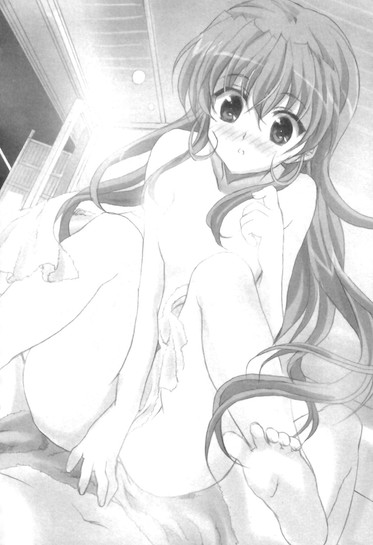
二人ともほとんど肌色な状況。
む、むう......どうしたらいいんだ......？
対処方法がさっぱり分からん。
と、そんな中──ツインテール娘がぽそりと口を開いた。
「ど、どう、かな......おに～さん？ み、みっかみかに......された......？」
「は......？」
な、何を言い出すんだ......？
「だ、だから～......みっかみかにされたかってきいてるんだよ。ほ、ほら、今の状況ってすっごくどきどきものだよ？どきどきでむらむらで......け、健全な男の子なら美夏ちゃんの魅力にすっかり脳の奥までヤラれて、みっかみかになっててもぜんぜんおかしくないって思うんだよ？」
「......」
真っ赤な顔のまま人差し指を立ててそんなことを言ってくる。
いや「思うんだよ？」って言われてもな......
相変わらずこんな時にまでよく分からんことを言ってくるというか......
「......」
とはいえいつものツインテール娘とは何かが違った。
いやみっかみかだとかその辺の物言いの耳年増さはこの上ないくらい普段通りに健在なんだが、それを醸し出している空気が違うような気がする。
具体的に言うと、通常よりも何だか恥じらい成分が多いような......
「............」
......む、むう。
......何なんだろうね。
顔を上げればそこにあるのはツインテール娘の湯気に覆われたちんまい全身。
さらに視線を上に移せばそこには上気した恥ずかしげな顔もあるわけで......
「............」
何かが胸の奥でドゴリと鳴り響いていた。
熱くて全身の血流を活性化させる何か。
美夏も美夏で、何やらどうしていいのか分からないって表情で落ち着かなく目をぱちぱちとさせている。
「......」
「......」
「......」
「......」
二人とも完全に沈黙。
そんな微妙な雰囲気の中でナチュラルエロマウントポジションを保っていて。
「......」
「......」
ホ、ホントにどうしたらいいんだ......
と、そこで。
『あ、ちょっとごめんなさいね、美夏ちゃんたち～』
「！」「!?」
風呂場の外の部屋のフスマの向こうからそんな声が聞こえてきた。
優しげな女将さんの声。
『さっきお食事の時に言い忘れちゃったんだけど、明日の朝食は八時から本館のお食事処で用意しておくから。それとお布団カバーの柄のことでちょっと訊きたいことがあって......』
「あ、は、は～い、い、今行きま～す！」
その呼びかけに美夏が答えて。
「あ、な、なんかそうゆうことみたいだから、ちょ、ちょっと行ってくるね？」
「あ、ああ、頼む」
「う、うんっ」
そんな風に言って、慌てたように美夏がバスタオルを巻いて風呂場を出て行った。
その後ろ姿を確認して、大きく息を吐く。
「......やばか、ったな......」
＊
胸の奥がすっごいどきどきしてた。
まるでのぼせちゃったみたいに身体が火照って、顔がフルーツトマトみたいに真っ赤に熱くなって、自分じゃおさえられなかった。
おかげで女将さんにも「あら美夏ちゃん、顔が赤いわね♪」なんて言われちゃったし......
おに～さんとのお風呂。
突発的に起きたアクシデント。
それを思い返すと......それだけでこんな風になっちゃって......
「......」
そっか......これって、そうゆうことなんだ。
その時ふいに何だか分かったような気がした。
胸の中で揺れていた気持ち。
ざわざわしたりもやもやしたりどきどきしたりふわふわしたり、二つの端から端を行き来する不安定な感情の流れ。
それを生み出していたものが──やっと分かった気がした。
「......」
──わたし......おに～さんのことが、好きなんだ。
それが結論だった。
わたしはおに～さんのことが好きで、恋してて......
もうきっと、その気持ちを止められなくて......
「............」
そのことがいいことなのかは分からない。
肯定するべきなのか否定するべきなのかなんて......今のわたしには分かんない。
だけど。
ここでその気持ちに正面からちゃんと向き合っておかないと......きっと後悔するだろうことだけは分かった。
それは理屈とか論理とかじゃなくて、心の一番深い部分がそう訴えかけてきているのであって......
「......」
だから。
わたしはあることを心に決めて──
＊
「......ね、おに～さん、ちょっと付き合ってもらってもい～かな？」
「え？」
何やら少しだけ真面目な顔をした美夏がそう言ってきたのは、ナチュラルエロマウントポジションが大炸裂だった温泉から上がって少しした時だった。
湯上がりの髪を揺らしてこっちを見上げてくると。
「あのね、今から行きたいところがあるの。そこにおに～さんにもいっしょに来てもらいたいな、って......」
「行きたいところって、今からか？」
時間はもう午後の九時。
どこかに出かけるのには少しばかり遅い時間である。
「時間が遅いのは分かってるよ。でも旅館のすぐそこなんだ。そんなに時間はとらせないから......だめ？」
「ん、んー......」
まあ......旅館の近くだっていうなら大丈夫か？
夜の十二時を回らない内に寝れば明日の朝も起きられるだろうし、小一時間ほどで戻ってくれば特に問題はないだろう。
俺は首を縦に振って。
「分かった。じゃあちょっとだけな。あんまり遅くならない内に戻るんだぞ？」
「ん、ありがと、おに～さん」
そう答えてくる美夏と連れ立って。
もうすっかり真っ暗になった旅館の外へと出たのだった。
ん、そういえばまた〝おにーさん〟に戻ってたな？
６
目的地は美夏の言う通り、旅館のすぐ傍にあった。
真っ白なライトに照らされた桜の花が咲き誇る並木道。
そこが美夏の言うところの──行きたい場所のようだった。
「ここはね～、ちょっとした想い出の場所なんだ～」
と、隣の美夏が感慨深げにそう言ってきた。
「子供の頃によく来た場所ですっごくお気に入りなの。昼間でもきれいなんだけど夜に来ると照明が桜をお祝いしてるみたいにライトアップされてて、それで桜もそのことを喜んでるみたいで......。懐かしいな～、よく夜中に一人で旅館を抜け出したりしたっけ～♪」
「一人で？」
「うん。あそこの旅館には小さい頃から家族でいっしょによく泊まってたんだけど、その頃によくね～。ほら、夜はどうしても寝室でお姉ちゃんと二人になるんだけど、お姉ちゃんはまじめっこだから夜はきちんと九時就寝しちゃってね～。退屈だから一人で適当に散歩してたらたまたまここを見つけて。一目見てお気に入りの場所になっちゃった。それ以来伊豆高原に来る時には毎回ここにも来てたんだけど、でもいっつも那波さんに見つかって『み～か～さ～ま～見つけましたよ～』って言われて連れ戻されたりしちゃってたな、あはは♪」
「そうなのか......」
何となくその微笑ましい光景が頭に浮かぶというか。
そんな美夏の言葉に耳を傾けながら周りに目をやる。
辺りを舞い散る桜の花びら。
それらはまるで雪のようにひらひらと降り注いでいる。
その光景は神秘的であり幻想的であり、同時にこれ以上ないってほどに視線を奪うものであり......
「......」
むう、確かに見ていると時間を忘れるような不思議な景色だな......
一つの風景として非常に調和していて、桜とライトが互いに互いを引き立て合っている感じ。
美夏がお気に入りだってのも分かる気がする。
そんなことを感じながらしばしの間、眼前の美しい景色に目を奪われていて。
「──おに～さん」
「ん？」
と、そんな中、美夏の声が横から響いた。
「あのさ、おに～さんに、一つ伝えておきたいことがあるんだけど......いいかな」
「伝えておきたいこと？」
「うん、あのね......」
「ん、何だ？」
美夏の方を見て訊き返す。
そこで美夏はくるりと一回転するとこっちに向き直って。
「おに～さん......ううん、ねえ、裕人さん」
「？」
にっこりと笑うと。
「......わたしきっとね......裕人さんのこと、好きだよ？」
「え......？」
舞い落ちる桜の花びらにその言葉を乗せるように、そっとそう言った。
「......気付いちゃったんだ。この間からずっと胸の中でくすぶってるこの気持ちがなんなのか......。ざわざわしてちくちくして、だけどおんなじくらいにうきうきしてどきどきなこの感情が何か......」
「......」
「最初はよく分かんなかった。なんかわたしがおかしいのかと思った。だけどこれはどう考えてみてもそれしかなくて......。うん、やっぱりそうゆうことなんだと思う」
自分でも改めて確認するようにうなずく。
え......どういう、ことなんだ......？
美夏の顔を見返しながら心の中でそうつぶやく。
今このツインテール娘、何て言った......？
裕人さんのことを......好き？
そう......言ったのか......？
「......」
そのフレーズを心の中で繰り返す。
それは普段ならさほど深く考えずに流すものなんだが、今は何だ、俺自身の春香に対する意識のことや、その、椎菜のこともあったことから、何だかそういった方向のものに過敏になっていて......
「............」
もう一度美夏の顔を見返す。
真っ直ぐにこっちを見つめてくるその表情からはその真意は読み取れない。
本気のようでありまったくの冗談のようでもあり......
う、うーむ、分からん......
このツインテール娘は普段が普段だけにこういう場面での匙加減を掴みにくいというか......
「......」
「......」
「......」
舞い散る桜の下で向き合ったままの状態が続く。
その間美夏は真剣な表情なままじっとこっちを見上げてきていて。
ぬ、ぬう......
何をどう判断すればいいのかを計りかねていて。
「......な～んて、ね♪」
「え......？」
「......な～んて、じょ～だんだよ～。今のはみんなウソ。おに～さんを驚かせようと思って企んだちょっとしたサプライズ。ふふ、あせった？」
にっこりといたずらっぽい笑みを浮かべながら美夏がそう言った。
「じょ、冗談ってな......」
「へへ～、びっくりしたかな？ もしかしたら桜の下で目をうるうるさせる美少女な美夏ちゃんがあんまり魅力的だからそのまま抱きしめたいとか思っちゃった？ふふ、ざんね～ん。おに～さんはね、おとなしくお姉ちゃんとらぶらぶしてればい～んだよ～だ♪」
「な......」
耳年増分満載な言葉。
ぬう、なんかまったくもっていつものツインテール娘だ......
「......まったく......」
一瞬でも真面目に考えたのがバカらしいというか......
メガネのフレーム越しに軽い頭痛を覚える俺に。
「あはは、ごめんね、おに～さん♪」
この上なく無邪気な顔で笑いかけてくる。
そのあまりの普段通りすぎる反応に心の中でため息を吐いていると。
「......そだ、おに～さん、お願いの二つ目って、聞いてもらってもいい？」
「え？」
と、ふいに話を変えてそんなことを言ってきた。
「二つ目って......ああ、あの頭を撫でるっていう......」
「うん、そ♪ あれ、今やってほし～な。なでてなでて～♪」
ツインテールをふりふりしながらそう頭を寄せてくる。
ホントに唐突だな。まあ......このマイペースっぷりこそがツインテール娘の真骨頂のような気もするが。
ともあれ約束は約束なので。
「あー、分かった分かった」
「ん、なでなで～♪」
「ほら、これでいいか──」
「ん......」
ちんまいツインテール娘の頭に手をやるべく少しだけ身をかがませたその時だった。
──ちゅっ......♪
「!?」
額のところに何かが触れた。
柔らかで温かくて......そしてどこか心地の良いもの。
い、今のは......!?
慌ててメガネの位置を直して美夏の顔を見る。
するとちょっとだけ背伸びをしていた美夏はぴっと人差し指を立てて。
「へへ～、今のは......なんてゆうか、ちょっとしたリベンジかな」
「リ、リベンジ......？」
「そ。こ～んなに可憐で天使みたいに愛くるしい美夏ちゃんがこれだけ色々がんばってるのに、ぜんぜんみっかみかになってくれないおに～さんへの、お礼参り♪」
「え......？」
「まあ、ちょっとした決意表明と通過儀礼みたいなもんだよ～♪へへ～、効いた～？」
「ん、あ、ああ......」
そう答えるしかできない。
だってその声はいつもの無邪気なツインテール娘のもので、冗談がかった軽いものだったけれど。
「あははっ♪」
その横で何かを吹っ切ったかのように笑う美夏の顔。
真っ直ぐにこっちに向けられた夏の青空のような表情。
それは春香に似たものでも、普段の明るいだけのツインテール娘のものでもない......これまでに一度も見たことがない、初めて相まみえる本当の意味での美夏の笑顔だったような気がして......
「......」
胸がドクリと不意打ちのような鼓動を上げて。
む、むう、冗談だってのはよく分かったんだが、それでもその表情はなかなかに反則だ......
思わず動揺する俺に。
「だけど......まだまだこれからだよ。きっとお姉ちゃん以外だったらおに～さんの一番近くにいるのはたぶんわたしだし、それにわたしはお姉ちゃんの妹だよ？もしかしたらお姉ちゃんクラスのいいおんなになる可能性は十分にあり得るんだから♪その時には......きっとおに～さんも骨の髄までみっかみかになってめろめろのとろとろになってるに決まってるよ♪」
そのままのドキリとする表情で笑ったのだった。
＊
ちょっとだけ胸の奥が痛かった。
ずきんずきん......って、まるでそこだけケガでもしちゃったみたいに鈍く痛んでいた。
「あ～あ、やっぱりこうなっちゃったか～......」
浴衣の帯を握りしめながら一人そうつぶやく。
「初恋は実らないものだっていうけど......ほんとだね......」
世間一般でよく言われる言葉。
初めて会った時からおに～さんの隣にお姉ちゃんがいたことは分かってた。
お互いに信頼し合って、仲睦まじげに寄り添い合ってたことはいやっていうほど分かってた。
そのことはもう前提条件だったし......そんな二人を見るのも、大好きだった。
だからこの結果自体には後悔はない。
初恋でおに～さんのことを好きになって、こうしてその気持ちを伝えられたことを......後悔なんて、してない。
「............」
どんなカタチであれ気持ちを伝えることができてよかった。
今は素直にそう思える。
そのことはわたしの本当の思いであるけど......
でも──
「でも......これでおしまいじゃないもん。わたしの初恋はおしまい。でも初恋がおわったからって......わたしの気持ちまで終わったわけじゃないし♪これからおに～さんのことを好きなのは......実らないっていわれてる初恋じゃなくて、その次のステップなんだもん。だからまだまだ分かんないに決まってる......♪」
きゅっと手を握りしめる。
初恋のおわりと、あたらしい恋のはじまり。
最大のライバルはお姉ちゃんだし、椎菜おね～さんとか澤村おね～さんとかエリちゃんとか、おに～さんはあれで意外ともてるから大変かもしれないけど。
だけどまだまだ可能性はないわけじゃない。
ここからがほんとのスタート。
きっとおに～さんのは～とをばきゅ～んって撃ち抜いて、みっかみかにしてみせるんだから......っ♪
これからを楽しみにしてるとい～よ、おに～さん♪
７
「美夏、裕人さん！」
翌朝。
女将さんに見送られて旅館から出た俺たちを迎えてくれたのは、ぱたぱたとこっちに向かって走ってくる春香と無口メイド長さんににっこりメイドさんとちびっこメイドだった。
「春香......」
ピンクのロングニットにスカート姿の春香は近くまで駆け寄ってくると。
「おはようございます、裕人さん、美夏♪」
「ん、おはよう。わざわざ迎えに来てくれたのか？」
「はいです。どうせならいっしょに帰ろうと思いまして......。でも昨日はびっくりしちゃいました、いきなり二人で飛び出していっちゃいましたから......」
ちょっとだけ困惑したような顔でそう言ってくる。
「ん、悪い。あれは色々あってだな......」
「ん～と、ごめんねお姉ちゃん、心配かけて」
「あ、いえ。ちゃんと連絡はいただきましたし......。それに那波さんも......」
「え、那波さん？」
「はいです。裕人さんたちから連絡が来る前から、美夏たちにはきっと何か考えがあるに違いないから心配はいらないと、そう仰っていて......。すぐに連れ戻しに行くと言っていたお父様たちを説得されたのも那波さんで......」
「え、そうなの......？」
「はい」
「......」
那波さんがそんなことを......
ふと春香の後ろを見ると件のにっこりメイドさんはこちらに視線を送り返してぱちりとウインクをしてきた。むう......やっぱり何だかんだでこのメイドさんは美夏のことを気にかけてるんだな。
「でも美夏、こちらの旅館、久しぶりですよね♪どうでしたか？」
「あ、うん、良かったよ♪ 女将さんも相変わらずいい人だったし」
「そうですか、裕人さんもお楽しみになられましたか？」
「ああ、温泉も気持ちよかったし、寛げた」
「ふふ、それはよかったです♪」
にっこりと微笑んでくる。
そんな春香に笑顔を返して。
「じゃあそろそろ帰るか。ここから東京まではそこそこ時間もかかるしな」
「はい、そうですね♪」
そううなずき合って。
微笑む春香たちと並んで歩き出そうとして。
と、その時だった。
「おに～さん、お姉ちゃん♪」
ガバッ！
「おわっ」「きゃっ」
後ろから衝撃。
何だと振り返ってみると......俺と春香との真ん中でそれぞれの手を握ってぶら下がるように、笑顔の美夏が抱きついてきていた。
「お、おい」
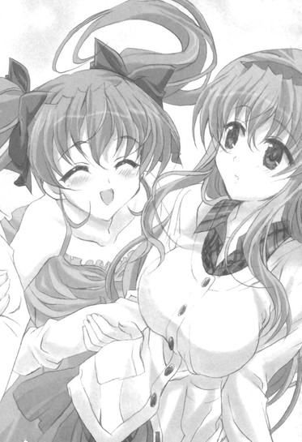
「み、美夏？」
どうしたんだ急に......？
突然のツインテール娘のアクションに困惑する俺たちに。
「えへへ、おに～さんもお姉ちゃんも、二人とも大好きだよっ♪」
「え？」
「あ、あの......？」
何だ突然......
「ふふ～、何でもな～い。二人を見てたら改めてそう思っただけ♪やっぱりわたしは二人で笑ってるおに～さんとお姉ちゃんが好きってゆうか。......あ、でもだからってわたしの気持ちには変わりはないよ？それはそれこれはこれ、なんだから～。えへへ～♪」
にっこりと笑いながらそんなことを言ってくる。
その笑顔は何だか何かをやり遂げた達成感のようなものに満ちていて......
「あ、あー、......？」
「え、えと......？」
いや何が言いたいんだろうね、このツインテール娘......？
さっぱり分からんというか。
春香と二人して顔を見合わせるしかなかったのだった。
エピローグ
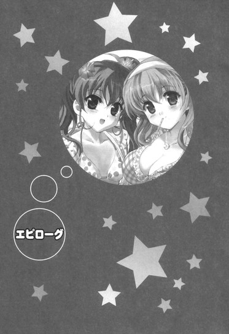
「それじゃあこれより、乃木坂家主催の第七回大お花見大会をはじめま～す♪はい、みんな～、グラスを持って──かんぱ～い♪」
辺りにそんなツインテール娘の声が響き渡った。
続いて「かんぱーい！（×約三十）」の声とグラスを打ち鳴らされる音が同時に辺りに響く。
──今日は春休み最終日。
ツインテール娘の誕生日パーティの二次会的なものと新学期に向けての新しい門出（？）のお祝いも兼ねてということで、乃木坂邸の庭園（のほんの一区画の中のさらに一部分。桜の木が群生している場所）に集まって花見大会を行っているのだった。
「わあ、桜さん、とってもきれいですね......♪」
「ん、そうだな。ここのところ気温が高かったからちょうどいい感じに咲いてて......」
「はい♪ ぽかぽか陽気に桜さんが微笑んでいるみたいです♪」
「うんうん、桜といえば何と言っても日本の春の代名詞だからね～。でも惜しむらくは美夏ちゃんのぷりてぃ～さの前ではちょ～っと霞んじゃってるところかな？ね、那波さん♪」
「そうですね～。とってもかわいらしいですよ～、美夏様～♪（なでなで）」
「えへへ～♪」
「......桜の花びらといえば何と言っても遠山の金さんです。本名は遠山金四郎景元で江戸の北町奉行と南町奉行を勤め上げて......」
「──（こくこく）」
参加者は春香、美夏のお嬢様姉妹、無口メイド長さん、にっこりメイドさん、ちびっこメイドをはじめとした序列持ちのメイドさんたち。
「ははははは！ やはり花見といえば酒だろう！この杯に落ちる花びらが何ともいえずに風流だ！」
「うふふ、いいお酒がたくさんあるわね～ん♪さすが乃木坂さんのおうち。おねいさん、もうここに住んじゃいた～い♪」
「お、お前たち、それは私の秘蔵の日本で年間三十本しか生産されない『秘酒羆殺し登別乃地獄』......！」
「ん、そうなのか？」
「あらん、道理でおいしいと思ったわ～ん♪」
「な、何を当たり前のように......！ い、今すぐに蔵に戻して......」
「あらあら、お二人ともいい飲みっぷりですね。よろしければ私もごいっしょさせていただこうかしら？」
「おお、いいな、奥方」
「いや～ん、すてきんぐ～♪」
「あ、秋穂......？」
春香父、秋穂さん、うちのアホ姉とその親友の保護者グループまでは当然として。
「ねえねえ知ってるー？ 桜の木の下には死体が埋まってるって話ー☆」
「うんうん、それでそのちのいろで花びらが染まってるって話だよねぇ♪」
「そ、そうなのですか、光、美羽......？」
「うんー、さらにそれを求めて毎夜毎夜鬼が辺りを徘徊するとかー☆」
「それを見た人はばりばりって頭から食べられちゃうんだってぇ♪」
「さ、桜......そんな呪われた木だったんですね......」
双葉女学院の中学生組。
「ほれほれー、みんな盛り上がっていこうぜー♪」
「りょ、良子ちゃん......くつろぎたくなるのは分かるけど、スカートでそんな風にあぐらかいて座ったら見えちゃうよ......」
「えー、細かいこと言うのはお花見の席では野暮だぞー。ほらほら、いいから麻衣も足だけじゃなくて色んなところもくずしちゃえー♪」
「きゃ、きゃっ！ りょ、良子ちゃん!?」
「ま、麻衣！ ほ、ほら、良子もいいかげんにしなさい！麻衣が泣きそうだから......！」
さらには澤村さん、朝比奈さん、椎菜の白城学園組も来ているのだった。
ちなみに三馬鹿たちと信長の男子グループもいたりする。
全体的にオールスターというか何というか......
「............」
うーむ、賑やかだな......
そんなことを考えながら目の前の騒然とした光景を眺めていると。
「あ、裕人さん。よろしければ甘酒を飲まれますか？」
「え？」
「お花見に合うかと思って甘酒を造ってきたんです。よろしければ♪」
「ああ、悪い」
「はいです♪ どうぞ♪」
春香がこの上なく心を許した顔で微笑みながらコップに甘酒を注いできてくれる。
「あ、でもこのままだとちょっと熱いかもですね。冷まさないと。ふ～ふ～しますね♪」
「え、い、いや、そこまでしてくれなくても......」
「遠慮しないでください♪ すぐに冷めますから♪（ふ～ふ～）」
両手でコップを握りながら一生懸命に息を吹きかけてきてくれる。
む、むう、なんかここまでしてもらうのは照れくさいな......
そんな風にふ～ふ～アクションをやってもらっていて。
「あれー、春香ちゃんと綾瀬っち、ちょっと見ない内にまたなんか仲良くなった感じなんじゃないー？」
「え？」
と、それまで朝比奈さんの服を着崩させようとしていた澤村さんがにやにやとそんなことを言ってきた。
「注いであげた甘酒を冷ましてあげるなんて、何だかもう夫婦みたいっていうかー。まるで二人して同じ場所で一つの夜を過ごしたみたいな、そんな甘々な感じだぞー♪」
「え、い、いや」
「あ、え、えと......」
二人して思わず顔を見合わせて言葉を失う。
む、むう、何か知ってるんじゃあるまいな......？変なところだけ鋭いからタチが悪いんだよな、この白城版ツインテール娘......
その二つの触覚が有する恐るべき直感力に心から戦慄していると。
「あれあれー、おねーさんもそう思いますー？」
と、今度は光たちまでもが話に加わってきた。
「やっぱり春香おねーさんと裕人おにーさん、普通の仲の良さじゃないですよねー。なんか空気が違うっていうかー☆」
「うんうん、思う思うー♪ ってきみたちはー？」
「はーい、あたしたちは美夏の友達で中学のクラスメイトでーす☆あたしは初瀬光でー」
「美羽は、藤ノ宮美羽なのぉ♪」
「あ、塔ヶ崎エリと申します。よろしくお願いいたします、澤村先輩」
「お、そなんだー。私は春香ちゃんと綾瀬っちの友達でクラスメイトの澤村良子♪よろしくねー、光ちゃんたちー♪」
「はーい☆」
「よろしくなのぉ♪」
「はい」
お互いに挨拶をし合って。
「それでそれで、やっぱ綾瀬っちと春香ちゃんは怪しいと思うよねー？ほとんど阿吽というかツーカーな感じだぜー♪」
「ですよねー☆ もう白か黒かで言えば確実にクロだと思いますよー」
「うんうん、ぶらっくなのぉ♪」
「そ、そうなのですか......？」
「............」
意気投合する白城版ツインテール娘と双葉女学院のかしまし娘たち。
何だか引き合わせてはいけない二組を引き合わせてしまったような気がするのは......俺の思い過ごしであってほしいんだが。
そんな感じにお花見は進んでいった。
賑やかで華やかでどちらかと言えば騒がしい感じのひと時。
各所ではそれぞれがそれぞれ思い思いに花見という名の共有時間を楽しんでいる。
「ははははは！ 今日は実に良い日だな！ ほれ、お前たちも飲むがいい......ひっく」
「そうよ～ん♪ 今日だけはせんせいが許しちゃう～......うい～」
「う、うぐう......」
「も、もう飲めません......」
「む、むしろ俺のマイボトルを飲ませたいというのに......」
桜の木の根元ではルコと由香里さんが三馬鹿たちに酒を飲ませていて。
「うふふ、みなさんお元気ですね」
「......むう、騒がしい」
「いいではないですか。これもお花見の醍醐味というものですよ。私は楽しいですよ♪」
「......うむぅ......」
その脇では玄冬さんと秋穂さんがしっとりとそんな会話を繰り広げていて。
「そうそうー、やっぱり綾瀬っちがはっきりしないのが一番の原因でさー」
「分かりますー。おにーさん、優柔不断そうな顔してますもんねー☆」
「それに甲斐性なしなのぉ♪」
「あ、あの、おにーさんはそこまで悪い人では......」
「う、うん、あたしもちょっと言い過ぎかなーって思う......」
「えー、エリちゃんも椎菜も甘いよー。男なんてしょせんはケダモノなんだぜー？」
「そうですよー、オオカミです、オオカミー☆」
「がお～、なのぉ♪」
そこから少し離れたシートの端の方では澤村さん、朝比奈さん、椎菜と中学生トリオたちが人の話題で盛り上がってる最中で。
「......やはり金さんの魅力はその人情的な裁きにあると思うのです」
「──（こくこく）」
「......人情が介在することによる一辺倒ではない裁き。さらには身分を隠していることによるカタルシスも魅力を上乗せする要素となっています。あの桜吹雪は水戸黄門における光圀公の印籠と同じ役割を果たしていて......」
「──（こくこくこくこく）」
その横では葉月さん（いつの間にか江戸時代の奉行のコスプレをしてる......）とアリスが相変わらず遠山の金さんについて渋く語り合っている。
「......」
うーむ、カオスだな......
だれもかれもがあまりにも思い思いすぎるというか......
と。
「あれー、美夏ちゃん、何だかちょっと大人っぽくなったんじゃないのー？」
「え？」
それまで『スケコマシ』だの『天然ジゴロ』だのの単語ばかりが耳についていたシートの端の方からそんな声が聞こえてきた。
「どことなく雰囲気が変わった感じっていうかー。ふふー、これはなんかあったなー？ほれほれ、何があったのかお姉さんに白状してみろー♪」
「わ、ちょ、ちょっと、澤村おね～さん!?」
「いいからいいからー♪ んー、胸もちょっとおっきくなったー？なーんか肌もつやつやしてる感じだし......おー、ふともももすべすべだー♪」
「い、いや......そ、そこ......は......だ、だめだよう......」
「............」
見てみるとなんかツインテール娘が大変なことになっていた。
白城版の方のツインテール娘に後ろから抱きつかれてシャツやらスカートやらをまさぐられている。
「ほらほらー、もう覚悟を決めて何があったのか大人しく白状しちゃえー♪──あ、もしかして綾瀬っちと何かあったとかー？」
「え！」
と、そこで今度は澤村さん、そんなことを言い出した。
「お、その反応、もしかしてビンゴかー♪綾瀬っちめ、まーたスケコマシっぷりを発揮したのかー♪」
「......」
「もー、ほんとにだめだめだなー。女の子の気持ちが分かってないクセに肝心なところで翻弄だけはさせるんだからー。あの天然タラシめー♪」
「............」
言いたい放題なその言葉に。
「──そ、それは違うよっ！」
「え？」
と、遮るようにそんな大きな声が響き渡った。
物騒がしい宴会の最中にあってよく通るそれは......ツインテール娘から発せられたものだった。
「み、美夏ちゃん......？」
「お、おに～さんはそんなんじゃないんだもんっ！そ、それは確かに優柔不断でだれにでも優しすぎるところはあるかもしれないけど、ほんとのところは真面目で誠実で......！」
明らかなフォローの言葉。
いやエリとかならともかく......このツインテール娘がこんなことを言うのは意外なことこの上ないんだが。
「女の子の気持ちが分かってなくて無神経に見えるかもだけどものすごく気を遣ってくれるところもあって、わ、わたしはそんなおに～さんが大好きで──あっ!?」
そこで美夏ははっと我に返ったみたいだった。
恥ずかしそうに顔を真っ赤にしながらツインテールをぶるんぶるんと振り回すと。
「あ......い、今のは違うんだからねっ！な、なんてゆうか言葉の綾というか勢いで言っちゃっただけで......べ、別におに～さんのことをかばったとか、と、とととくべつに、好き、だとか、そういうわけじゃ全然ないんだから......っ！」
大声でそう叫んだのだった。
むう、別に本気じゃないってのは分かってるんだからそこまで否定しなくてもいいのにな......
桜の花びらが穏やかに舞い落ちていた。
花見が行われている宴会場から少し離れた場所。
そこで──春香と二人で色鮮やかな桜の木を見上げていた。
「わあ......こちらの桜もキレイですね♪」
「ああ、そうだな」
そう楽しそうに見上げてくる春香にうなずき返す。
段々とカオスを通り越してアナーキーな様相を呈してきたお花見会場を少しだけ抜け出して、穴場の桜スポットがあるとのことで春香と二人でこっちへとやって来たのだった。
「どうやらこちらのは山桜のようです。染井吉野とは違う自生種で、花びらが五枚あるのが特徴になっていて......」
「そうなのか？」
「はいです。関西の吉野山などで特に有名な桜で......♪」
お花見会場で見たものよりも少しだけ小さく清楚な感じの桜を見上げながらそんなことを話していて。
「それにしても......早いですね。明日からもう三年生だなんて」
「ん、ああ」
と、春香がぽつりとそう言ってきた。
「まだちょっと信じられない感じです。裕人さんと知り合ってからもうすぐ一年......。ついこの間まで夏だったような気がします......」
ちょこんと首をかたむけながらそう言ってくる。
本当にこの一年はあっという間だったような気がする。
流れるような速さでまさに光陰矢のごとし。
だけどその中身は決して薄いものではなくて、むしろそれとは対照的に水を足す前のカルピス原液のように濃いことこの上ないものであって......
そんなことを考えていると。
「それでも......この春休みは特別に記憶に残るものでした。打ち上げや美夏の誕生日パーティーがあって......何よりも、その、ゆ、裕人さんと二回目の、で、で～と、と、『初めてのお泊まり』を経験することができて......」
「春香......」
「とっても思い出深くて、有意義なものでした......。どれも全てが初めて経験することばかりで......」
春香の言う通りだった。
そう、この春休み。
この一年間、本当に様々なことがあって目まぐるしいことこの上なかったが......その中でも最も印象的だったと言っても過言ではないことがこの春休みに集中して発生した。
それは──様々な感情の変化。
椎菜の告白。
美夏の新しい笑顔。
そして俺が自分の気持ちについて認識して......そして春香も......少しずつだが『好き』という気持ちについて理解を始めている。
その進捗具合は目に見えるほどのハッキリしたものではないが、それでも少しずつ確かに前に進んでいると実感させられるもので......
「......」
現状に至るまでのこれまでの過程に思いを馳せていると。
「──あ、裕人さん」
「ん？」
「頭のところに桜の花びらがついています。えと......よければとりますのでしゃがんでくださいです」
春香がちょっとだけ背伸びをしながらそう言ってきてくれた。
「お、悪い」
その言葉に答えて身体を屈めようとしたところで。
──きゅっ♪
温かで柔らかな感触で全身が包まれた。
同時にふわりと漂う落ち着く香り。
気付いたら──頭のところを抱きしめられるようにして、俺の上半身が春香の胸の中に収まっていた。
「は、春香!?」
な、何をするんだ!?
これはまさかふいにフロントスイーパーをかけたい気分になった......ってわけではあるまい。
予想外すぎるぽわぽわお嬢様の行動に思わずそんな声を上げると。
「──です......」
「え？」
「ちょ、ちょっとした、おまじない、です......。その、満開の桜の木の下で、自分が大切だと思う人をぎゅっと抱きしめると、きっと新学年でも同じクラスになれると......美夏たちに教えられて......」
「............」
またあのツインテール娘......
いくら何でもその内容はピンポイントすぎるだろ......
まあそれを疑いなく信じるこのぽわぽわお嬢様もお嬢様なんだが......
それぞれの意味で相変わらずの乃木坂姉妹クオリティに心の中で小さくため息を吐く俺に。
「──裕人さん」
「ん？」
きゅ～っとひとしきり俺の身体を抱きしめた後に春香は少しだけ身体を離したかと思うと。
「私......裕人さんのこと、大好きです♪ 三年生になっても......よろしくお願いしますね♪」
これ以上ないってくらいの満面の笑みを浮かべて、そう微笑んだのだった。
まあ......終わりよければ全てよし、か。
こうして最後は春の風が吹き抜けていくような春香の笑顔とともに。
本当に色々な出来事があった春休みが、終わりを告げたのだった。
＋ ＋ ＋
──同時刻。
「裕人さんと春香、ずいぶんと仲良くなったみたいですね」
「む......」
「二人がいっしょにいる時は本当に自然な感じだし、春香があんなに甘えた表情をするのは見たことがない。二人ともとても楽しそう。まるで若い時の私たちを見ているみたいじゃないですか、あなた」
「それは......そうだが。ぐう、しかしあのような男に春香を......」
「ふふふ、そんなことを言っていてもあなたがきちんと裕人さんのことを認めているのは知っているんですよ♪あなたが関心のない相手に、少なからず認めていない相手を良くも悪くもあんなに意識することはないですもの。でも──」
そこで声音がすっと下げられた。
同時にその表情も厳しいものになり──
「でもそろそろ......時間かしら。楽しかっただけの子供の時間は終わって、大人への扉を開くための期限が来てしまう......。それは必然であって、どうやったところで避けられはしないこと......」
「秋穂......」
「あの子たちにはかわいそうなことになるかもしれないけれど......こうなることは、最初から決まっていたことだから」
「そう......だな」
苦々しいながらも肯定を含ませる返事。
二人顔を見合わせながらうなずいて。
「願わくば......それが少しでもあの子たちに何かを残すものになるといいですわね」
「............」
そう視線を交わし合ったのだった。
あとがき
こんにちは 五十嵐雄策です
『乃木坂春香の秘密』13巻をお届けいたします。
本巻は四十七話から四十九話まで、全て書き下ろしとなっています。
今巻は主に春香と美夏の、乃木坂姉妹のお話となっております。
詳しく書くとネタバレになってしまいますので控えますが、ここに来てようやく色々と各人の感情やら思惑やらが動き出し始めてきた感じです。
次巻からは新学年及び新学期のお話となるのですが、二度目の春の到来とともにいよいよ物語も本編のラストエピソードに入っていく予定でありまして......。来年の夏頃にはお届けできると思いますので、どうぞ最後までお付き合いいただけると幸いです。
以下は本書を出すにあたってお世話になった方々に感謝の言葉を。
担当編集の和田さま三木さま、イラストのしゃあさま。いつもありがとうございます。残りのエピソードも気合いを入れていきたいと思いますので、どうぞよろしくお願いいたします。
また本巻で遊園地を書くにあたって取材に付き合ってくれた方々、どうもありがとうございました。
そして最後になりましたが、この本を手に取ってくださった全ての方々に感謝の気持ちを。
それではまたお会いできることを願って──
底本：乃木坂春香の秘密⑬
五十嵐雄策
二〇一〇年十二月十日 初版発行
入力：
校正：鹿仔
底本３８頁１３行・ｔｘｔ３８８行
顔面がハバネロ状態：ハバネロは種類（レッド、オレンジ、ホワイト、ピンク、チョコ等々）があり、顔色を言いたいなら指定したほうが良いのでは？それとも「暴君」状態？
底本８３頁１７行・ｔｘｔ９５３行
顔面は熱で鉄板のようになったほとんど照り返しのアスファルト状態：「顔面は熱した鉄板のようになったほとんど照り返しのアスファルト状態」か「顔面は熱でほとんど照り返しのアスファルト状態」？
底本８８頁１２行・ｔｘｔ１０２３行
手足をバスローブの腰布ででも縛って：袖のほうが縛りやすいが、「腰帯」がもっと良い。
底本９９頁１７行・ｔｘｔ１１７８行
見取れ：「見蕩れ」か「見惚れ」？
底本２４５頁１行・ｔｘｔ３１０８行
仰向けてになった：「仰向けになった」か「仰向けて横になった」？
底本２７９頁１１行・ｔｘｔ３５７０行
気持ちがで分かってない：「気持ちが分かってない」「気持ちがまるで分かってない」「気持ちがてんで分かってない」？